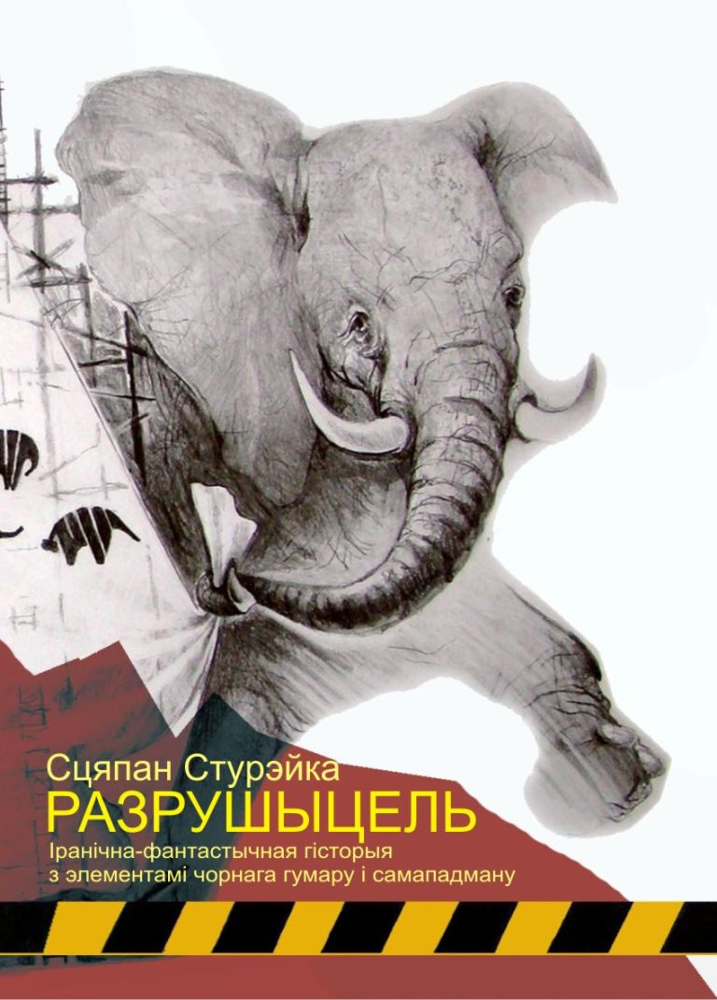

Прысвячаецца ўсім палеглым у баях за спадчыну
У старой музейнай падсобцы панаваў паўзмрок. Жоўтае святло ад прыгожай старасвецкай лямпы на падваконні ледзь сягала твараў прыяцеляў. Усе пяцёра схіліліся над дубовым ампірным сталом. Стол не прызначаўся для распіцця напояў – гэта быў экспанат з нумарам захоўвання 34-412б. Але так ужо павялося – музейшчыкі могуць дазволіць сабе выкрутасы.
Працоўны дзень даўно скончыўся, але гэтым людзям падабалася заставацца тут даўжэй. Рамантычная атмасфера рэнесанснага баторыеўскага палаца найлепш пасавала інтэлігенцкім размовам аб лёсах айчыны і продкавых запаветах.
Перыядычны верталётны строкат, што час ад часу даносіўся з прыадчыненага вакна, не проста вяртаў іх да рэальнасці, але надаваў нейкае дадатковае вымярэнне размовам. Бо ж сядзелі яны не дзе-небудзь, а ў горадзе Нёман, у былым каралеўскім замку, што стаяў на абрыве ракі Кронан. А цякла тая рака па самым краі неабсяжнага Савецкага Саюза.
Ім было даволі хораша. Маленькая бутэлечка з настойкай амаль апусцела. Мікраскапічныя, яшчэ польскага часу кілішкі стаялі тут жа. Заставалася па адной. Як казалі людзі з Усходу – страмянной.
Сёння акрамя музейшчыкаў у падсобцы сядзеў і Данііл Міхайлавіч – адказны супрацоўнік аддзелу культуры Нёманскага аблвыканкама. Хлопец малады, зусім новы туташнім мясцінам. Зайшоў па працоўнай нагодзе, але, паддаўшыся творчай гасціннасці, так і застаўся на вечарыну. Побач з ім размясціліся навуковыя супрацоўнікі ды парачка экскурсаводаў.
Роўна насупраць Данііла трымаў пазіцыю сівы Валянцін Пятровіч – даўні загадчык фондавага аддзелу. Не часта заставаўся ён тут з калегамі, але сёння прывабіўся на новы твар. Цяпер Валянцін Пятровіч ужо добра раскумарыўся:
— Так, так. Усё, што ты, Міша, кажаш, слушна. Людзі і не такое вытвараюць. Часам і не ведаеш, што думаць. Але я ўжо не бяру да галавы. Ну чым здзівіце вы мяне? Прынамсі, я з чысцюткім сумленнем магу сказаць: разумею, што нічога не разумею ў гэтым свеце. А некаторыя і тое, як вужакі! Га? – ён павярнуў галаву да суседа. – Я табе, Сяржук, распавядаў хіба пра свайго неймавернага сябра Палёнага?
— Легенды ходзяць, але вось хачу з вашых вуснаў паслухаць пра гэтага так званага таварыша, – адазваўся чалавек з тварам мастака-афарміцеля. – Вось і Даніілу нашаму Міхайлавічу, мабыць, будзе цікава, так жа?
Данііл заківаў. Астатнія прысутныя таксама захацелі паслухаць неверагодныя прыгоды. Валянцін Пятровіч запаліў папіросу, уздыхнуў і стаў распавядаць:
— Быў у мяне аднакурснік, можа нават і сябар, па мянушцы Палёны. Цяпер ён ужо памёр. Каб не растрасаць загоеныя раны, не буду называць сапраўднае прозвішча – яго родныя дасюль працуюць у сталіцы, ды і ў нашым горадзе засталіся.
Палёны запомніўся як вельмі вясёлы і жыццярадасны хлопец. Як і ўсе мы ў часы юнацтва, захапляўся бунтарствам, філасофіяй ды самвыдатам. Слухаў, натуральна, рок-музыку, стыляжнічаў паціху, але тое было ўжо не надта модна і наогул да сэрца не ляжала. Яго гарэзны характар увесь час выдаваў свету нейкія надзвычайныя жарты. Яны, гэтыя жарты і жартачкі, былі настолькі вытанчаныя, што людзі часцей за ўсё зусім іх не разумелі. Прыходзілася смяяцца ў адзіноце. Заходзіў часам Палёны да мяне, я бачыў яго сумныя вочы. І спачувальна ўсміхаўся.
Дык вось, пачалося гэта яшчэ на гістарычным факультэце. Гісторыя адрозніваецца ад іншых навук тым, што нават самы сівы акадэмік найчасцей не ведае яе дастаткова добра. Бо што ж там ведаць – даты і факты? Іх мільёны! Старыя савецкія прафесары – няроўня віну – з часам псуюцца. Яны забываюць тое, што калісьці з боем здавалі на спісаных іспытах, становяцца важнымі і напышлівымі. Цкуюць студэнтаў памалу. А наогул – пішуць нецікавыя кнігі і жывуць ва ўласным больш-менш утульным свеце.
Палёны спавядаў метад творча апрацаванага рэалізму. Як сам потым прызнаваўся, за ўсё жыццё ён здзейсніў толькі адзін абачлівы – але наканаваны! – учынак: паступіў на гістфак. Але што паробіш, назад шляху няма. Каб аднойчы канчаткова не з’ехаць з глузду, прыйшлося выкручвацца.
“Я шалею ад іх! Я мушу жыць іначай!” – крычаў ён мне апасля чарговай авантуры, калі мы ўпотай выпівалі ў інтэрнацкім пакоі.
Каб не згінуць на працы ў занальным архіве, але і не згубіць твару, ён вырашыў прыкінуцца, што грае па правілах гэтай дзіўнай гістфакаўскай гульні. Але толькі прыкінуцца! Трэба займацца навуковай дзейнасцю? Калі ласка, зоймемся! Ды не простай, а ого-го якой навуковай! Самай навуковай!
Каб пачаць, трэ было спярша прыдумаць добрую тэму. Умова адна: каб у ёй ніхто апроч цябе ніфіга не шарыў, і лішніх пытанняў не задаваў. А гэта ж у навуковых колах яшчэ і заахвочваецца! Маўляў, даследуе малады чалавек недасяжныя раней далягляды!
“Камсамол РСФСР – актыўны памочнік партыі ў арганізацыі сацыялістычнага спаборніцтва на гарбарных прадпрыемствах рэспублікі ў гады другой пяцігодкі”. Як вам тэма? Або “Сям’я і шлюб украінскіх сялян у другой палове XIX — пачатку XX стагоддзя”. Як на падбор! Галоўнае, як мага далей адсюль, і каб чытаць работу было нецікава ад самай першай старонкі.
У ленінку Палёны схадзіў два разы. Першы – каб скласці спіс навуковай літаратуры. Другі – пачытаць кніжку з серыі “Страны и народы мира”. Гэта каб атрымаць сапраўднае акадэмічнае ўяўленне аб прадмеце “даследавання” і быць па ведах нароўні з акадэмікамі. Далей – толькі вольны палёт. Ужо чаго, а фантазіі хапала аж з гакам. Палёны ў драбніцах распісваў матэрыяльную культуру качэўнікаў, паспяхова лавіў адрозненні ў пантэонах паўночных плямёнаў, вылучаў нюансы пахавальных абрадаў і гэтак далей.
Выходзіла бліскуча! Толькі выдатна на ўсіх іспытах, чырвоны дыплом, удзел у міжнародных канферэнцыях і нават дзве публікацыі! Адна – у зборніку Пензенскага педагагічнага інстытута, другая – ва ўніверсітэцкай малатыражцы. Усё гэта разам дазваляла без праблем праскочыць у аспірантуру. Далейшае жыццё бачылася пераважна ў ружовых колерах.
Але нешта сапсавалася. Не, не тое што прафесура прачухалася. Самому захацелася чагосьці большага. Каб павага ад грамадскасці была ці нешта такое. Яно зразумела – з наяўнымі талентамі Фернанам Брадэлем не станеш. Ды што там – да Сказкіна не дабрацца…
“Я навучу людзей ганарыцца героямі, мінулае – бессмяротна!”, – крыкнуў ён мне з вакна адыходзячага на Магілёў цягніка.
Палёны напісаў заяву аб выхадзе з аспірантуры па ўласным жаданні і “адбыў на месца сталай працы”. Праца знайшлася ў Магілёўскім раённым доме культуры, куды ён трапіў па пратэкцыі навуковага кіраўніка. Сэрца паклікала ў шлях: Палёны прыдумаў новы аб’ект прыкладання таленту. Ён проста аднойчы зразумеў, што савецкія грамадзяне, асабліва начальнікі, гісторыі не ведаюць зусім-зусім, а трапятанне перад ёю ў іх надзвычайнае. Адкуль гэта пайшло – таямніца вялікая. Што ні пачынай ім распавядаць – круглыя вочы і дзіцячае захапленне. Але галоўнае – усё прымаюць за чыстую манету.
На няшчасце начальнікаў, на той час акурат прыйшлася хваля ўшанавання загінулых ад фашысцкіх зверстваў піянераў ды юнакоў-падпольшчыкаў. Палёны з ходу прапанаваў усталяваць у гарадскім парку манумент з імёнамі маладых патрыётаў. Каб здабыць тыя слаўныя імёны, яго, выплаціўшы шчодрыя камандзіровачныя, на два тыдні накіравалі ў маскоўскія архівы. Там, ужо ў белакаменнай, фарсіраваннымі тэмпамі адмыслова да шасцідзясяціпяцігоддзя Усесаюзнай піянерскай арганізацыі з’явіліся на свет – былі вынашаныя і народжаныя ў цяжкіх пахмельных муках – імёны чатырох дзясяткаў маленькіх змагароў. Жорсткай запойнай раніцай здзейсніў подзвіг шаснаццацігадовы юнак Аттапырын. Ён уварваўся ў нямецкую камендатуру з двума шмайсерамі, грохнуў палову афіцэрскага складу, вызваліў вязняў-камуністаў, але быў акружаны і маляўніча загінуў, падарваўшы сябе на апошняй гранаце. Сталася гэта за тры дні да вызвалення горада. Слава героям!
Дырэктар Дома культуры быў чалавек ахвочы да грамадскай актыўнасці, таму нажыўку праглынуў лёгка. Ух, колькі ж гонару атрымалася! На цырымонію адкрыцця манумента прыехала цэнтральнае тэлебачанне. Інтэрв’ю ў Палёнага ўзялі адразу чатыры газеты – тры раённыя, адна рэспубліканская. Дырэктар пайшоў яшчэ далей і парупіўся ў гарвыканкаме аб пераназванні адной з гарадскіх вуліц у гонар героя. Усё так і зрабілі.
Я глядзеў па тэлевізары на шчаслівы твар Палёнага і мне здавалася, што ўсё гэтае відовішча задуманае дзеля аднаго толькі гледача.
“Я на крок ад перамогі!”, – амбітна паведаміў ён мне па тэлефоне ў той самы вечар.
Палёны паглядзеў на гэтыя радасныя твары і стала яму млосна. Ён узяў ды паведаміў маладому мясцоваму журналісту пра тое, што ўсе слаўныя гістарычныя падзеі былі толькі плодам фантазіі блізкага да алкагалізму маленькага чалавека. Разлік быў, вядома, на грандыёзны скандал. Палёны нават меў надзею, што яго яшчэ раз пакажуць па тэлевізары.
Але раптам высветлілася, што аб прынцыпах грамадскага ўладкавання малады чалавек ведаў яшчэ недастаткова. Прынамсі, менш за партыйных ідэолагаў. Нявопытны быў. На тым і пагарэў.
Галоўны рэдактар абласной газеты, на якую так разлічваў Палёны, апынуўся вялікай скацінай. Жаданы скандальны матэрыял у друк не прайшоў. Журналіста-памочніка перасунулі ў аддаленую раёнку. З усімі чальцамі рэдакцыі, якія паспелі прачытаць прызнанне, асобы ў штацкім правялі выхаваўчыя гутаркі, каб рта не адкрывалі. Пра юнакоў-герояў жыхары горада забылі на наступны дзень. Усё сцішылася. Мемарыял не прыбралі, а скандал замаўчалі. Замест помніка прыбралі дырэктара Дома культуры. Цяпер ён ачольвае абласную арганізацыю перасоўных кінаўстановак. На той пасадзе зараз працуе іншы адданы камуніст, які ў абавязковым парадку штогадова ўшаноўвае юных ахвяраў фашызму ды праводзіць вечарыны памяці. Цяпер ён куды больш падазрона ставіцца да гістарычных ініцыятыў ад спагадлівых гараджан.
А Палёны – нічога, застаўся на месцы, пад наглядам. Такой ганьбы ён не вынес і з гора кінуў піць.
“Але ж я яшчэ нечага варты? Я ж не пустышка? Я хачу і буду рабіць людзям дабро!” – у апошні раз я тады чуў яго сумны, амаль плаксівы голас.
Ён звольніўся яшчэ раз, замёў сляды і знік з горада. Невядома як дамовіўся з Бабруйскай узбуйненай друкарняй, наштампаваў стос таямнічых папер і пераехаў кудысьці за сярэдні Урал. Там, у адным з невялічкіх гарадкоў на базе мясцовага ПТВ ён адкрыў спецыяльную школу ад Маскоўскага дзяржаўнага ўніверсітэта імя Міхайлы Ламаносава. Дзеці набіраліся з восьмага класа і рыхтаваліся да паступлення ў ВНУ са шматлікімі зніжкамі. Выходзіла так, нібыта ўсесаюзны ўніверсітэт шукаў самародкаў у глыбінцы. І знаходзіў!
Бацькі тэлефанаваць у Маскву, вядома, не здагадаліся. Што яшчэ больш верагодна – проста не захацелі, бо міжгародняя сувязь задавальненне не таннае, ды і грэх добраму чалавеку не верыць.
Палёны арэндаваў некалькі памяшканняў ПТВ, усе падручнікі ды абсталяванне купляў за свае грошы. А што меў замест? Толькі павагу ад усіх жыхароў гарадка. Такую доўгачаканую! Паціху ён ізноў пачаў піць. Да выкрыцця афёры заставалася пару гадоў, пакуль першы набор дзяцей не падрасце. Можна было жыць…
“Дарма жыў чалавек, калі не было ў яго лёсе сапраўдных момантаў уздыму”, – так заканчваўся апошні ліст гэтага чалавека да мяне.
Больш звестак аб ім не прыходзіла. Толькі нядаўна адзін з аднакурснікаў даслаў тэлеграму, што Палёнага больш няма. Калі гэта здарылася і ў якім менавіта горадзе, мне не паведамілі. Ведаю толькі, што жонкі ў Палёнага так і не з’явілася.
Валянцін Пятровіч моўчкі разліў усім рэшткі з бутэлькі і запаліў яшчэ адну папіросу.
— Вось гэта нумар! – уздыхнуў мастак-афарміцель. – Во чалавек дык чалавек, чалавечышча! Так гэтых камуністаў за нос вадзіў, што ўсцацца можна! – ён паглядзеў на Данііла, адзёрнуўся і закашляў.
— Але шарлатан! Шарлатан! – загаманілі іншыя.
— А я думаю, што гэта здарылася зусім невыпадкова. У нашай-та краіне і з гэткімі-та людзьмі… – тут відавочна думкі падзяліліся, але даволі хутка з абмеркавання авантураў усе перайшлі на звыклую сумесь музейных і побытавых баек.
Валянцін Пятровіч так і сядзеў моўчкі, пакуль не выспела агульнае жаданне разыходзіцца.
Данііл выйшаў разам з музейшчыкамі на замкавы ганак. Перад носам пранёсся ашалелы травеньскі хрушч. Знізу прыемна пахла ракою. Яму вельмі падабалася гэтае месца. Абавязкова трэба будзе прыдумляць нейкія нагоды заходзіць сюды часцей.
Так у філасофскіх развагах аб праўдзе і мане Данііл дайшоў да абкамаўскага інтэрната. Заўтра быў працоўны дзень, таму, з’еўшы бутэрбродаў з Любіцельскай каўбасой, прыйшлося адразу легчы спаць. Ён сніў апусцелыя плошчы горада Нёман.
Тут, відаць, да месца будзе зрабіць водступ ды распавесці, хто такі гэты Данііл, якога музейшчыкі называлі з імём па-бацьку не па ўзросце, а хутчэй па пасадзе.
Данііл нарадзіўся ў сям’і савецкага вайскоўца, у горадзе шахцёрскай ды лагернай славы Карагандзе. Зрэшты, акрамя запісу ў пасведчанні аб нараджэнні з Карагандой яго не нітавала больш нічога. Бацька хутка атрымаў іншае прызначэнне ды пераехаў бліжэй да Еўропы – у Чалябінск. Марылася тады ім аб ГДР, але лёс не склаўся.
Дзяцінства ў ваеннай частцы не пакінула яскравых успамінаў. Частай забавай там было глядзець на салдатаў, якіх бадзёра шыхтавалі на плацы. Рэдкай забавай – праехацца на ліхім БМП. Бранемашына рамантычна смярдзела саляркай і здавалася нязломнай.
Школа, куды іх вазілі, была вельмі сярэдняй. Хлопчык скончыў яе харашыстам ды паступіў на геаграфічны факультэт Кіраўскага педінстытута. З дзяцінства, праўда, хацелася паступіць на гістфак, але бацькі адгаварылі. Бацька бачыў у ім славутага географа-першаадкрывацеля – магчыма таму, што і сам па службе някепска спасціг геаграфію, а, магчыма, спрацавалі нейкія патаемныя комплексы. Бог ведае.
Інстытуцкія гады прайшлі ў цэлым спакойна. Яркіх момантаў таксама было не так і шмат. Вучыўся роўна, у адрозненні ад учорашняга героя Палёнага нават не спісваў на іспытах.
На трэцім курсе самых прыгожых дзяўчат і амаль усіх хлопцаў з групы выклікалі па чарзе ў дэканат. Там сядзелі незразумелыя таварышы ў шэрых неахайных касцюмах. Чамусьці яны пачыналі заводзіць недарэчныя размовы аб любві да радзімы. Ну а як яны маглі быць дарэчнымі, калі большасць факультэцкіх хлопцаў марыла адно што з’ездзіць у Маскву за хіпацкімі шмоткамі? А што ўжо казаць пра самых прыгожых дзяўчат! Данііла адзенне ў той час, які і цяпер, цікавіла, бадай, у апошнюю чаргу. З іншага боку, аб радзіме, якая была ўся тут – такая натуральная і стабільная – ён таксама не надта задумваўся. Таму на пытанне “Ты патрыёт?” проста апусціў вочы ў падлогу. Маёр, які задаваў пытанне, з прыкрасцю хрукнуў: “Эка ж жыдкі працу вядуць! Мы ім і выезд дазваляем, што ж яны ціснуцца тут, сукі?”
— Дык гэта вас гэбісты вербавалі! Гэтыя цэрберы паўсюль, заўсёды задумваюць кепскія, злыя справы. Сцеражыся іх! – патлумачыў потым Даніілу габрэйскі сябра Грыша Шац, калі яны, стоячы ў кафетэрыі, пілі гарэлку. Самога яго ў дэканат да шэрых пінжакоў не выклікалі. Данііл гэтыя словы зразумеў яшчэ меней, але кіўнуў.
Тым часам перадпенсійнага бацьку нечакана для ўсіх саслужыўцаў перавялі на дробную пасаду ў… Камітэт дзяржаўнай бяспекі. Такія пераводы не надта практыкаваліся. Бацькоўскія сябры здзівіліся і амаль адразу зніклі. Пасада была нейкая зусім недарэчная, але патрабавала штодзённай прысутнасці. Бацька пачаў затрымлівацца на працы. Пад канец стаў дрэнна сябе адчуваць. Выглядала, што згасаў. Акурат тады яго і адправілі канчаткова на пакой. Адной з апошніх праведзеных стратэгічных аперацый стала вялікая п’янка з нагоды юбілею начальніка, на якой ён майстарскі папрасіў за сына.
Калі прыйшла пара размеркавання, бацькоўскі клопат выліўся ў незвычайнае прызначэнне. Спярша ў дэканаце паказалі табліцу з запытамі ад арганізацый. Паспяховасць Данііла была не самай лепшай, таму ён ужо рыхтаваўся настаўнічаць геаграфію недзе ў Цэнтральнай Азіі. І тут раптам зусім іншая прапанова: адказны супрацоўнік па культуры ў Нёманскім аблвыканкаме.
— Сардэчна запрашаем на службу, сынок! – пяшчотна паляпаў Данііла па плячы рудавусы дэкан, ні кім са студэнтаў не любімы.
І дадаў, хітра падміргнуўшы:
— Будзеш выконваць даручэнні партыі, адказваць за музеі, тэатры, бібліятэкі, адным словам – будаваць сапраўдную, набліжаную да людзей культуру.
Гэта было зусім дзіўна. Чаму географа бралі на такую пасаду, разумелі адно сілавікі, якія ўладжвалі пытанне.
Хлопец па старой завядзёнцы падпарадкаваўся, суцешыўшы сябе, што да дому не так і далёка – шляху ўсяго трохі больш за суткі. Гэта ж Саюз – магло быць куды горш!
Данііл ніколі не выязджаў заходней Масквы, а тут адразу памежжа! У Нёмане ён ніколі не быў, нічога аб ім не ведаў. Родных і сяброў там таксама бракавала. У Нёмане стаяў вялікі хімзавод і некалькі абарончых прадпрыемстваў. Сярэдняга памеру гарадок, у Саюзе такіх нямала.
Ён прыбыў на працоўнае месца, як і належыць, напачатку восені. Нёман стаяў сшарэлы, і гэтым страшнаваты. Маладому спецыялісту далі пакой у інтэрнаце, у пешай адлегласці ад аблвыканкама. Натуральна, усё ў цэнтры горада.
Уласна працы было шмат і напачатку яна падалася вельмі нуднай: падрыхтоўка статыстычных зводак, справаздач, інструкцый; наведванне ўзорных выступленняў самадзейных народных калектываў. У першы месяц ён пабываў адразу ва ўсіх культурных установах горада, паглядзеў некалькі спектакляў мясцовага драматычнага тэатра. Некаторыя спадабаліся. Канешне, не абмінуў і абодва гарадскія музеі – атэізму і гісторыка-археалагічны. Назва апошняга адразу выклікала вялікі давер і павагу.
Непасрэдны шэф Данііла, старшыня Нёманскага аблвыканкама Васілій Іванавіч, быў някепскім начальнікам. Два гады таму яго даслалі з самой Масквы, дзе ён акурат скончыў Вышэйшую партыйную школу.
— Папярэдні старшыня, кажаш? – са штучным здзіўленнем паглядзеў на Данііла калега з суседняга кабінета. Відна было, што цікавіцца мінулымі начальнікамі тут не прынята.
— Дык правёў тут больш за пяць гадоў і знік у невядомым накірунку, – працэдзіў ён нарэшце без ахвоты.
Данііл адразу аброс новымі знаёмствамі. Праз тое, што вольнага часу не ставала, былі гэта ў асноўным калегі з працы – даволі ціхія, не надта адкрытыя людзі. Але тым не менш.
Паступова ён прызвычаіўся да Нёмана. Горад нават пачаў яму падабацца. Калі яго аднакурснікі з Кірава прасілі ў лістах апісаць новае месца, Данііл вылучаў толькі дзве адметныя рысы.
Першая – горад памежны, і ў тым яго сутнасць. Ад сібірскага цэнтру дасюль амаль чатыры тысячы кіламетраў. З Нёмана ж да першага замежнага пункта – менш за дваццаць пяць. Зусім блізка жыла нейкім уласным жыццём братняя сацыялістычная Польшча. Зразумела, бытуючая ў народзе тэза аб тым што “Польшча не заграніца” ў разлік тутэйшымі жыхарамі не прымалася. Усе выдатна ўсведамлялі: Польшча – яшчэ якая “заграніца”. Туды проста так не трапіш. А таму? А таму Нёман кішэў кантрабандыстамі.
Справа ў тым, што братняя сацкраіна перыядычна цішком прыадчыняла сваю заходнюю мяжу з не менш братняй ГДР. Карыстаючыся гэтым, нёманскія кантрабандысты зачаравана ўвозілі сюды выдатныя рэчы “інпашыў”. У зваротным напрамку везлі танную гарэлку ды цыгарэты. Такі атрымліваўся непаўнацэнны абмен: мы ім – шкодныя звычкі і ракавыя пухліны, яны нам – стыль і прыгажосць. З заходнімі капіталістамі інакш і нельга! Зрэшты, гарадскія сілавыя структуры трымаліся адваротнай думкі, рэгулярна арыштоўваючы ды адпраўляючы асабліва нахабных парушальнікаў у зусім далёкія савецкія паселішчы.
Горад кішэў міліцыяй, супрацоўнікамі КДБ, сексотамі, памежнікамі, мытнікамі і проста вайскоўцамі. З той жа нагоды ў ім месціліся некалькі вайсковых частак і нават цэлая верталётная база. Верталёты кружылі па-над Нёманам – над замкамі ды касцёламі. Спярша гэта захапляла Данііла, але потым ён перастаў іх заўважаць. Верталёты – як чыгунка пад вакном: варта толькі прызвычаіцца.
Другой асаблівасцю горада, якой, у адрозненне ад верталётаў, Данііл не прыдаваў у першыя дні аніякага значэння, была наяўнасць вялікай колькасці старых будынкаў. Нёман складаўся з дзвюх найцікавейшых частак, падзеленых ракой Кронан – старадаўняй і “новай”. Дакладнай даты заснавання горада ніхто, нават сярод гісторыкаў і музейшчыкаў, не ведаў. Неяк дзеля цікаўнасці Данііл запытаўся пра гэта, і тут жа сярод адмыслоўцаў разгарэлася спрэчка. Відаць, менавіта таму ў даведніках унікліва пісалі пра “першую траціну ХІІ ст.”
І ўсё ж у нёманскім старым горадзе колькасць старасвецкіх будынкаў была нашмат большай, чым ва ўсіх гарадах, дзе Даніілу даводзілася бываць дасюль. Хаця не, у Ленінградзе, куды ён яшчэ шкаляром прыязджаў на экскурсію, іх было нашмат больш. Сапраўды, у Ленінградзе старыя дамы дыхалі гісторыяй айчыны: вось тут шпацыраваў Пётр Першы, а тут – Кацярына Другая. Там жыў Пушкін, а недалёка – Грыбаедаў. У Нёмане ж ніхто са знакамітасцяў не жыў – толькі калісьці даўно палякі ды нейкія габрэі. Сэнсу ў такіх старых будынках без сапраўднай гісторыі было няшмат. Ды і архітэктура кепская таксама.
За тыя колькі месяцаў, што ён паспеў тут пражыць, малады чалавек заўважыў, што дамы паступова знікалі. Прыкладна раз на тыдзень будаўнікі разбуралі па адным будынку. Кожны раз калі гэта адбывалася, нешматлікія супрацоўнікі аблвыканкама з мясцовых ціха перашэптваліся ды ўздыхалі.
“Чаму вы так перажываеце?” – у думках запытваўся Данііл. Ён шчыра не разумеў, але саромеўся запытацца наўпрост. З ягонага пункту гледжання прычынаў для ўздыхаў не было. Старыя дамы не ўяўлялі каштоўнасці.
“Знакамітасці тут не жылі, прыгажосці ў іх не шмат”, – спрабаваў Данііл пераканаць іх ва ўяўнай спрэчцы. Але самае галоўнае – на іх месцы адразу пачыналі будаваць новае прасторнае савецкае жыллё для вайскоўцаў!
“Адстаўныя афіцэры, якія прыехалі сюды немаведама з якой далечыні, прывезлі ў Нёман жонак і дзяцей, дасюль не маюць нармальных жыллёвых умоў. Будаўніцтвам новага жытла для іх савецкая ўлада паказвае сапраўдны клопат аб людзях”, – працытаваў ён аднойчы вытрымку з абласной “Нёманскай праўды”.
Але сумныя калегі нібы не пачулі. Толькі сакратарка Ядвіга Антонаўна, строгая цётачка ў гадах, згодна заківала:
— Дык вядома! Месцічаў, якія дасюль жылі ў мізэрных старых дамах, перасяляюць. “У навюткія ўтульныя кватэры ў новаспраектаваных савецкімі архітэктарамі мікрараёнах, дзе на некалькі тысяч жыхароў ёсць усё неабходнае: крама, кафэ, дзіцячы садок, школа і танц-пля-цоў-ка”. Чаго яшчэ трэба? – дадала яна.
Такім чынам, Нёман паступова выбіраўся з аковаў уласнага мінулага і станавіўся нармальным савецкім населеным пунктам.
Наступнай раніцай Данііл Міхайлавіч абудзіўся, як заўсёды, досыць рана, падмацаваўся амлетам, заварыў сабе моцнай гарбаты. Апетыт быў добры. Бадзёры, ён выйшаў насустрач сонечнаму дню.
Звычайны шлях да працы падаваўся зусім кароткім – трэба перайсці невялічкую рачулку, што апантана круцілася па гарадскім цэнтры, абмінуць будынак гістарычнага архіву, ускараскацца на яшчэ адзін мост, што перасякаў усё тую ж рачулку, і вось ён ужо амаль падыходзіў да вялізнага аблвыканкамаўскага гмаху.
— Каб узвесці гэты дзесяціпавярховік прыйшлося разбурыць квартал старых дамкоў, – распавёў некалі Даніілу вахцёр, якому ад нуды не было да каго дачапіцца. Такія дамкі да цяперашняй пары акалялі гэта манструознае ёмішча савецкай выканаўчай улады.
Данііл выйшаў з інтэрната – аўтамабілі праміналі яго на вузкай вуліцы, праносячыся на хуткасці ды зрэдку сігналячы адзін аднаму. Проста над вухам пратарахцеў перапоўнены ранішні аўтобус. Малады чалавек затрымаўся ля шапіка Саюздруку, узяў ранішнюю газету. Ейная перадавіца апісвала заканчэнне сяўбы ды настройвала на вясёла-аптымістычны лад. Дзень абяцаў быць светлым.
На шляху да працы Данііла звычайна цягнула на развагі пра жыццё. Так было і цяпер. Цудоўны вясновы дзень нібыта дазваляў безадказна памарыць аб чымсьці неабавязковым і, можа, не надта сур’ёзным.
Данііл акурат абыходзіў доўгі двухпавярховы архіў, і толькі цяпер заўважыў, што з высокага двускатнага даху дзе-нідзе пачала адвальвацца старая дахоўка. Гістарычны архіў ён яшчэ ані разу не наведаў, але, канешне, збіраўся там пабываць. Да гэтай установы малады чалавек адчуваў вялікі піетэт. Ён прыгадаў, як калісьці марыў паступаць на гістфак, і з адценнем светлай зайздрасці падумаў аб людзях, якія штодня прыходзяць сюды працаваць.
“Галоўнае ў архіве – картатэка”, – прыгадаў ён словы свайго інстытуцкага выкладчыка.
Сапраўды, у архіве кожны дакумент ляжыць на ўласным месцы. Кожны аркуш паперы, што выйшаў з-пад пяра добрага ці кепскага чалавека шмат гадоў таму, пазначае важны факт і мае аграмадную гістарычную вартасць. Ён дастойны захавання для нашчадкаў.
З архівам па значнасці можна параўнаць толькі музей. Музеі Данііл любіў. Гэта таксама вельмі сур’ёзная ўстанова. Усе прадметы там падпісаныя, занатаваныя на ўліковых картках ды занесеныя ў адмысловую кнігу.
“Музей – гэта амаль тое самае, што архіў, толькі на большасці прадметаў няма надпісаў”, – да такой высновы прыйшоў ён аднойчы, разважаючы сам з сабой.
“Так, з-за гэтага музейныя прадметы маюць меншую каштоўнасць, чым архіўныя дакументы. Чаму ж на іх захоўванне дзяржава выдаткоўвае столькі народных сродкаў?” – контраргументаваў ён тады сабе.
“Па-першае, таму што гэта традыцыя, прынятая таксама ў капіталістычных краінах. Па-другое, гэтыя прадметы з’яўляюцца сведкамі падзей, зафіксаваных у архіўных паперах. Можна было б абмежавацца захаваннем фотаздымкаў прадметаў, а ім самім знайсці нейкі лепшы ўжытак, але ж ізноў – традыцыя ёсць традыцыя”, – не прымусіў чакаць адказ.
“І ўсё ж, – падумаў Данііл, – з часам музеі знікнуць”.
Данііл не цікавіўся гісторыяй у яе гуманітарным рэчышчы. Яго не надта натхняла гісторыя мастацтва, адценні эпох, абстрактныя веды пра лад мыслення ў феадальным грамадстве ці раннім капіталізме. Найбольш яго вабіў, так бы мовіць, тэхнічны бок.
Чым, па-сутнасці, з’яўляецца гісторыя? У сухой рэшце гэта даты і падзеі. Больш нічога. Гісторыя – як і геаграфія – вельмі жорсткая дысцыпліна, дзе ўсё разлінавана, раскладзена па паліцах, падзелена на катэгорыі, пазначана ўласнай назвай. Але толькі ў такой навуцы як гісторыя ўсе навуковыя факты магчыма структурыраваць на шкале часу. Кожны, абсалютна кожны факт, кожная падзея, імя, бітва, учынак – усё гэта мела свой час. Сапраўдны гісторык усяго толькі мусіць шукаць і збіраць гэтыя факты, выстрайваючы іх у мудрагелістыя стужкі. А потым мы проста перабіраем гэтыя нізкі. Адна – даўжэзная – гэта гісторыя Савецкага Саюза, іншая – карацейшая – гісторыя братняй Малдовы. З Малдовай гэта прыклад, канешне, але так ёсць!
Вельмі добрая і зручная гісторыя – ваенная. Перасоўванні пазіцый, падбітыя танкі і самалёты, колькасць выпушчаных снарадаў, параненых і, што асабліва трывожна – згінуўшых без вестак. Тут Данііл падумаў, што нават пры апісанні бітваў стогадовай даўніны гісторыкі працягваюць пісаць пра “згінуўшых без вестак”. Няўжо дасюль хтосьці спадзяецца на тое, што людзі адшукаюцца? Але халера з імі! Усё адно захапляе добрая структура і дакладнасць!
І яшчэ адна выдатная думка прыйшла ў галаву, што насамрэч справа канчатковага вывучэння мінулага можа быць завершана не ў такой і далёкай перспектыве. Ён нават прыкінуў, што ўжо праз дваццаць-дваццаць пяць гадоў навукоўцы вырашаць гэту задачу. Савецкія гісторыкі з дапамогай гісторыкаў краін сацыялістычнага свету і не надта рэакцыйных прадстаўнікоў буржуазнага лагеру, седзячы ў архівах, складуць велізарную сусветную храналогію. Гэта будзе такая храналогія мінулага, якая ўключыць у сабе ўсе хоць трошкі важныя падзеі.
Канешне, напрыклад, ягонае ўласнае нараджэнне або дзень бацькоўскага вяселля туды не ўвойдуць. Яны не маюць аніякага значэння ані для нашчадкаў, ані для сучаснікаў. А вось закладка піянерамі роднай Караганды капсулы пад пастаментам новага помніка Уладзіміру Леніну – войдзе!
Пасля завяршэння даследавання храналогію можна будзе толькі дапаўняць новымі падзеямі, ужо не гістарычнымі, а сучаснымі – такімі, якія ўяўлялі б цікавасць для нашчадкаў. Наколькі вялікай можа стаць такая ўсеагульная храналогія Данііл не ведаў, але ўяўляў, што зойме яна памер не меншы за пяцідзясяцітомную “Вялікую савецкую энцыклапедыю”. А можа нават і ў два разы больш. Як жа цікава будзе яе гартаць!
З гэтай думкай ён ужо падняўся на аблвыканкамаўскі ганак.
Сакратарка Ядвіга Антонаўна, жанчына з высокім начосам, з якой ён чамусьці дзяліў кабінет, размаўляла па тэлефоне. Данііл ухапіў толькі апошнюю фразу:
— На памяць аб нашай цудоўнай сустрэчы ён падарыў шкілет ката, які набыў у пляжных гандляроў. Так і стаіць гэты шкілет у мяне на серванце, выклікае цёплыя ўспаміны аб мінулым леце…
Яна палажыла слухаўку, падазрона паглядзела на Данііла і паведаміла, што шэф яшчэ пятнаццаць хвілін таму цікавіўся ці не прыбыў той ужо на працу, і, маўляў, хай хутчэй забягае. Данііл зірнуў на гадзіннік: ён не спазніўся, і пакуль было незразумела чым выкліканы вэрхал. На ўсялякі выпадак ён згроб апошнія справаздачы і пабег да старшыні.
Васілій Іванавіч сядзеў за ўласным сталом без пінжака, у адной светлай у палоску кашулі і нешта вельмі тарапліва пісаў. Ён быў вельмі ветлівым начальнікам. Той жа, хто ведаў старшыню даўжэй, мог за кожнай усмешкай пабачыць прыхаванае жалезнае нутро. Такіх людзей прынята асцерагацца. Праз колькі секунд ён падняў вочы:
— Здарова, Данііл! Як жызнь маладая? Давай, сядай. Што за цякучка зараз?
— Займаюся ў першую чаргу карэкціроўкай плана культурных і патрыятычных мерапрыемстваў на другое паўгоддзе. Відаць, не ўдасца выставу па савецка-кітайскім сяброўстве зладзіць, яе адмяняем. Прапрацоўваю пытанне з рэжысёрам лялечнага тэатра аб пастаноўках на актуальную палітычную тэматыку. Напрыклад, пра падзеі на Бліжнім Усходзе. На мінулым тыдні атрымаў дапрацаваны сцэнар Дня вызвалення ад нямецка-фашысцкіх захопнікаў. Зараз рэдагую як магу. Кіраў не акупавалі, таму мы гэтага свята не мелі на жаль. Цяжка зарыентавацца, зразумець, як будзе выглядаць збоку.
— У сэнсе “на жаль”? – падлавіў яго Васілій Іванавіч і зарагатаў. Данііл таксама засмяяўся, але куды цішэй. – Так! Даю ўстаноўку ў ходзе свята падкрэсліць інтэрнацыяналізм працоўных калектываў, а то штосьці занадта гэтыя нёманскія мясцовага каларыту даюць. Будуць госці з Масквы – могуць не зразумець…
— А мы ж пастараемся! – знарок маладцавата ўставіў Данііл.
— Але добра! Усё ж я цябе выклікаў не для таго. У нас зараз вызначаецца чарговы этап упарадкавання гарадскога цэнтру. На параднай Савецкай плошчы стаяць два культавыя збудаванні цяпер. Ну, ты ведаеш. Дык вось, адзін з іх, які з чырвонай цэглы, ён жа зусім у аварыйным стане ўжо. Дах цячэ, яшчэ там нешта.
— Жудасна, праўду кажаце!
— Звярталіся да нас вернікі, халера на іх. Вынь да палож ім, каб савецкая ўлада выдаткавала грошы на рэлігійныя справы. Натуральна, я іх з гэтым хламам паслаў. Але гэта не важна, – ён адпіў глыток гарбаты, перагарнуў нейкую паперку. – Быў на мінулым тыдні ў цэнтры, абмяркоўвалі развіццё архітэктурнага аблічча Нёмана. І асобна звярнулі ўвагу на гэтае пытанне. Зараз там на аўтамабілі не праездеш, парады праводзіць складана, трыбуны пад сценамі касцёла. Лухта адным словам. Дык вось, нашая архітэктурная група збіраецца наводзіць тут парадак, мадэрнізаваць плошчу.
— Для памежнага горада – было б вялікае дасягненне! – падтрымаў Данііл.
— Дык вось: прынята рашэнне плошчу пашыраць. Таму даю даручэнне: адкладай усе кітайскія ды іншыя пытанні і найхутчэй прапрацуй тэму дэмантажу аварыйнага касцёльнага будынка.
Данііл на секунду атарапеў, але шэф працягваў.
— Абкам нам усё ўзгадніў. Трэба рабіць справу як мага хутчэй. Ёсць задума да пачатку лістапада паспець зрабіць першы этап добраўпарадкавання. Адзначым Вялікі Кастрычнік на абноўленым месцы! Начальства з рэспублікі прыедзе, ацэніць. У гэтым пытанні падвесці нельга. – Ён зрабіў яшчэ адзін глыток, устаў і зачыніў акно. – Можа тады яны мяне з сабою забяруць на падвышэнне, а тое стаміўся я ўжо ад гэтага Нёмана. Ну а сваіх я не забываю, так што ты таксама зацікаўленая асоба. Задачу зразумеў?
— То бок, план – знесці будынак касцёла? – Данііл не чакаў такой пастаноўкі.
— Знесці-знесці! Танчэй трэба і цішэй прамаўляць такія рэчы. Дэмантаж, разборка. Тут мясцовыя палякі, мы ў іх штогод па 250 ствалоў канфіскуем. Калі мы зараз пачнем трубіць аб зносе, гэта можа быць няправільна імі зразумета. Дакладней, як раз правільна. Я ўчора кансультаваўся з начальнікам Ленінскага РАУСа, дык параілі пазбягаць раздзьмування тэмы. Мясцовыя вычварэнцы і так з глузду з’ехалі.
Васілій Іванавіч дастаў з шуфлядкі капэрту з прылепленым да яго машынапісным лістом.
— Ты не чуў відаць. Яны на тым тыдні паслалі ліст у Дзярждэп ЗША з патрабаваннем спыніць “варварскае знішчэнне культурнага здабытку краіны”. Звычайнай поштай! – Ён памахаў канвертам у паветры. – І гэта яны пра свае халупы! Аж смешна. Мы ім універмаг збудавалі, стадыён першакласны, авіязносіны наладзілі з Ленінградам, а яны – лісты ў Дзярждэп!
— Неверагодна! Куды глядзяць працоўныя калектывы? Дык той Дзярждэп праз іх яшчэ можа шпегаў да нас падашле потым?
— І я пра тое! Дык добра ж хоць нейкія студэнты – пошце даверыліся. А калі б сталыя байцы? Я не кажу пра дысідэнтаў, іх тут няма. Я кажу, што мы дзядкоў толькі 30 гадоў таму з леса выманілі. Гэта ж касцёл! Пры Польшчы – святыня! – Шэф убачыў трывожныя вочы Данііла і падумаў, што мабыць занадта цісне.
— Я толькі не хачу цябе палохаць. Усё не так і блага. Цяпер мы людзей патроху ўтаймавалі. Працверазелі нашыя людзі. Але гэта не значыць, што мы не мусім быць разумнейшымі. Паволі едзеш – далёка станеш. Зразумеў вастрыню пытання?
Данііл кіўнуў галавой, але ўсё ж вырашыў удакладніць, тым больш шэф дазваляў пэўную ступень фамільярнасці:
— Але навошта мне гэта прапрацоўваць? Калі прынялі рашэнне аб дэмантажы касцёла, якім бокам тут культура? Я ж нічога ў гэтым не разумею…
Старшыня хітра прышчурыўся.
— Рэзоннае пытанне. Але зараз патлумачу. Там у Маскве, ведаеш, сёння адно, заўтра іншае. Закінуць нам потым, маўляў, помнікі народнага дойлідства разбураем. Яшчэ інтэлігенцыя падключыцца. А мы ім на гэта адкажам, што нічога страшнага, ніхто супраць не быў. Таму твая задача – зразумець якія ў горадзе пануюць настроі наконт гэтага аб’екту. Можа там і не моліцца ніхто, і даўно ўсім начхаць? Іншымі словамі, гатовыя нёманцы супраць нас падрыўную дзейнасць разгортваць або пашушукаюцца на кухнях і досыць? Тое, што ўсплёск антысаветчыны пойдзе – гэта не страшна, з гэтым мы разбярэмся. І потым яшчэ высветлі – а раптам ён сапраўды такі каштоўны, раптам мы чагосьці не дагледзелі? Праз тыдзень каб справаздача ў мяне ляжала!
— У такім выпадку заданне зразумелае. Зрабіць даведку па аб’екце, паглядзець хто на яго цяпер завязаны. Праз тыдзень зраблю. Дарэчы, з упарадкаваннем сапраўды вельмі здаровая ідэя. Там яшчэ прыпынкі аўтобусныя старыя і плот нейкі дзіравы… Нарэшце прыбярэм. – Даніілу падалося, што ўсё не так і страшна, што ён справіцца.
— Ну вось, гэта разумна! Ты не хвалюйся, зашмат на сябе не бяры. Я ўжо гутарыў з МУС і з КДБ. Як што падстрахуюць. З камсамолам таксама дамовіўся – з наступнага месяца актывізуюць антырэлігійную прапаганду. Дарэчы, адкарэктуй свой план мерапрыемстваў у адпаведнасці з іхнымі прапановамі. Як што – звяртайся. – Васілій Іванавіч прыўзняўся з крэсла, працягнуў руку, даючы зразумець, што сустрэча завершаная. Данііл з робленай бадзёрасцю паціснуў руку і выйшаў з кабінета.
У сваім пакоі адразу наліў сабе вады з графіна. Ядвіга Антонаўна паглядзела на яго з выразным жалем, але змаўчала.
Насамрэч, ён не быў у надта вялікім захапленні ад гэтага задання. Было нейкае змрочнае адчуванне няправільнасці. Адна справа ўхваляць дзеянні будаўнікоў, зусім іншая – самому спрычыніцца да разбурэння старасветчыны. Ён усё ж такі паспеў прызвычаіцца да цяперашняга гарадскога аблічча.
Як сказаў шэф, заданне прыярытэтнае, таму ўсё іншае можна пакуль адкласці. Знешне справа не ўяўлялася надзвычай складанай. Лёгкім высілкам волі яму ўдалося прагнаць кепскія думкі. Данііл верыў, што калі кіраўніцтва задумвала нешта зрабіць, так ці інакш яно гэта выконвала. Абнаўленне ўсяго састарэлага, час дзеянняў і пераўтварэнняў – ідэйны грунт нашай партыі, і тут лепш пазбавіцца сантыментаў. Ад упарадкавання горад толькі выйграе!
Цяпер жа трэба сканцэнтравацца на плане дзеянняў. Перадусім належыла зазірнуць у сам касцёл. Далей што? Магчыма, паразмаўляць аб ім з музейшчыкамі. Дзякуй богу, з імі склаліся прыязныя адносіны. Потым з міліцыяй?... Ммм… разбярэмся па ходзе. Данііл адкрыў план масавых мерапрыемстваў ды ад рукі ўпісаў паміж радкамі выставу антырэлігійных карыкатур і серыю тэматычных лекцый Культпрасвета.
Яшчэ Даніілу памарылася з гэтай нагоды напрасіцца ў нейкую камандзіроўку для абмену вопытам. У іншых гарадах Саюза таксама ж павінны зносіць цэрквы і касцёлы, дык хоць свет пабачыць можна! А тое і краіны сацлагеру… Зрэшты, перспектыва наведаць Кракаў або Прагу была занадта летуценнай. Куды імаверней – Вільнюс ці Самарканд.
“Час дзеянняў і пераўтварэнняў…” – прамарматаў ён і выляцеў з кабінета.
Аўтобус пад’язджаў да дзяржаўнай мяжы. У салоне патыхала вэнджанай каўбасой, хлебам і нясвежымі шкарпэткамі. Была глыбокая-глыбокая раніца. Роберт перыядычна правальваўся ў дрымоту, і толькі думкі аб хуткім пашпартным кантролі не давалі яму заснуць канчаткова. Заплюшчваючы вочы, ён прыгадваў учорашні амаль летні Брусэль, прыём у каралеўскім палацы, потым пералёт з Амстэрдаму ў Вену, наступную палову дня, праведзеную ў цягніку да Варшавы, перадачу апошніх інструкцый і каардынатаў сувязных.
Ён быў амаль спакойны. Усё ж такі, гэта ўжо чацвёртая камандзіроўка ў СССР з падобным заданнем. Натуральна, звыкнуцца з такімі рэчамі да канца немагчыма, але трэнеры-псіхолагі са школы выведкі навучылі яго расслабляцца ды ізаляваць свядомасць ад бесперапыннага стрэсу.
— Нашыя практыкаванні дазваляюць абыходзіць дэтэктар хлусні! – без ценю сумнення запэўніў яго начальнік аддзела падрыхтоўкі.
— І што, ніводзін агент не раскалоўся на допыце?
— На допыт лепш не трапляй! – быў яму такі ж упэўнены адказ.
Дакументы ў поўным парадку. Сапраўдны французскі пашпарт на чужое імя, а ў патаемным аддзяленні сумкі яшчэ і савецкі, надрукаваны на дакладнай копіі апарата, на якім у Саюзе тыя пашпарты насамрэч рабіліся. Плюс усе адпаведныя дакументы датычна легенды: цалкам рэальнае заданне па ўсталяванні акадэмічнага супрацоўніцтва паміж савецкімі педінстытутамі ды заходнееўрапейскімі ўніверсітэтамі. Гэта афіцыйная мэта камандзіроўкі. Яна загадзя ўяўлялася правальнай, таму не патрабавала сур’ёзных высілкаў.
Роберт паходзіў з тыповай эмігранцкай сям’і былых ленінградскіх інтэлігентаў, якім савецкая ўлада выдала дазвол на выезд яшчэ ў пачатку 60-х. Сям’я з немаўлём успрыняла гэта як шчаслівы квіток у будучыню. Адразу трапілі ў Філадэльфію. Некалькі гадоў бадзяліся па эмігранцкіх інтэрнатах, гасячы слёзы і нуду па радзіме. Але потым, як гэта звычайна і бывае, унармавалася. Хлопчык апынуўся выдатнікам, здолеў паступіць ды скончыць з адзнакай даволі прэстыжны каледж, атрымаў бакалаўра ва Універсітэце Нью-Ёрка, а затым, дзякуючы неверагоднаму збегу абставін – трапіў у магістратуру Страсбургскага ўніверсітэта, дзе вывучаў культуралогію.
Там ён моцна пасябраваў з аднакурснікам-амерыканцам, які і прывёў яго да працы ў Цэнтральнам выведачным упраўленні. Гэта здарылася адразу пасля вяртання ў Штаты. У той час хлопцы з Саюзу былі вельмі запатрабаваныя для выканання рознага кшталту спецпраектаў. Вось як зараз, калі, згодна з міжнароднай дамоўленасцю, амерыканскі Дзярждэп дапамагаў бельгійскаму ўраду…
Адным з фактараў, што паўплывалі на ягонае рашэнне працаваць на ЦРУ (хоць ён у гэтым стараўся не прызнавацца), была прага да вандровак. Роберт – адчайны вандроўца. Яшчэ ў час студэнцтва наведаў усе амерыканскія штаты, а потым, навучаючыся ў магістратуры, стараўся кудысьці з’ездзіць на кожных вялікіх выходных. Галоўнае было пабачыць новыя гарады, іншую архітэктуру і культурную спадчыну, дакрануцца – калі позіркам, я калі і рукою – да сапраўдных шэдэўраў. Вельмі немалаважнымі былі тыя прыемныя моманты ў шляху, калі можна цалкам спакойна падумаць, перакінуцца парай слоў са спадарожнікамі, даведацца нейкую драбніцу аб іхным жыцці.
Жыццё час ад часу выкідвала даволі пацешныя жарты: яшчэ ўчора ён прагульваўся ўздоўж амстэрдамскага Прынцэсграхт, абедаў у кампаніі інструктараў у рэстарацыі пры Кемпінскі. Цяперака ж, праз лічаныя хвіліны, паўстане перад савецкім памежнікам, а яшчэ праз паўгадзінкі апынецца ў чарговым новым горадзе. На гэты раз Нёман.
— У дзяцінстве, калі мы з бацькамі жылі ва Усходняй Нямеччыне, даволі часта хадзілі па музеях. Але я, на жаль, нічога не памятаю. Памятаю толькі канцлагер. І аквапарк… А ты пра што затужыў, калега? – усміхнуўся яму мужчына з суседняга крэсла, які выглядаў як тыповы кантрабандыст. – Можа спірт вязеш? Ты скажы – параю як правільна схаваць.
— Не, дзякуй. Крэсла тут няўтульнае, заснуць немагчыма…
— Ага, і паддувае яшчэ, – са шкадаваннем кіўнуў кантрабандыст і адвярнуўся.
На хвіліначку Роберту захацелася распавесці яму пра прыгажосць новага ратэрдамскага маста вось у гэтыя самыя хвіліны, калі толькі ўзнімаеца сонца. Але не для таго ён скончыў універсітэт і прапрацаваў тры гады ў “культурным” дэпартаменце амерыканскай выведкі, каб раскалоцца перад першым сустрэчным.
З гэтай ды іншымі думкамі ён апынуўся перад маленькім акенцам, адказаў на некалькі дзяжурных пытанняў суворага памежніка, атрымаў пячатку ў пашпарт і, нарэшце, з палёгкай уздыхнуў. Уваход адбыўся.
Пасля перасячэння мяжы краявід за вакном, па сутнасці, не змяніўся. Праўда, дадалося пачуццё шчымлівай радасці – усё ж такі СССР быў ягонай самай першай радзімай. Ён дасюль адчуваў з гэтай краінай нейкую ірацыянальную повязь.
Паблукаўшы яшчэ хвілін з дзесяць па вузкіх гарадскіх вуліцах, аўтобус спыніўся на нёманскай аўтастанцыі.
Роберта ніхто не сустракаў. Гатэль быў у пешай адлегласці. Дзякуй богу, карту горада ён надзейна трымаў у галаве. Шлях да гатэля ляжаў праз гістарычны цэнтр. Аб ім ён ведаў нашмат больш, чым які-небудзь сярэдні мясцовы краязнаўца. Спецыфіка задання патрабавала вельмі добрага валодання гістарычным матэрыялам, грунтоўнага папярэдняга вывучэння горада. Ён справіўся з гэтай задачай. Пры падрыхтоўцы вывучыў на памяць спецыяльна падрыхтаваную ў двух тамах гістарычную даведку аб кожнай вуліцы і кожным маламальскі старым будынку: год узвядзення, асаблівыя рысы, характарыстыка стылю, ступень захаванасці, асноўныя каштоўнасці ды, канешне ж, гісторыя жыхароў і падзей, звязаных з імі.
Нават цяжка ўявіць, як можна было скласці настолькі падрабязны даведнік удалечыні ад самога Нёмана. Тым не менш, амерыканскія аналітыкі з “гістарычнага” аддзела, бог ведае з чыёй дапамогай, зрабілі самы поўны збор фактаў, які наогул мог існаваць.
Па праўдзе, цікавіла Роберта толькі апошняя частка апісанняў, дзе распавядаліся гісторыі месцічаў. Рэшта – даты, лічбы ды іншы інфармацыйны хлам – мала што казала пра гарадскі кантэкст.
Горад адразу ўзрушыў яго кантрастам паміж архітэктурным абліччам і агульнай атмасферай, неадпаведнасцю ўбачанага на першым і другім-трэцім паверхах старых камяніц. Там, дзе мусілі быць шумныя кавярні, рэстарацыі, мастацкія галерэі ды разнастайныя лаўкі, панавала цішыня. Толькі незразумелыя канторы ды ціхія невыразныя шапікі. Крамы пакінулі толькі самыя неабходныя, большасць кавярняў і бістро стаялі зачыненыя. Вокны без фіранак сваёю разяўленай чарнатой сведчылі аб бягучым працэсе перасялення.
Дзе-нідзе ў шчыльных шэрагах будынкаў заўважаліся і пустоты. На месцы асобных дамоў узводзіліся даволі звыродлівыя вуглаватыя панэльныя каробкі. Высокія, нязграбныя, пазбаўленыя дэкору і ўсялякай прывабнасці, быццам і не людзям яны прызначаліся.
Роберт выразна ведаў і адчуваў гісторыю кожнага будынка, што бачыў на сваім шляху. Вось тут – прыгожы храм і пры ім кляштар сясцёр брыгітак з высокай званіцай праз дарогу. З сярэдзіны ХІХ стагоддзя кляшторныя будынкі імкліва пусцелі, аж пакуль не засталіся ў іх толькі дзве жанчыны-“аспіранткі”. Сядзелі яны па вечарах на верандзе вялізнага драўлянага лямуса, адна насупраць другой, спрачаючыся, хто хутчэй памрэ і ці хопіць тады малітваў, каб зберагчы ордэнскую маёмасць ад гарадскіх хуліганаў.
А вось тут насупраць жыў мужчына, які прыехаў з Рыгі ды амаль не размаўляў па-тутэйшаму. Затое валодаў выдатнай калекцыяй пудзілаў маленькіх жывёлак. Некаторыя чуллівыя месцічы насілі да яго памерлых сяброў меншых – на ўвекавечанне. Таксама бегалі суседскія хлапчукі: адзін з іх вельмі бянтэжыўся, што фігуркі нежывыя. Той самы хлапчук пазней заснаваў заапарк.
Ці была гісторыя тут, побач з ім? Відавочна, што не. Яна ўжо даўно сышла ў нябыт, памерла разам з носьбітамі памяці. Перад ім паўставала адно непрывабная рэчаіснасць з іншымі праблемамі. І што засталося? Бадай, толькі даты ў паперах.
А яны навошта? У жыцці кожнага гісторыка непазбежна паўстае аднойчы пытанне аб сэнсе дат і гісторый асобных людзей. Адказаць на яго трэба шчыра. Абстрагавацца ад шкалярскага «Ніstoria est magistra vitae», узняцца па-над неабходнасцю ствараць дзяржаўныя ідэалогіі ды нацыяналізмы. Нарэшце, адкінуўшы нават практычную неабходнасць выдачы архіўных даведак, усё роўна трэба адказаць хаця б самому сабе – навошта?
Для Роберта шматзначнасць рэчаіснасці заўсёды перакрэслівала падставы для пошуку практычнага сэнсу. Ён верыў у іррацыянальнасць чалавека і, тым больш, у іррацыянальнасць гісторыі. Чым настойлівей спрабаваў нехта патлумачыць працэсы мінулага, тым больш смешным гэта выглядала.
Ад свету прыгодніцкіх раманаў і фантастычных кінафільмаў гісторыю зыскоўна адрознівае заснаванасць на “сапраўднасці”. Усе маленькія гісторыі выцякаюць адна з адной, пераплятаюцца. Іх цікава распутваць, а потым запутваць наноў. Дакладныя даты з’яўляліся толькі злучкамі ў гэтых канструкцыях.
Ідучы праз горад, Роберт, як і любы іншы гісторык, прадзіраўся скрозь павуцінне сэнсаў, павуцінне назаўсёды жывых істот. Для гэтага непадфарбаванасць і пашарпанасць будынкаў не мела аніякага значэння. Але ўсё тое існавала адно ў ягонай галаве. Нёманскія мінакі сёння відавочна не пераймаліся сэнсамі, а, шкадуючы сябе, пляліся на працу.
Думкі з цяжкасцю чапляліся адна за адну. Усё гэта былі развагі стомленага недасыпам чалавека. Нарэшце дайшоў да гатэлю, зарэгістраваўся, атрымаў ад няветлівай дзяжурнай бялізну і зваліўся на ложак. Паспаць выпадала не больш за тры гадзіны.
Калі прытомнасць пачала вяртацца, да Роберта спачатку данесліся гукі працуючых рухавікоў, а потым, як перамаўляюцца людзі. Мяркуючы па колькасці галасоў, людзей было вельмі шмат. Роберт расплюшчыў вочы і знайшоў сябе ляжачым на лаўцы пад вялізным навесам. Побач стаялі аўтобусы, напалову запоўненыя пасажырамі. Паўсюль сноўдаліся мужчыны і жанчыны з валізкамі розных памераў і колераў.
“Што гэта? Экскурсійная вандроўка? Турысты?” – падумалася яму.
“Аўтавакзал!” – прыслужліва падказаў розум. Галава шалела, думкі ўпарта не хацелі рабіцца празрыстымі і ледзь намацаныя выслізгалі прэч. Аднекуль, зусім невядома адкуль, праступіла разуменне, што ён хвіліну таму сам выйшаў з падобнага вялікага аўтобуса.
“Куды гэта я ехаў?” – мітусіліся думкі.
“Не, гэта не самае важнае цяпер”, – напіралі ім у адказ іншыя. – “Важна, куды ты ўрэшце прыехаў”.
Сонца стаяла так, нібыта было ўжо моцна па абедзе. Прыпякала. Ён зрабіў высілак і ўладкаваўся на лаўцы паўседзячы. Цяпер гэта выглядала больш прыстойна, чым проста ляжаць. Роберт агледзеўся, намацваючы вокам хоць якія прасторавыя арыенціры. Арыенціраў не ставала. Горад здаваўся абсалютна невядомым. Валізкі побач не было. Магчыма, спёрлі, але папераймацца гэтым ён вырашыў потым, як толькі дазнаецца пра больш важную рэч. Падаецца, ён намераваўся паехаць некуды ў міжнародным аўтобусе. Так, сапраўды! Ён намацаў у нагруднай кішэні вялікі простакутнік паперы, складзены некалькі разоў. Аказалася, гэта квіток на маршрут “Рыга-Прага”. На сённяшні, напэўна, дзень. Цяпер выбар моцна звузіўся.
У галаве сталі з’яўляцца вобразы вялікай п’янкі. Ён быў з сябрамі, ён моцна перабраў. Потым зразумеў, што спазняецца на аўтобус. Яны злавілі таксоўку, заехалі на нейкі прыпынак, на якім стаялі два аўтобусы – адзін з Рыгі ў Прагу, а другі з Прагі ў Рыгу. Відаць, проста сустрэліся на шляху. Адзін з іх пачаў ад’язджаць ад перона, сябры рэфлекторна замахалі рукамі і закрычалі нешта кіроўцу. Цудам яны дакрычаліся да яго. Кіроўца моцна абураўся і… нават не паглядзеў на квіток. Потым правал. Што гэта за аўтобус такі быў? Куды ён мяне прывёз? Ці то Рыга, ці то Прага…
Роберт агледзеўся яшчэ раз. Насупраць аўтавакзала пачынаўся сапраўдны горад, дзе віравала жыццё з трамваямі, прыгожымі дзяўчынамі і газетнымі шапікамі. Народ спяшаўся па справах. Будынкі на вуліцы былі трох-пяціпавярховыя, прыгожыя, відавочна старыя, у такім эклектычным стылі. Роберт ніколі не быў ні ў адным са згаданых местаў, таму ніяк не мог ідэнтыфікаваць краявід. Усё, што ён ведаў пра рыжскую і праскую архітэктуру, гэта тое, што большасць будынкаў там узведзеныя ў XVIII-XIX стагоддзях, адчулі моцны ўплыў нямецкіх архітэктурных традыцый, югендстылю і ўсяго такога. Штосьці нямецкае сапраўды чыталася ў абліччы прывакзальнай вуліцы, але гэта зусім не прасвятляла сітуацыю.
Наогул, апошнімі гадамі ўсе гарады станавіліся для яго вельмі падобныя – з прыгожымі адрэстаўраванымі фасадамі, бляшанымі дахамі, флюгерамі на вежачках, сувенірнымі крамамі і турыстычнымі групамі, якія шпацыравалі па старадаўніх брукаваных вулачках ад катэдры да музея і назад. Усё было адно і тое. Ён падазраваў, што і апраналіся людзі ў падобныя строі, і харчаваліся ў аднолькавых сімпатычных кавярнях з духмянай кавай. Пустыя падарожнікі сваімі турыстычнымі зацікаўленасцямі заціралі гарадскую своеасаблівасць, рабілі цэнтры падобнымі да лялечных дамкоў, дзіцячых пляцовак, дзе добра пабавіць час за келіхам чагосьці мясцовага, сфатаграфавацца і набыць магніцікі. А як там жыць?...
Тут Роберт прыгадаў, што, відаць, мова ў жыхароў мусіць быць розная, і хоць не разумеў ні па-рыжску, ні па-праску, насцярожыўся на людзей побач. Гэта мусіла стаць адказам. Трое мужчын нешта жыва абмяркоўвалі па-італьянску, купка дзяцей ля бліжэйшага аўтобуса – па-нямецку, а пара пенсіянераў з валізкамі, што праходзіла побач, – па-французску. Роберт пахаладзеў.
І раптам яго погляд уперся ў гіганцкі агітацыйны плакат на сцяне аўтавакзала, на якім на фоне гатычнага касцёла стаяла ўсмешлівая сям’я з малым. Знізу па-руску чырванеў подпіс: “Рэстаўрацыя – гэта калі ашчаджаюць газ”. Тут ён прыгадаў, што Рыга – гэта адна з савецкіх сталіц і прачнуўся.
Прачнуўшыся, знайшоў сябе ў гатэльным нумары памежнага Нёмана. Даносіліся галасы гарадской плошчы. Даўно трэба было выходзіць і пачынаць працу.
Сустрэча была прызначана на дзве гадзіны апоўдні, у цэнтры, на вуліцы Урыцкага, ва ўнутраным дворыку прыгожага старасвецкага дома. Двухпавярховая камяніца з дробнай цэглы, пафарбаваная ў блакітны колер. То бок, калісьці гэтая фарба лічылася блакітнай, але цяпер выгарэла, прыцьмела, месцамі ацярушылася, і колер стаў проста брудным. Паміж першым і другім паверхамі з боку вуліцы праз фарбу высвечваўся кароткі замазаны надпіс. Можна было разгледзець толькі тры апошнія літары “str.”, быццам рэшта нямецкага слова “штрассе”. Фашысты за перыяд нядоўгага панавання паспелі перайменаваць ледзь не ўсе вуліцы. Сценка пад кожным акном была выкладзеная фігурна, каб цэгла ўтварала форму келіха. Што тут да чаго?...
Новыя гарады заўсёды падаваліся Роберт вельмі таямнічымі. Савецкія не былі выключэннем. У дзяцінстве ён любіў ехаць у цягніку на вялікія адлегласці і глядзець у вакно. Захапляльным было бачыць там людзей, якія акурат у той самы час поркаліся ў агародзе, або, напрыклад, ехалі кудысьці на ровары. Тут, канешне, галоўны момант – немагчымасць выткнуцца з вакна і запытаць тых людзей, што ўласна яны робяць, куды спяшаюцца? І праз гэта, што б у вакне цягніка не паказвалі, усё падавалася значным і таямнічым.
Тое самае ў замежжы, толькі там яшчэ цікавей! Мясцовы жыхар размінаецца з табою ў пад’ездзе ці сядзіць у кавярні за суседнім столікам, і ў гэты момант падаецца, што побач цэлы сусвет. Асабліва, калі гэты чалавек інтэлігенцкага выгляду. Роберту вельмі падабалася думаць, што гэта можа быць мясцовы пісьменнік, філосаф або ўніверсітэцкі прафесар. У горшым выпадку – палітык. І што гэты чалавек акурат заняты нечым неверагодна значным.
Праўда, потым, праседжваючы гадзінамі ў Страсбургскіх кавярнях, ён усвядоміў, што ўжо вывучыў мову і можа нахабна запытацца ў суседа – чым той займаецца. Больш за тое, пасля доўгага знаходжання ў Заходняй Еўропе ўжо нескладана было здагадацца, што гэта за людзі перад табою і аб чым яны думаюць. Нават не трэба пытаць. І замежжа зраўнялася з радзімай і перастала быць цікавым. Цяпер цікава было толькі там, дзе яшчэ ні фіга не разумееш. Як у Нёмане.
Роберт прайшоў у арку, асцярожна зазірнуў ва ўнутраны дворык. Прастора была сціснутая і замкнёная. Аднекуль данёсся гук плыты або радыёлы – Муслім Магамаеў несезонна спяваў: “Слишком холодно на дворе, Зря любовь пришла в декабре…”
Адначасова ў двары адчувалася абжытасць – такая моцная, напоўненая пахамі, традыцыямі і чужымі ўспамінамі. У цэнтры двара стаяў бак са смеццем, на якім крыва чырванеў быццам пальцам зроблены надпіс “Час забора – 12:00”.
“Вось так, – падумаў Роберт, – у гэтым горадзе ўжо скончылася эра Вадалея і надыйшоў час Забора”.
З прыадчыненых дзвярэй патыхала кашацінай. Сапраўды, адтуль вынырнула котка, спалохалася Роберта і з хуткасцю “Канкорда” сіганула прэч. Следам за ёю пачуўся грук абцасаў па драўлянай лесвіцы.
Так, дакладна, усё згодна з апісаннямі, гэта была Таццяна. Прыгожая бялявая жанчына бліжэй да трыццаці. Паколькі ў дворыку стаяў ён адзін, не было асаблівай патрэбы ва ўзгадненнях ды знаёмстве. Абмен паролямі, стрыманае дзелавое прывітанне.
— Спякотна тут у вас, сонца хоць і веснавое, але дае жару. А пры капэле Джота ў Падуі існуе спецыяльны пакой для ахалоджання цела наведвальнікаў перад выхадам да саміх фрэсак. Нармальная чалавечая тэмпература – 36,6 градусаў. Рэстаўратары ж ахалоджваюць турыстаў да 23-х. І толькі потым людзі заходзяць, – ён засмяяўся ўласнаму жарту.
— А ў нас для замежных турыстаў кошты ў музеях удвая вышэйшыя, – не зразумела Таццяна. – Хадзем, я пакажу вам самае галоўнае. Тут літаральна некалькі адрасоў. Хаця можна і проста прысесці. Шмат што яны паспелі зрабіць, але тое-сёе яшчэ толькі рыхтуецца, і таму цалкам рэальна перашкодзіць.
Яна жэстам запрасіла яго назад у арку. Суразмоўцы выйшлі са двара, збочылі налева і пакрочылі ў накірунку парка.
— Не баіцеся прызначаць сустрэчы вось так у сябе дома?
— Гэта не мой дом – гэта бацькоўскі. Вялікую пяціпакаёвую кватэру ва ўладальніка дома набыў яшчэ наш прадзядуля. Яна пераходзіла ў спадчыну і ўрэшце мусіла трапіць да мяне. Аднак, восем гадоў таму бацькоў перасялілі ў новы раён, а сюды пацясняюць толькі камунальных вінавайцаў ды сезонных рабочых. З адным з іх у мяне добрыя адносіны.
— Пускае пераночыць калі вельмі трэба?
— Давайце мо лепш прысядзем вось тут на лаўцы, – пазбегла адказу Таццяна. – Хочаце марозіва? У нас добрае робяць… – Яны як раз дайшлі да парка. Лаўка была гэткая ж, як у сённяшнім робертавым сне.
— Уласна, гэта пачатак расказу. Прыкладна год з дзесяць таму распачалася хваля масавага высялення старых жыхароў з гістарычнага цэнтру. На розных падставах. Адныя дамы абвяшчаліся аварыйнымі, іншыя ўшчыльнялі і пераўтваралі ў інтэрнаты. Спрачацца і даводзіць нешта было бессэнсоўна.
— Людзей выкідалі на вуліцу?
— Не, наўзамен вылучаліся кватэры ў панэльных будынках у мікрараёнах. Жытло было новым, шмат хто радаваўся і пераязджаў. Але маіх бацькоў усё адно трэба было прымушаць.
— Чаму ж? Так любіце даўніну?
— Як я ўжо згадала, гэта наша старая сямейная кватэра, і бацька не хацеў яе пакідаць. Але нам сказалі, што дом падлягае разборцы. Бацька пачаў збіраць дакументы ў архіве і музеі, прапаноўваў абвесціць будынак помнікам ды стварыць у ім музей даўняга гарадскога побыту. Аднойчы ён са сваім сябрам-гісторыкам пайшоў у гарвыканкам, прыхапіўшы ўсе наяўныя паперы аб культурнай значнасці дома. Яны размаўлялі там з нейкімі начальнікамі, але бацька вярнуўся вельмі сумны ды стомлены, сказаў, што дом усё адно будзе знішчаны.
— Ці магу я з ім сустрэцца?
— У той самы вечар у яго здарыўся інсульт. Цяпер ён амаль не ходзіць і вельмі цяжка размаўляе. Мы ўрэшце пераехалі, а дом вось яшчэ стаіць. Праўда, жыхары ў яго падбіраюцца такім чынам, каб больш года не затрымлівацца. І так з усімі будынкамі на гэтай вуліцы.
— Вы яўна шкадуеце аб старых часах…
— Раней мы жылі як адна сям’я, ведалі адзін аднаго. Мае бацькі ведалі мясцовых старых, а яны ў сваю чаргу добра памяталі нашых бабулю з дзядуляй. Тут было прэстыжнае жытло. Ведаеце, высокая столь дапамагае будаваць высокія адносіны. У суседняй кватэры жыў рэжысёр нашага драматычнага тэатра, на першым паверсе – прафесар з медінстытута. У яго былі сябры-гісторыкі, якія кожны раз прыходзілі на дні народзін прафесара, дзе збіраліся мы ўсе разам, і распавядалі пра гэтыя дамы, пра старое жыццё, пра тое, якім быў Нёман да савецкай улады.
— Чаму ж цяпер не збіраецеся?
— Але нас усіх рассялілі! Прафесара адправілі на стажыроўку ў Свярдлоўск. Кажуць, не добраахвотна, а пад прымусам выключэння з партыі. Мама прасіла, каб нас перасялілі ў адзін новы шматпавярховік, але гэта таксама было марна. Цяпер маем зусім новых суседзяў – рабочых малаказавода, прыехалі сюды з-пад Гомеля. Кампаніі цёплай ужо няма. Іншая сутнасць людзей, разумееце? Ну вось аб чым з імі… – яна ўздыхнула.
— А што б вам хацелася?
— Нам бы, натуральна, хацелася вярнуць мінулае ў тым выглядзе, у якім яно было. Зараз вось пачалі разраўноўваць ды забудоўваць былыя могілкі. Больш за ўсіх дасталася лютэранскім ды габрэйскім. Пасля вайны не засталося ў нас ані лютэран, ані габрэяў. Апошнія з’язджаюць. Да гэтых могілак наогул аніякай павагі ніхто не выяўляў – проста прыехаў бульдозер і ўсё. Некаторыя мацэвы дасюль раскіданыя па горадзе – я потым пакажу вам.
— І ўсе жыхары абыякава глядзяць на гэта?
— Некаторыя надмагіллі ўначы паспелі ўратаваць нашы апошнія габрэі. Яны маюць патаемную суполку, ходзяць па серадах у сінагогу. Сапраўдная даўняя сінагога – гэта цяперака клуб ад кааператыўнага тэхнікума. Танцы там па пятніцах ды суботах. Дык вось, учацвярох начамі габрэі ціхенька выкопвалі пліты ды пераносілі за раку. Там існуюць яшчэ адны габрэйскія могілкі пасярод леса. Тых пакуль не кранаюць – што ў лесе рабіць?
Але аднойчы габрэяў-ратавальнікаў заўважылі. Паспрабавалі дружыннікі затрымаць. Хлопцы збеглі. Назаўтра на былых могілках дзяжурылі міліцыянеры з ліхтарыкамі. Пакуль яшчэ не кранаюць праваслаўныя ды каталіцкія могілкі – усё ж такі вернікаў шмат у горадзе. Але затое там цяпер забараняюць хаваць. Да таго ж прынялі новы закон, згодна з якім праз трыццаць гадоў пасля апошняга пахавання могілкі ліквідуюцца. Зараз вось ужо некалькі гадоў хаваюць побач з хімзаводам.
— Хто вы думаеце за гэтым стаіць?
— Мы ўпэўнены, што замяшаныя людзі ў форме.
Яна яшчэ доўга распавядала пра зносы драўляных дамоў у раёне Новы свет, пра няўдалую рэстаўрацыю Старога замка, пра пагрозу павелічэння плыні аўтамабіляў у старым цэнтры. Роберт думаў, як жа ім тут, мабыць, цяжкавата прыходзіцца – людзям такога кшталту, якія настолькі тонка адчуваюць гарадскую матэрыю.
Тым часам справа кацілася да сур’ёзнага вечара. Па правілах этыкету трэба было развітвацца, хоць далёка не ўсё яшчэ і распаведзена. А яму сапраўды неабходна было пачуць усё да канца.
— Ці шмат у вас часу ў гэтыя дні? – перарвала сама сябе Таццяна ў момант, калі жанчына за бочкай квасу непадалёк ляснула крышкай па аддзяленні з кранікам, разганяючы апошніх аматараў халодненькага і даючы зразумець, што працоўны дзень завершаны.
— Канешне, увесь мой час – ваш. Дзе вы працуеце? Мо адцягваю ад важных спраў?
— Не, усё ў парадку. Я ў музеі працую. Сёння пасля абеду адпрасілася. Давайце прызначым сустрэчу на паслязаўтра – я запрашу свайго калегу, і мы разам пакажам усе іншыя адрасы, што выклікаюць найбольшы непакой. Паверце, тут ёсць што паказаць. Мне казалі, вы цікавіцеся дзейнасцю нашай групы. Калі не сакрэт, для чаго гэта вам? Вы замежны журналіст, ці так? – Вельмі дзіўна што Таццяна толькі зараз вырашылася ў яго запытацца.
“Значыць, адразу даверылася”, – адзначыў сам сабе Роберт.
— Сапраўды, у некаторым сэнсе я журналіст, – ён сумяўся. – Але не, я гісторык, займаюся пытаннямі сучаснай культуры. Пішу дысертацыю пра ахову помнікаў у Савецкім Саюзе. У гэтай краіне яшчэ ж і ахоўваецца нешта?
— Так, сапраўды, ахоўваюць. У газетах пра гэта шмат пішуць. Вось я альбом учора набыла пра Ленінград і Царскае Сяло. Але чамусьці ў Нёмане гэта ўсё інакш. Шчыра кажучы, нагадвае контррэвалюцыю – ці то яны нам чужыя, ці то мы ім… – яна яшчэ раз глыбока ўздыхнула.
Роберт з Таццянай падняліся ды моўчкі папляліся да выхаду з парка. Там і развіталіся. Значыць, на заўтра ён агледзіцца тут самастойна, сустрэнецца з іншымі сувязнымі, выведае некалькі неабходных рэчаў. Яго, відаць, чакаюць адкрыцці, і, каб максімальна дакладна прааналізаваць іх небяспеку, трэба быць добра падрыхтаваным.
Данііл прайшоўся па аблвыканкамаўскіх паверхах і сапраўды ў адным з кабінетаў шчасліва натрапіў на вялікую энцыклапедыю. У артыкуле пра Нёман і яго выбітныя мясціны коратка ўзгадваўся той самы чырвонацагляны касцёл.
Вось што пра яго пісалі: “Касцёл Унебаўзяцця Найсвяцейшай Маці Божай – адзін з першых гарадскіх каменных касцёлаў, першапачаткова пабудаваны ў канцы XVI ст. Вядомы таксама як Сафійскі сабор. Старажытныя рэшткі канструкцый да сённяшняга часу фактычна не захаваліся. Большая частка корпусу была адноўленая пасля пажару 1892 г. у псеўдарускім стылі. Пасля заключэння Рыжскага міру польскія буржуазныя ўлады перадалі будынак каталіцкай царкве. У 1924-1934 гг. адбылася апошняя перабудова, не меўшая пад сабой навуковага і мастацтвазнаўчага грунту, у выніку чаго будынак набыў рысы пераходнай гатычна-рэнесанснай архітэктуры. У час апошняй вайны моцна пацярпеў, захоўваецца савецкай дзяржавай як помнік культурнага жыцця эпохі феадалізму. Разглядаецца магчымасць перадачы Нёманскаму музею атэізму”.
Як высветлілася з даведкі, нічога асабліва неверагоднага аб’ект не ўяўляў, тым больш у параўнанні з суседнім белым касцёлам, які захаваўся нашмат лепш. Больш за тое – пры асвячэнні белага храма прысутнічаў сам Пётр Першы. Пра гэты цікавы факт паведамлялася на той самай старонцы энцыклапедыі. Выдаленне аднаго з двух касцёлаў не мусіць нанесці вялікай шкоды гораду. Хіба толькі звыклы выгляд плошчы зменіцца, але гэта справа густу. Напэўна ж шмат каму і па-новаму спадабаецца – выдатнае месца для парадаў! Савецкія архітэктары здолеюць потым запраектаваць на вольным месцы штосьці сучаснае і больш карыснае.
Мабыць, трэба схадзіць туды ды ацаніць сітуацыю на месцы.
Данііл выбег з аблвыканкама і па самым кароткім маршруце рушыў да цэнтральнай плошчы. У гэтым горадзе большасць адлегласцяў была пешая. Трэба было прайсці ўздоўж трох кароткіх і крывых вуліц, забудаваных тымі самымі старымі дамкамі, канцэнтрацыя якіх так выразна вызначала Нёманскае аблічча.
Спачатку ён збочыў на вуліцу Урыцкага. Данііл яшчэ са школьных гадоў помніў, што Маісей Саламонавіч Урыцкі з’яўляўся выбітным рэвалюцыянерам, старшынёй Петраградскай надзвычайнай камісіі, адным з аўтараў “чырвонага тэрору”. Контррэвалюцыянеры забілі яго ў 1918 годзе. Імя такога чалавека без сумніву заслугоўвала быць увекавечаным у Нёмане.
Час плыў па абедзе. Рэдкія мінакі спяшаліся па справах. Купка старых за вялікім сталом на вуліцы шумна рэзалася ў нейкую гульню. Раптам з аркі выскачыла дзяўчынка ды ледзь не паваліла яго.
— Гэй, Янка, вэзь сандалі, – данёсся крык аднекуль зверху. Голас быў напоўнены выразным польскім акцэнтам. З мансарднага акна, упрыгожанага вазонам, выглядала жанчына з невялічкай зялёнай палівачкай. Акно ў старой фігурнай раме было быццам мастацкая карціна на фоне чырвонай дахоўкі. Жанчына звярталася менавіта да дзяўчынкі.
— Жуць мне! – аглушальна піскнула малая. – Тэ, ктурэ вуек Вацлаў выслаў!
Ужо за спіною Данііл пачуў, як малая злавіла сандалі, засмяялася і пабегла праз вуліцу. Машын тут амаль не было.
“Вось так, – падумаў Данііл. – Нейкі дзядзя Вацлаў даслаў сандалі. Мусіць прыемна было б мець такі вясновы дзіцячы ўспамін”. На хвіліну Данііл паёжыўся, зразумеўшы, што цяпер гэты ўспамін будзе не столькі ў дзяўчынкі, колькі ў яго самога – выпадковага сведкі чужога жыцця.
Рознакаляровыя двух-трохпавярховыя дамы са строгімі карнізамі і надваконнымі замкамі ўтваралі дзве роўныя лініі па абодвух баках вуліцы. Гэта была своеасаблівая варонка, вадаварот іншага, адрознага, несавецкага старога жыцця, што засмоктваў пешаходаў. Калідор на некалькі хвілін пагружаў мінакоў у сваё ўласнае жыццё, выпускаючы ўжо на іншым канцы з новымі думкамі ды клопатамі. Абапал вуліцы праз кожныя дзесяць-пятнаццаць метраў былі аркі, у якія можна было на нейкі час даць нырца. Аркі аказваліся проста пасткамі, якія пераносілі цябе… а чорт іх ведае, кудя яны там пераносілі. Але гэта быў дакладна не Савецкі Саюз.
Данііл ведаў, што ўваход у некаторыя кватэры быў проста з вуліцы. Таксама яго цікавілі каменныя дамы, у якіх верхні паверх быў драўляны… Усё гэта замілавала і настроіла на рамантычны лад. На імгненне ён нават забыўся, куды і з якой мэтай ідзе.
Тым больш, па вуліцы, нібыта ў якасці прынады, параскідаліся забаўкі ды розныя займальныя штучкі. Вось бочка з квасам, вакол якой купкаваліся дзеці ды няпэўнага выгляду мужчыны з бідонамі. Каваныя шыльды “Кавярня”, “Піва”, “Пяльмені”, “Кветкі”, “Кнігі”. Ляпніна, свежазялёныя дрэвы і кветкі. Брукаваная маставая, чугунныя балконы і каналізацыйныя люкі з надпісам “Magistrat”. Фігурныя вокны з маленькімі-маленькімі форткамі. З-за кожнай аркі даносіліся самыя розныя пахі – дзе кавы і булкі, а дзе смажанай рыбы. Такое сапраўднае жыццё.
Ён абмінуў мініяцюрную краму з несувымернай аграмаднай вывескай “Гастраном № 16”, збочыў з Урыцкага на Тэльмана і не ў першы раз утаропіўся, упёршыся ў шкляны лядзяш універмага. Гэты, як казалі знаёмыя ў аблвыканкаме, “звышсучасны” будынак відавочна вылучаўся сваім памерам сярод навакольных казачных камяніц, падмінаў іх, вылучаўся як хуліган сярод месцічаў. Не… Хутчэй маленькія старасвецкія халупкі разгубяцца ды разбягуцца, паступова растварацца, знікнуць нібыта самі сабою, саступіўшы месца новаму, актуальнаму і лепшаму жыццю.
З кароткай пешаходнай Тэльмана ён апошні раз збочыў на Савецкую. Ужо гэтая вуліца была нашмат больш ажыўленая. Рытм жыцця задаваўся тут аўтамабілямі. Праз вузкія ходнікі мінакі фізічна адчувалі кожнае аўто. Аўтобусы дык наогул ледзь не здзмувалі. Тут ажурныя балкончыкі не маглі адцягнуць увагу ад усведамлення сапраўднай мэты.
Вуліца Савецкая ўпадала ў аграмадную цэнтральную плошчу. Пасярод яе была пустая забетанаваная прастора, дзе стаялі два аўтобусы. Відаць экскурсійныя. Справа і злева ад вусця Савецкай месціліся касцёльная грамады. Данііл накіраваўся да адной з іх, той, якая выглядала горай. Будынак з чырвонай цэглы. Высокія стрэльчатыя вокны, узнёслы дах, які бачыў і лепшыя часы. Большая частка дахоўкі даўно абсыпалася. У адным месцы на сцяне зеўрала даволі заўважная расколіна.
Да ўласнага сораму Данііл ніколі не быў у чырвоным касцёле. З аднаго боку, той амаль заўсёды стаяў зачыненым. Ніхто, як падавалася звонку, у ім не маліўся, не спавядаўся ды не шлюбаваўся. Касцёл выглядаў закінутым і не асабліва патрэбным каталікам. У процілегласць, дарэчы, суседняму беламу, вакол якога заўсёды таўкліся бабулькі. З іншага боку, Данііл меркаваў, што рамонт аварыйных будынкаў – не справа памочніка старшыні аблвыканкама па культуры. Гэтым цалкам маглі заняцца камунальныя службы або будаўнічыя арганізацыі.
Цяпер жа яму было патрэбна даведацца што знаходзіцца там унутры.
Данііл абыйшоў будынак і з радасцю ўбачыў, што ўваходныя дзверы ледзь прыадчынены. Значыць, можна паглядзець, і калі ўдасца, то нават пагутарыць з кімсьці з гаспадароў, максімальна асцярожна, як вучыў Васілій Іванавіч. Данііл ступіў у цемру.
У касцёле было халаднавата, асабліва ў кантрасце з вулічнай гарачынёю. Пах у храме стаяў не тое каб непрыемны – проста чужы. Падлога, пакрытая шэрым камянём, надавала крокам таямнічы прыцішаны гук. Як прынята пісаць у прыгодніцкіх раманах, “з вокнаў сачылася мяккае святло”.
У касцельнай глыбіні свяціліся парэшткі алтара – нейкія скульптуры, пара старых карцін, усялякая рэлігійная драбяза. Відаць, гаспадары даўно сышлі адсюль, а тое, што засталося ад іх культу, стаяла хутчэй па інэрцыі, дзеля бачнасці. І шоргаты тут не аддавалі гулка, як у іншых цэрквах, а былі мяккімі, губляліся ў аграмаднай прасторы.
Было вельмі ціха, нават напружана. Данііл на некалькі секунд збаяўся. Стала няўтульна, але ён тут жа падхапіўся, прыгадаў хто ён такі ды навошта прыйшоў, і гэтая думка прывяла яго ў адпаведны баявіты стан. Ён смела пакрочыў глыбей.
Але ж смеласць ягоная ізноў мела кароткае жыццё. Чым бліжэй Данііл падыходзіў да алтара, тым больш выразна адчуваў, як стары будынак давіць на яго, спрабуе навязаць нейкую сваю страшную і доўгую гісторыю. Ён раптам прыгадаў, як у школе настаўніца распавядала ім, што кожны гатычны храм з’яўляецца маленькай мадэллю сусвету. Сапраўды, касцёл сваёй аўрай нібы намаўляў яму пачуццё міру, спрадвечнасці, містычнай субстанцыі, якую вернікі, відаць, і называлі богам. Але ўсё гэта падавалася насцярожана-чужым. Данііл ішоў наперад, але не глядзеў наперад. Алтар не даваў яму адсунуцца і тым больш стаць спінаю. Не, далей тут знаходзіцца проста немагчыма.
Нечакана ён зразумеў, што не з’яўляецца самотным. За-за бакавой калоны данесліся крокі, і ён адразу заўважыў сілуэт. Зрок яшчэ не вельмі добра падпарадкоўваўся ў паўцемры, але ўжо зразумела, што метрах у дзесяці, простя ля сцяны, стаіць ды ўважліва назірае за ім маладая жанчына. Данііл вырашыў падыйсці бліжэй.
Павысіць голас і аклікнуць яе было няёмка. Магчыма яна магла б падказаць дзе знайсці святара, і ў якія гадзіны збіраюцца вернікі. Данііл зрабіў некалькі крокаў насустрач. Яму ўжо ўдалося засяродзіцца і разабраць яе выразныя прыгожыя рысы, і нават маленькія залатыя завушнічкі. І тут ён разглядзеў таксама, што яна да яго не вельмі прыязная.
— Дзень добры! Прыгожая царква… То бок касцёл, – ён нязграбна паспрабаваў завязаць размову. – Скажыце, як мне знайсці святара і прыхажан? Вы ходзіце сюды? Моліцеся?
Жанчына маўчала і працягвала глядзець на яго.
— Я чуў, на гэтым месцы раней была праваслаўная царква. Як вы да гэтага ставіцеся? – працягваў Данііл, ужо адчуваючы, што размовы не атрымаецца.
Адказу сапраўды не было.
“Мабыць, памаліцца зайшла, – падумаў Данііл. – Ладна, не буду ёй перашкаджаць. Можа яшчэ полька нейкая, з тых самых… У рэшце рэшт, якое гэта мае значэнне…”.
Жанчына глыбока ўздыхнула ды пайшла да дзвярэй.
Праз пару хвілін Данііл выйшаў на залітую сонцам вуліцу. Адразу ўбачыў ля агароджы старога музейнага знаёмага Валянціна Пятровіча, і з ім побач тую самую бялявую. Яны пра нешта гутарылі, і, як толькі жанчына выразна кіўнула ў бок касцёльнага ганку, Данііл зразумеў, што абмяркоўваюць менавіта яго. Неабходна было падыйсці.
— Няўжо аблвыканкам цяпер з парткамам ды гарвыканкамам касцёл будзе наведваць па нядзелях? Ці суботнік дапаможаце зладзіць? – замест прывітання пачаў Валянцін Пятровіч з нацягнутай усмешкай.
— А вы тут якім лёсам? – адказам на адказ перайшоў у абарону Данііл.
— Дык з працы іду – музей жа побач! А вось пазнаёмся – мая найлепшая сяброўка Таццяна, таксама гісторык. – Таццяна з Даніілам суха кіўнулі адзін аднаму. – А ты няўжо ў вернікі пайшоў? У нас нават у музеі наведванне рэлігійных устаноў не вітаецца, а ў вашай канторы тым больш. Не баішся?
— Ды не за тым я тут. Разумеце, такая справа… Зараз прапрацоўваю пытанне аб зносе аварыйнага касцёльнага будынку. Такое заданне далі.
Валянцін Пятровіч насупіўся, пазмрачнеў і нават зрабіў крок ад Данііла, нібыта намерыўся збегчы. Але ўсё ж стрымаўся і з незадавальненнем паглядзеў на Таццяну.
— А я ж казала! Чуткі пацвердзіліся! Як прагаварыўся мне сусед, будтрэст ужо атрымаў праект і смету ўпарадкавання тэрыторыі. Цяпер з дня на дзень чакай бульдозераў. Ці падрыўнікоў, не ведаю, што ў іх цяпер за мода. Вось і гэты тут круціцца. А чаго круціцца, калі ўсё вырашана? – Таццяна нервова ўздыхнула ды перапляла рукі.
— Дык вось яно што… Што ж вы як з цэпу сарваліся ў сваім аблвыканкаме? Данііл, ты ж нармальны хлопец. Мы ж настойку пілі! Няўжо не памятаеш? І цяпер зносіць такую прыгажосць?
— Таварышы, таварышы, чакайце. Супакойцеся, калі ласка. Яшчэ нічога не вырашана, бо я акурат прапрацоўваю гэтае пытанне. Можа і не будзем зносіць. Калі, напрыклад, акажацца, што будынак мае вялікае гістарычнае значэнне, калі тут даты нейкія з ім звязаныя ці што яшчэ. – Данііл крытычна паглядзеў на храм. – Ды і потым, таварышы музейшчыкі, патлумачце, дзе тут асаблівая прыгожосць? Паглядзіце туды – расколіна ў сцяне, палова дахоўкі пасыпалася. Мо і пара снарадаў сюды патрапіла ад нямецкіх бамбардзіровак.
— Ды цур цябе! Ад савецкіх жа! – не ўтрымалася Таццяна.
Валянцін Пятровіч пшыкнуў на яе, як на дзіцё, якое незнарок сказала праўду пра тлустую мамкіну сяброўку, ды потым ізноў нібыта па-бацькоўску абняў за плечы. Але гэтага было дастаткова, каб Данііл перайшоў у контрнаступленне.
— Я вас, таварышы, папрашу быць больш стрыманымі! Мы з Валянцінам Пятровічам сябруем, і я нікому не раскажу, што зараз пачуў. Але вы запомніце: за такія паклёпніцкія выдумкі вельмі хутка пазбавіцеся партбілета. І працы таксама. І нават у турму можна сесці. Вы не забывайцеся, што вы перадусім савецкія гісторыкі! Абавязаныя казаць пра Вялікую Айчынную вайну толькі праўду. А тое, што вы зараз сказалі – гэта наўпроставая антысаветчына, – ён ледзь перавёў дух, пакуль тыя змаўчалі.
І працягнуў:
— Ды калі на тое пайшло, не так і важна зараз чый там снарад ці бомба былі. Будынак аварыйны, прыхаджанаў няма. Хто ім карыстаецца? А вось гораду вельмі не хапае прыгожага сквера. Дзе людзям з дзецьмі гуляць? Ізноў, ці прыгожа гэта, каб першамай паміж двух касцёлаў ладзіўся? Вунь насупраць адзін – там купка вернікаў, а савецкая ўлада аб іх клапоціцца, касцёл не кранае. А вы тут што, за рэлігію ўступаецеся? Дык рэлігія – опіюм!
Данііл адчуваў, што тое, што ён гаворыць, вырываецца на нейкім адміністратыўным аўтамаце, і ён сам у рэшце рэшт не надта перакананы ў неабходнасці разбурэння. Але ўнутраны службіст гучна, мерна і ўпэўнена, па-Левітанаўску, казаў голасам, патрабуючым маментальнай згоды. А ён сам за ім чамусьці проста паўтараў.
— Сапраўды, можа ніхто і не запратэстуе. Можа і няма больш вернікаў. Але іх няма, бо вы самі забараняеце верыць! А потым нават гэта не так істотна. Я не столькі аб верніках непакоюся. Я думаю, не трэба зносіць! Лепш захаваць, бо гэта можа самой нашай савецкай уладзе прыдацца!
— І як жа? – разгубіўся Данііл.
— Кінатэатр тут у храме можна зрабіць або, скажам, дом культуры. Выдатны ж будынак, вялікі! Адрамантаваць толькі.
— Ды ў тым і справа, што гэта, як там кажуць… нерэнтабельна. Развалюха! А для канцэртаў мы за ракой Кронан новую раскошную філармонію збудуем хутка. Зразумейце, на змену старому абавязкова мусіць прыходзіць новае! Зараз час такі – дзеянняў і пераўтварэнняў. І краіна нашая, і горад гэты патрабуюць прагрэсу, а такія як вы – стаіце на шляху народа.
— Ды якая развалюха!? Ты ведаеш, што архітэктуру старажытную сёння ва ўсім свеце захоўваюць? Гэта гісторыя наша, памяць, багацце шматвякавое – усё ў гэтых мурах. Ты прыехаў сюды і не разумееш гэтага! Ты проста не ведаеш, як можа быць інакш. У свеце турыстаў возяць, цешацца культурным набыткам. Але твой начальнік, і ўсе хто працуе ў аблвыканкаме проста не хочуць гэтага разумець. Павер, будзе іншы час, і ўсё зменіцца – зменяцца людзі, эпоха, і, мабыць, каштоўнасці. Дзяржавы змяняюцца, а гэты касцёл стаіць. Дык хай бы стаяў!
— Вы так дагаварыцеся, Валянцін Пятровіч! Нічога тут ніколі не зменіцца. Савецкая ўлада ніколі з гэтага горада не сыдзе! Ды ўрэшце, я паўтаруся, было б што захоўваць. Гэта ж не Казанскі вам сабор! Ну што тут – адкрыйце энцыклапедыю: касцёл, а тады царква, поўнасцю перабудаваны пасля пажару. Тут нічога старажытнага! Так, аскепак царызму.
— Ды хлусіць жа твая энцыклапедыя! – ускіпеў Валянцін Пятровіч, ды так, што Таццяна сама спалохалася хуткага пад’езду міліцыі. – Гэта няпраўда пра перабудову! Я твайму папярэдніку распавядаў, але яго звольнілі ды цябе ўзялі! Я пра гэта ў газету пісаў, дык не надрукавалі! Я ў гарвыканкам ды аблвыканкам лісты слаў, і прасіў каб у спіс помнікаў уключылі. Не ўключылі! Ты прыглядзіся ўважлівей!
— Дык і адсюль бачна!
— Насамрэч гэта толькі знешні слой цэглы, а ўнутры – сапраўдны старажытны мур, які чакае адкрыцця ды навуковай рэстаўрацыі. Вось хадзем, – ён схапіў Данііла за руку і літаральна сілай пацягнуў да вялікай расколіны.
Яны зірнулі туды. Было кепска бачна, але Валянцін Пятровіч дастаў з сумкі маленькі ліхтарык і пасвяціў. Данііл мала што разумеў.
— Бачыш, цэгла зусім іншага памеру? Гэта цэгла сямнаццатага стагоддзя, вельмі каштоўная. Яна маленькая, але вельмі, вельмі трывалая. Мы дасюль не можам зразумець тэхналогію, па якой тую цэглу рабілі. Але гэта не ўсё.
— А што яшчэ?
— Ты ў сутарэнні не спускаўся. А мы іх нядаўна адмыслова даследавалі. Я і сам доўга не мог паверыць. Я пераправяраў дадзеныя, і вось толькі пазаўчора атрымаў адказ ад сябра з Кіева, які пацвердзіў гіпотэзу. Дык вось, скляпенні насамрэч належаць дзясятаму стагоддзю, калі тут збіраліся будаваць першую каменную царкву. У князя сродкаў не хапіла, яны паставілі толькі сутарэнні, а далей перайшлі на дрэва. Пасля ўжо драўляны разабралі ды паставілі гэты. А сутарэнні – вельмі моцныя – яны захаваліся. Гэта архітэктура, створаная да хрышчэння Русі, да падзелу цэркваў, калі ні праваслаўных, ні каталікоў яшчэ не было! Ты проста не ўяўляеш, якая гэта культурная каштоўнасць!
— А што калі вы падманваеце?
— Зараз пішу ліст у Маскву, у Інстытут археалогіі, каб прыехала камісія. Гэта будзе помнік усесаюзнай значнасці. Будзем турыстаў сюды вадзіць! І мы, а калі хочаш, то і ты – мы ўсе станем першаадкрывальнікамі.
Данііл не ведаў як рэагаваць. Аргумент быў пераканаўчым. Праўда гэта, ці старажытнасць толькі што нарадзілася ў галаве хітрага гісторыка – ён сам адказаць не мог. Але варта было прынамсі дачакацца камісіі з Масквы. Бо калі раптам праўда… У Даніілавай галаве звонка адпячаталася дата: 988 год – прыняцце хрысціянства ў Кіеўскай Русі!..
Валянцін Пятровіч адкрыў сумку яшчэ раз, схаваў туды ліхтарык, але дастаў тоненькую тэчку з лістамі машынапіснага тэксту. На некаторыя лісты былі наклееныя тэхнічныя схемы і малюнкі.
— Вось другая копія. Пакуль пра гэта ведаем толькі мы ў вузкім коле. Я хацеў дачакацца камісіі, каб казаць абсалютна ўпэўнена, але бачу, што справы ідуць кепска. Передаю яе табе. Пакажы свайму шэфу. Хай даведаюцца!
Яны ўтрох адыйшлі ад касцёла. Валянцін Пятровіч выдахся і больш не ведаў што яшчэ трэба сказаць гэтаму савецкаму абармоту. І тут загаварыла Таццяна:
— Данііл Міхайлавіч, Данііл, дазвольце, я паспрабую яшчэ з іншага боку патлумачыць, чаму гэты храм мусіць захавацца. Разумееце, гарады жывуць па-рознаму. Па-рознаму будуюцца, упускаюць у сябе месцічаў, пераходзяць ад дзяржавы дзяржаве. І паміраюць яны па-рознаму. Адныя ціха і незаўважна становяцца глухаманню, усе з іх імкнуцца з’ехаць. Іншыя не здаюцца – іх часам сціраюць у труху, знішчаюць разам з жыхарамі, каб ніхто нават імя не ўзгадаў. Трэція, змарнаваўшы старасць на доказ уласнай непаўторнасці, ператвараюцца ў гарады-музеі, муміі.
Але заўсёды спробы перайначваць хаду гісторыі спатыкаюцца аб гарады-асобы. Ты не можаш зламаць нічога ў такім горадзе. Хутчэй горад паламае цябе. Сваімі плошчамі, чароўнымі храмамі і ганарлівымі асобамі ён будзе ўгрызацца ў тваю душу і перакоўваць яе на ўгодны яму аднаму манер. Наш Нёман – такі! У дваццатым стагоддзі ён перажывае ўжо чацвёртую дзяржаву, і кожны раз паўстае незалежным гульцом.
Яны пакрочылі ў напрамку замка. Данііл аглядаўся, але больш не спрабаваў уставіць сваё. Таццяна працягвала:
— Вы думаеце, уся гэтая архітэктура, аскетычная ляпніна, арнаменты ўзніклі проста так? Нічога выпадковага! У кожным завітку, у кожным акенным праёме свой сэнс. Вось бачыце гэтыя какошнікі? Гэта жыццё, гэта праход у іншы свет. Бачыце дзверы з разьбой? Там сонца, там карова з цяляткамі, там воін з апушчаным мячом. Кожны завіток тут распавядае пра сваё, а ўсё разам – гэта загавор: “Жыві з мірам, думай аб спрадвечным, працуй на радасць людзям і для Айчыны!”. Бачыце каваныя агароджы на гаўбцах? Даўнія майстры выраблялі іх са старога метала, пераплаўленага ад яшчэ больш старых каваных агароджаў, каб не перарваць традыцыю. Душы дзясяткаў тысяч нябожчыкаў, адпетых у гэтым храме, працягваюць ахоўваць наш спакой. А шмат хто і дасюль ляжыць тут, пахаваны пад гэтай касцёльнай падлогай. Гэта не проста ўзнёслыя словы. Так ёсць!
Падумай, ужо больш як 600 гадоў гэтая нітка цягнецца. Тут усё нашмат сур’ёзней. Дадай душы тысяч немаўлят, ахрышчаных тут, і мільёны пакаянняў, прамоўленых у гэтых сценах – усё ўтварае асаблівую энергію месца, і калі вы пачнеце рушыць гэтыя сцены, уся тая энергія… Куды яна падзенецца? Абрынецца на ўсіх, а потым знікне беззваротна...
Таццяна і Валянцін Пятровіч яшчэ доўга распавядалі Даніілу аб патаемных старонках гісторыі Нёмана, пра войны ды туташніх князёў-пераможцаў. Знайшлося там месца і Напалеону, і нават Антону Чэхаву. Такой колькасці дат ды каралеўскіх імён, колькі ён дазнаўся ў гэты вечар, памочнік па культуры за ўсё жыццё не чуў. А яшчэ людзі, людзі, людзі – усе такія розныя – гераічныя, труслівыя, але аб’яднаныя жыццём у адным горадзе. Аказалася, тут ёсць гісторыя. Тут яе шмат, ажно праз край! Яны вярнуліся ў музей, і, як у той мінулы раз, засядзеліся вялікай кампаніяй да пазна, слухаючы байкі, разглядаючы старадаўнія экспанаты, распутваючы гістарычныя рэбусы, падкінутыя вытрымкамі з архіўных дакументаў. І так хораша было…
Кабінет старшыні аблвыканкама выходзіў вокнамі на той самы стары горад. Васілій Іванавіч стаяў ля вакна, глядзеў на пралятаючы ўдалечыні верталёт ды думаў пра летні адпачынак. Як хораша будзе ўзяць жонку з дачкой, якія цяпер у Маскве, і матануць кудысьці ў Балгарыю. Ды хоць бы і ў Крым. Галоўнае – падалей.
Казалі ж яму сябры ў Маскве: “Нахалеру табе такое начальства? Гэты Нёман – для баб. Абсалютна жаночы горад. Там усё такое маленькае, утульнае і спакойнае, там ніхто не лезе на барыкады. Там усё побач, на кожным куце смярдзіць гэтай праклятай кавай. Павесішся яшчэ! Адно добра, мяжа побач, дык хоць кантрабандыстаў падушыш. А так што? Калі ты баба, самае месца. Як не – заставайся ў сталічных джунглях здабываць зубра”.
Не, усё ж не мелі рацыі гэтыя сябры. Ёсць тут вялікая справа…
У дзверы пагрукаліся і ўвайшла сакратарка Ядвіга Антонаўна, з пакетам яблык у руках:
— Сёння, Васілій Іванавіч, да нас дэлегацыя нёманскіх краязнаўцаў. Штосьці ў іх здарылася, ізноў незадаволеныя расчысткай пляцовак пад новыя сацыялістычныя будоўлі. Дык запісаліся на прыём. Наўпрост да вас. А гэта вось яблычкі, з канфіскаванага.
— О, даражэнькая мая Ядвіга Антонаўна, дык мы хіба сёння зноў будзем трэніраваць абарону ад роднага насельніцтва? Як самім адбівацца ды родны аблвыканкам адстойваць? Кругавую, як кажуць вопытныя байцы, – шэф зарагатаў і адгрыз адразу палову яблыка.
— Так то ж вучэбная трывога, каб тонус не губляць! – на ўсе зубы льсціва ўсміхнулася тая.
— Калі ў нас? – шэф сам адкрыў вялікі разлінеены сшытак з запісамі наведвальнікаў, што падала сакратарка. – У дзевяць трыццаць. Літаральна зараз. Гарматы зараджаныя?
— Дык я ж іх і не разраджала! Нічога, калі цяжка будзе, выклічам на падмацаванне асфальтаўкладчыкаў з трэцяга звяна, – яна таксама куснула яблык.
Такую трошкі свавольную атмасферу дазваляў сабе Васілій Іванавіч з падначаленымі.
— Ну і хрэн з табой. Будзем голымі рукамі. Добра хоць я “кацюшу” захапіў, – ён кіўнуў у бок вялікай мапы “План развіцця Нёмана да 2025 года”, і яны з Ядвігай Антонаўнай гучна рассмяяліся.
Дакладна ў прызначаны час у кабінет паскрэбліся. Дзвер нясмела прыадчынілася. Увайшлі трое. З позіркамі, поўнымі мальбы, яны нагадвалі бедных родзічаў з вёскі. Адзін – смялейшы інтэлігент з цыратавым партфелем, выступіў трошкі наперад і залепятаў:
— В-васілій Іванавіч, добры вам дзень. Мы ад грамадскасці прыйшлі. Ёсць пытанне да гарадской культуры, – тройца выглядала вельмі напалохана і выглядам сваім дэманстравала тыповых прадстаўнікоў разумовай працы.
— Слухаю вас уважліва, – адчаканіў шэф.
— Х-хацім звярнуць вашую ўвагу на разбурэнне дома, які мы з поўным правам можам назваць помнікам гісторыі і культуры, каштоўным набыткам нашага горада. Гэта двухпавярховая камяніца былой пякарні Вайцахоўскіх, што на рагу вуліцы Пралятарскай.
— Гэта там, дзе будуецца новы гарадскі калектар, што мусіць канчаткова вырашыць праблемы ачысткі сцёкавых водаў усяго Нёмана. Каб стала прыгожа і чысценька, – удакладніла Ядвіга Антонаўна. – Ці вы не хочаце, каб у нашым горадзе было чысценька?
— Ці мае наогул гэты дом статус помніка? – стрэліў на ўдачу Васілій Іванавіч, і адразу трапіў.
— Н-на жаль, не. Але мы лічым, што ён з поўным правам можа быць уключаны ў спіс спадчыны, якая ахоўваецца дзяржавай. А разборку ўжо сёння належыць прыпыніць, бо літаральна заўтра-паслязаўтра на яго месцы паўстане чарговы пустыр.
— І хто “мы” такія? – нахабна перарваў іх шэф. Гэты стары рытарычны прыёмчык заўсёды быў у арсенале вопытнага палітработніка.
— Х-хто? Грамадскасць…
— А спісачна?
— В-вось мы ўтрох. Але таксама мы правялі тлумачальную працу сярод жыхароў вуліцы Пралятарскай. Вось подпісы яшчэ васямнаццаці чалавек, – няўпэўненасць прадстаўніка грамадскасці прадказальна павялічылася.
— Несанкцыянаваную агітацыю значыць вялі?
— Ш-што вы, мы толькі ў межах асветы працоўных калектываў. Палітпрасвет жа!
— І што гэта, развалюху ў помнікі хочаце запісаць? Паставіць яе ў адзін шэраг з феадальным замкам шаснаццатага стагоддзя і выставіць нас тым самым на пасмешышча перад любой праверкай? Ну вось нават перад замежнымі гасцямі, перад польскімі таварышамі хаця б?
— Ч-чаму ж? Не, чакайце, – у голасе нарэшце дадалося крышку ўпэўненасці. Прадстаўнік грамадскасці дастаў з партфеля рукапісны ліст і стаў тарапліва зачытваць.
“Пякарня Вайцахоўскіх мае выбітныя рысы нёманскага канструктывізму. Пабудаваная незадоўга да вайны на тагачасным гарадскім ускрайку па праграме забеспячэння бяднейшых слаёў насельніцтва мучнымі вырабамі. Сама камяніца ўзведзена на моцным падмурку, другі паверх напалову драўляны. Ваконная фурнітура самая простая, але захавалася выдатна.
Адразу пасля вызвалення з яе зрабілі невялічкі інтэрнат для школьных настаўнікаў, якія аднымі з першых прыбылі ў горад са сталіцы дзеля ліквідацыі непісьменнасці, гэтай ганебнай спадчыны польскага рэжыму. Цікава, што да пякарні так і не была падведзена вада, таму, каб замяшаць цеста, яе двойчы на тыдзень дастаўлялі ў дубовых бочках на коннай падводзе. Здаралася, вады не хапала, бо хлебныя лаўкі рабілі надта вялікую замову, і тады хлапчукі з суседніх дамоў насілі ў пякарню ваду з найбліжэйшай студні вёдрамі на карамыслах за тры злотых у дзень. Рабочыя ў пякарні…”
— Таварыш, спыніцеся! Вы сапраўды лічыце гэта ўсё вартым захавання ды ўвекавечання? Цікава-цікава…
Васілій Іванавіч здагадаўся, што гэты маналог можа зацягнуцца. Краязнаўцы, рыхтуючы візіт, спісалі нямала паперы “неверагоднымі гістарычнымі фактамі”. І да таго ж, кожны прамоўлены факт нібыта раздзмуваў краязнаўцаў, павышаў іх значнасць ва ўласных вачах. Але ён не збіраўся даваць ім вольніцу. Крый божа такім дарвацца да неакрэплых камсамольскіх душаў ды зачараваць іх сваёй ахінеяй…
— Т-так, менавіта. Мы правялі вялікую даследчую працу. Апынулася, што яшчэ жывы адзін з тых хлапчукоў-ваданосаў. Ён перадаў нам на захаванне квіткі па аплаце за ваду і кавалак засушанай булачкі. Усё гэта магло б стаць асновай будучага музея хлебапячэння. Да таго ж на вуліцы Пралятарскай мы запісалі інтэрв’ю з чатырма жыхарамі, якія памятаюць работу пякарні. Дазвольце прывесці яшчэ цытату:
“Булачкі называліся мядовая, гарэхавая, марцыпанавая. Асабліва прыходзілася нам даспадобы цукраная, начынкай да якой быў карычневы трысняговы цукар, што закупаўся панам Вайцяхоўскім у краме каланіяльных тавараў. Зрэшты, калі не было цукраных, гадзіліся любыя іншыя. Усе булачкі былі неверагодна смачныя”.
— Разумееце? Вы пачулі? Гэта голас з мінулага! “Булачкі былі неверагодна смачныя”, – паўтарыў краязнаўца, смакуючы голас з мінулага.
— Так, грамадзяне, таварышы! Я вас прашу супакоіцца. Савецкая ўлада даўно пабарола галечу. І булачкі цяпер – з павідлам і з гарэхамі можна свабодна набыць у любой краме. Ужо што-што, булачкі вам савецкая ўлада гарантуе. А булачкі з цукрам гэта, прабачце, каменны век.
— М-марцыпанавай няма цяпер у продажу, – не здаваўся краязнаўца. Шэфу нават падалося, што той аж занадта расправіў крылы.
— Ах так? Антысаветчыну разводзіце? З цынамонам ешце! – грукнуў ён кулаком па сталу. – Я вам яшчэ раз паўтараю – не перагінайце палку, уйміцеся. Не гнявіце нябёсы! Мы будуем гарадскі калектар! – Васілій Іванавіч паказаў на вялікую мапу. – Вось бачыце чырвоны пункцір? Гэта шлях, якім какашкі з дзіцячых садкоў, школ і бальніц пацякуць прэч з нашага Нёмана. А калі мы будзем кожнае, прабачце, вось такое захоўваць, вы будзеце ў вочы дзецям глядзець? Што вы ім скажаце?!
— М-мы лічым, што гэтая пякарня – помнік працы простага нёманца, якога прыгняталі польскія капіталісты, – выцягнуў краязнаўца свой апошні казыр, без асаблівай, зрэшты, надзеі. – І акрамя таго на чарзе пад знос ідуць таксама даходныя дамы Бжэзоўскага, Хаваньскага ды Гінкеля. А гэта ўжо выклікае суцэльнае абурэнне!
“Эх, хлопцы, ведалі б вы, што ў нас тут плануецца пад знос, наогул абасраліся б”, – падумаў старшыня. Але трэба было хоць неяк загасіць канфлікт.
— Карацей, давайце зробім так: вы мне на разгляд пакідаеце ўсе свае занатоўкі. Я параюся з таварышамі, у тым ліку ў абкаме – што яны скажуць наконт калектара – мо і сапраўды яго пабудову адменім. Паспрабуем вырашыць гэтае пытанне справядліва, з улікам усіх думак. Як кажуць, паэтапна! Чакайце.
— В-васілій Іванавіч, дзякуй вам за ўвагу, – краязнаўцы ўзрадаваліся як дзеці. – Нарэшце ўлада пачынае прыслухоўвацца да грамадскасці. Мы тры разы спрабавалі прабіцца да старшыні гарвыканкама, і ўвесь час ён заняты. Аграмадны вам дзякуй! – яны працягнулі шэфу таўшчэзную тэчку паперы.
— Гэта што, усё пра пякарню?
— Канешне! Зроблена каласальная праца. Гэта гісторыя сабрана літаральна па драбніцах. Спадзяемся, што наша работа дапаможа наступным пакаленням нёманцаў лепш разумець гісторыю свайго горада, не паўтараць продкавых памылак.
— Так трымаць! Пішыце яшчэ! Не паўторым памылак продкаў! – Васілій Іванавіч падскочыў з крэсла ды пачаў трэсці краязнаўцам рукі.
Яны выйшлі, ледзь не кланяючыся і відавочна адчуваючы маленькую перамогу. “Не паўтарым памылак продкаў, не паўтарым”, – прабурчаў сабе пад нос старшыня, падкідваючы пакінуты краязнаўцамі фаліянт.
— Блін, вось пра што яны кажуць? Дык савецкая ўлада па сваёй прыродзе не можа паўтараць тых памылак… – ён пацягнуўся да ўнутранага тэлефона. – Ало, прыёмная? Карацей, у нас тут спіс асоб, якія ваду муцяць. Паглядзіце іх прапіску ды паведамце ўчастковым, каб правялі прафілактычную гутарку, а то яшчэ паўстанне падымуць. Не разумеюць, што савецкая ўлада ніколі не дазволіць сапраўдныя каштоўнасці пабурыць. Тым больш, што яна адрознівае сапраўдныя каштоўнасці ад уяўных, навязаных незразумела якімі сіламі. А гэту тэчку – у архіў.
— Будаўнікоў інфармаваць? – запыталася Ядвіга Антонаўна.
— А навошта? Іх справа – будаваць. Вось няхай і не спыняюцца, а тое будуць потым апраўданні левыя за парушэнне плану. Нам і так хапае, – ён ізноў зазірнуў у разлінеены сшытак. – Добра, ад гэтых адбіліся.
— Праз дзесяць хвілін падыйдзе наш новы галоўны архітэктар. Добры такі хлопец, са сталіцы даслалі.
— Ага, малады, неабазнаны, затое які амбітны! Усё што нам трэба выканае, вокам не міргне!
Пагрукаўшыся, у кабінет увайшоў малады, але ўжо з вялікімі залысінамі, мужчына. Ён тарапліва прывітаўся, прысеў, раскрыў вялікі кардонны планшэт, што прынёс з сабою. У ім аказаліся эскізы і нейкія чарцяжы.
— Ооо, я бачу вы не з пустымі да нас, як кажуць, рукамі, – адразу ўзрадаваўся шэф. – Хоць нехта талковы!
— Вось, таварышы! Адразу да справы. Ёсць шэраг прапаноў па арганізацыі гарадской прасторы на плошчах, што вызваляюцца пасля разборкі састарэлага жылога фонду нізкай гаспадарчай вартасці. Паколькі тэрыторыя ляжыць непасрэдна ў цэнтры Нёмана, дарэчна забудаваць яе сапраўды выбітнымі аб’ектамі. У нас з калегамі адбылася ўжо невялічкая працоўная нарада. Былі выказаныя некалькі вартых ідэй.
— Давай, здзіві нас!
— Квартал, які мы прапануем, будзе называцца “Дружба народаў”. У ім мы ўзвядзем некалькі будынкаў у традыцыях дойлідства розных краін і кантынентаў – як сацлагеру, гэтак і капіталістычнага свету. Пра капіталістычныя мы доўга мелі сумневы, але потым падумалі, што таварышы з абкама супраць не будуць.
Архітэктар разгарнуў першы вялікі ліст з намаляванай развёрткай вуліцы з рознакаляровымі дамкамі:
— Восем пяціпавярховых дамоў будуць у стылі рускага народнага дойлідства. Такія сабе маскоўскія купецкія асабнякі, толькі большых памераў.
— Вы што гэта, купецтва адраджаць задумалі? – зарагатаў Васілій Іванавіч.
— Ды што вы, гэта не больш чым архітэктурная алегорыя. Бо ж і купцам дамы будавалі простыя рускія майстры, арыентуючыся на свой прыродны густ, вынаходлівасць ды шматвекавыя традыцыі. Але гэта не ўсё.
Архітэктар згарнуў папярэдні ды дастаў наступны ліст з белымі дамкамі, спаласаванымі карычневай фарбай у геаметрычныя ўзоры:
— Я звязаўся са сваім сакурснікам, які цяпер працуе ў адным з гарадоў ГДР па абмене. Нямецкія таварышы гатовыя дапамагчы з распрацоўкай праектаў у стылі фахверк. Вельмі эфектныя будынкі паўстануць. Таксама пяціпавярховыя. Можна будзе яшчэ і камандзіровачку зладзіць.
Ён разгарнуў трэці ліст.
— Польскія таварышы дапамогуць са шляхецкім рэнесансам. Гэта таксама два будынкі. Будуць яшчэ некалькі дамоў з Палестыны, я праўда не паспеў іх намаляваць – падтрымаем сяброў, якія цяпер змагаюцца з ізраільскай ваеншчынай. Ну і ў мэтах умацавання супрацоўніцтва з буржуазнымі краінамі – адна галандская камяніца. Мяркую, у цэлым выйдзе гарманічна.
Ядвіга Антонаўна захіхікала, незразумела толькі ад зачаравання праектам ці то проста ад нерваў. Васілій Іванавіч узяўся за галаву:
— Вой жа, разумнік ты наш. Пра маскоўскія дамкі – гэта яшчэ куды ні шло. Усё іншае – лухта! Вам вольніцу дай, дык наогул цэркваў з мячэтамі набудуеце ў рамках умацавання сяброўства. Яшчэ і сінагогу ўлепіце, я вас ведаю. Мы тут з адным касцёлам ніяк не разбярэмся. Туфта твая “Дружба народаў”. Ды і не дазволяць яе. Ідзі, праектуй лепш мікрараёны. Нам новую панэльную серыю ўводзіць да канца года. Можа, дарэчы, і цэнтр ёй таксама забудуем. Выгадна падкрэслім перавагі савецкага прамысловага домабудаўніцтва.
— Яшчэ апошняе дазвольце…
— Так-так!
— У сувязі з пастаўленай партыяй задачай паляпшэння ўмоў адпачынку працоўных калектываў, а таксама для стварэння новых зразумелых любому савецкаму грамадзяніну славутых мясцін, хачу прапанаваць праект прынцыпова іншага аб’екта, які не мае аналагаў у свеце.
— Ого!
— Ідэя ў тым, каб у прыгарадзе Нёмана вырыць самую глыбокую ў свеце яміну. Мяне перапаўняе захапленне! Задума вельмі простая: зямлю з ямы будзем высыпаць тут жа. Утворым такім чынам адзін з самых вялікіх штучных пагоркаў. На вяршыні можна стварыць гарналыжную трасу, праклаўшы спуск ад найвышэйшага пункту на самае дно.
— А мо і праўда, – шэф вырашыў падыграць архітэктару. – Прыцягнем да рыцця самыя шырокія масы гараджан. Каб кожны нёманец хаця б па вядзёрку зямлі вычарпаў. Піянеры ў гальштуках, камсамольцы, кіруючае звяно і т.п. Толькі слухайце, даражэнькі, а навошта нам гэта?
— Аб’ект стане не толькі помнікам працоўнай славы Нёмана, але і набудзе значэнне спартовага збудавання, стане ўлюбёным месцам адпачынку. Прыцягнем турыстаў.
— Во ёлупень!
— У найніжэйшай кропцы ямы ўмуруем капсулу з пасланнем нашчадкам. Можна будзе падумаць наконт усталявання на дне пастаяннай “вахты памяці” з піянераў, – не здаваўся архітэктар. Відаць, геніяльнасць задумы поўнасцю паглынула ягоны розум. – Ведаеце, нават калі ў капіталістычных краінах захочуць перасягнуць наш працоўны подзвіг, нёманскія будаўнікі заўсёды паглыбяць яму і адпаведна падсыплюць узгорак!
— Гэта звальненне!
— Але славутыя мясціны? Турысты! Помнік працоўнай славы!
— Пайшоў вон адсюль! Бачыць цябе больш не хачу. Прынамсі сёння.
Архітэктар, нічога не кажучы, хуценька сабраў усе паперы ў ахапак ды выляцеў прэч. Шэф плюнуў.
— Слухайце, а мне дык спадабалася. Прыгожа і чысценька, – пляснула ў далоні Ядвіга Антонаўна.
— Ой, пашкадуйце маё сэрца, – застанаў Васілій Іванавіч.
— Ну яма – гэта мо ён занадта ліха ўзяў. Але квартальчык-та харошы. Вось нарэшце павыкідаем, пазбавімся старога ламачча і пабудуем сапраўдны гістарычны цэнтр. Чэхія там, Галандыя, сталіца Масква – сапраўдная гісторыя! Так бы наш горад пахарашэў. Ммм…
— Гэх, дык а што, таварыш Ядвіга, вы лічыце сапраўднай гісторыяй? Мяне вось цікавіць. Дзе вы праводзіце мяжу паміж гістарычным і негістарычным?
— Васілій Іванавіч, я думаю, што гісторыя – гэта тое, чым ганарацца. Вось Пётр Першы, вось Сувораў – гэта наша гісторыя. А ўсё іншае – ну хто пра тое ведае? Гэта ж мы ў школе не праходзілі. Ой, я нават задумвацца не хачу. Мне план трэба рабіць.
— Так, слушна. Пра ўсё вартае нам сапраўды распавядалі са младых нагцей. Але я нават больш лічу, – ён прыўзняўся ды прыхіліўся да Ядвігі Антонаўны.
— Гэта не да распаўсюду, вы разумееце. Прыватнае маё меркаванне, калі ўжо мы з вамі добрыя калегі, – і далей зусім шэптам. – Дык вось гісторыя – гэта ж прастытутка. Я, прызнацца, трохі больш ведаю, мне сакрэтныя зводкі прадастаўляюць з КДБ пра буржуазныя погляды і псеўдадасягненні ў гістарычнай галіне. Не, скажу я вам! Не будзе шчасця на гэтай зямлі калі мы хватку аслабім.
Распальваючыся, шэф гаварыў усё гучней і гучней.
— Адзін, разумееш, тое мелець, іншы – другое. Яны спрачаюцца, аргументуюць. Здавалася б, скажы – як насамрэч было? Дык не! І нашыя акадэмікі – ведаеце, я канешне не магу нашым не верыць, але ж і тыя спрачаюцца. І ўсё гэта гісторыя. Ну што паробіш? Усё правільна Уладзімір Ільіч сказаў пра гісторыю. Што ён там сказаў?... Эээ, ладна, потым прыгадаю.
Ядвіга Антонаўна ўзнёсла слухала кіраўніка, а той яшчэ з паўгадзіны, адыходзячы ад яміны, разважаў аб гістарычнай прастытуцыі. Гэта было дасціпна, хлёстка і пераканаўча. Атрымлівалася, гісторыі не было. То бок кат Сталыпін і генералісімус Сувораў былі, а гісторыя – не. А калі без гісторыі, то і гістарычнага нічога не існавала. А ўсё сапраўднае – гэта толькі прыступкі на шляху да светлай будучыні. Такая была пазіцыя. І гэта пазіцыя заслугоўвала шчырай сацыялістычнай павагі. А з рухляддзю мы ўжо разбярэмся.
За прамінулыя дні Роберт паспеў нямала. Сустракаўся з патрэбнымі людзьмі: з кантралёрамі, аператарамі, паспеў пераправерыць бухгалтэрыю праекта. Нават вызначыў перспектыўныя для распрацоўкі аб’екты. Канешне, ледзь не забыўшы, усё ж заскочыў на педінстытуцкі гістфак пабалбатаць з дэканам пра міжнароднае супрацоўніцтва. Атрымаў запэўненні ў шчырай падтрымцы, і хопіць.
Сёння вельмі важна было пабачыць загадчыка фондавага аддзела нёманскага музея Валянціна Пятровіча. Ён – ключавая асоба сярод мясцовых краязнаўцаў. Гэты чалавек мог быць небяспечным.
Але надвор’е не прадказвала бяды. На Нёман церушыў прыгожы травеньскі дождж з вялікімі-вялікімі кроплямі. Кожная – з порцыю эспрэса.
Шлях да музея ляжаў паўз два высачэзныя касцёлы на цэнтральнай плошчы. Адзін з іх, чырвоны, акурат быў прадметам Робертавай зацікаўленасці. Не першы ўжо раз за гэтыя дні ён асцярожна зайшоў унутр. У касцёле, як заўсёды, панавала цішыня. Зусім не так, як у Страсбургу або Антверпене. Калісьці іх аграмадныя гатычныя катэдры будаваліся для прытулку месцічаў, як сродак выратавання. Сабор – своеасаблівы каўчэг.
Сёння яны нарэшце пераўтварыліся ў гэтыя каўчэгі. У грандыёзных саборах еўрапейскіх культурных сталіц штодня бывае кожнай турыстычнай істоты па пары. Размаўляюць на дзясятках моваў, і ўсе бязбожнікі. Бо сапраўды веруючаму чалавеку аўдыягід у храме не патрэбны! Прыемны жаночы голас нашэптвае пра год узвядзення, вышыню трансепта ды іншую лухту. А пра выратаванне душы? Маўчыць. Дык адкуль ім ведаць, ці не д’ябал гэта? Урэшце, калі б бог захацеў аднавіць сусветнае аднамоўе, дык усе турысты ўжо сабраліся да яго паслуг у адным месцы. Але бог не хацеў, і яны працягвалі слухаць аўдыёгіды. У Нёманскім жа касцёле стаяла змрочная цішыня.
Састарэлы будынак музея – колішні каралеўскі палац – даўно не бачыў нават касметычнага рамонту. Роберт набыў квіток ды прайшоўся па экспазіцыі. Усё было занадта прадказальна. У найлепшых савецкіх традыцыях.
У адной з залаў ён нават натрапіў на экскурсію для групы з усходніх абласцей. Экскурсавод ціснуў на экскурсантаў, таропка і блытана распавядаў гісторыі пра ратныя подзвігі продкаў. Ён жангляваў датамі, указваў на розныя экспанаты, нібы граючы імі ў напёрсткі. Не даваў слухачам шанцу задумацца. Роберт быў знаёмы з гэтай адмысловай тэхнікай паказу, спецыяльна распрацаванай органамі. Планавалася, што паступова савецкія музеі зусім перастануць прымаць самастойных наведвальнікаў і пяройдуць на выключнае экскурсійнае абслугоўванне. Уласна кажучы, замежнікаў і так ужо некалькі гадоў не пускалі сюды без суправаджэння. Сам ён трапіў у музей толькі таму, што касірка не ўгледзела чужынца.
Роберт выйшаў ва ўнутраны дворык і толькі цяпер адчуў, як там насамрэч агідна і сумна. Трэба было б аддыхацца, магчыма нават выпіць піва, але часу не ставала. Хвіліна ў хвіліну, як і дамоўлена, у дзвярах з’явіўся Валянцін Пятровіч – загарэлы мужчына сярэдніх гадоў, у сандалях на шкарпэткі, па туташняй модзе. Яны прывіталіся, выйшлі з музейнага дворыка і пакрочылі ў накірунку былога губернатарскага палаца, што непадалёк. Прыселі на мокрую яшчэ лаўку. Валянцін Пятровіч дастаў з партфеля маленькую бутэльку гарэлкі – “мярзаўчык”, адзін бутэрброд з паштэтам і складныя кубачкі.
— Вы, дарагі госць, не грэбуеце, я спадзяюся, нашай гасціннасцю? Там, за мяжою, мо і не п’еце такое? Але ж трошачкі за знаёмства, га?
— Я больш па віну, – Роберт хацеў бы, канешне, не піць, але такі расклад не прадугледжваўся. Перадусім трэба было заахвоціць гісторыка на шчырую размову.
— А я ад віна хутка стамляюся, – зацмокаў Валянцін Пятровіч, наліваючы. – Не ў сэнсе, што выпіў віна і стаміўся, а ў тым, што не магу віно піць больш за тры дні запар. Стамляюся. Іншая справа – гарэлка або піва…
— А я вось надоечы набыў у вашым гастраноме бутэльку цёмнага піва, прынёс у нумар. Гэта быў той рэдкі выпадак, калі не здолеў выпіць нават палову. Піва было надзвычай агідным. Мне падалося нібы яно сапсаванае. Падумаў, што мабыць гастраном вінаваты. І што ж я зрабіў? Я пайшоў ды ў іншай краме набыў яшчэ адно такое самае піва. І на гэты раз яно апынулася такім жа паскудным! Вось так я канчаткова расчараваўся.
— І менавіта гэта, баценька, – падхапіў гісторык, – менавіта гэта выдае ў вас чалавека, які доўгі час правёў за мяжой. Савецкага чалавека на сапсаваным піве не правесці, – зарагатаў ён. Яны чокнуліся і выпілі.
Дапіўшы, падняліся. Валянцін Пятровіч, трошкі асавелы, распавядаў, ці нават хутчэй разважаў услых. Было відаць, што яму моцна баліць.
— Таццяна казала, вам можна давяраць. Вы можаце дапамагчы ў інфармаванні заходняй грамадскасці. Таму буду выкладаць усё, каб вы зразумелі, наколькі гэта насамрэч важна.
— Канешне, але вы мусіце цалкам мне даверыцца, – Роберт захаваў цвярозасць і ўважліва сачыў за суразмоўцам.
— Паглядзіце! Гэта быў адзін з самых прыгожых будынкаў у нашым горадзе. Афіцына, якая пасля рэвалюцыі стала рэзідэнцыяй прэзідэнта Нёмана. Гэты дом стаў іх ахвярай адразу пасля ўварвання. Насупраць, вось тут, стаяла невялічкая царква. Восем гадоў таму яе знеслі, каб вызваліць пляцоўку для кааператыўнага гандлю. Тут ладзяцца майскія, кастрычніцкія ды ўсе іншыя дэманстрацыі, на якія заганяюць рабочых са студэнтамі.
— Але ж ён стаіць!
— Сам палац, як бачыце, пазбавіўся гербоў ды мемарыяльных дошак у гонар нашых вядомых жыхароў. Паглядзіце – адна з іх, у памяць аб каралю Баторыі, была прымацаваная металічнымі штырамі надта трывала, яны не здолелі яе скавырнуць. Тады з дапамогаю долата збілі ўсе літары. Так упершыню выявілася нянавісць.
Затое панавешвалі на будынак іншыя дошкі ў адпаведнасці са сваёй ідэалогіяй. Валянцін Пятровіч паказаў на дошку светлага мармуру, што паспела трошкі закурыцца ад вялікай колькасці праязджаючых непадалёк машын.
“Тут у 1920 г. быў размешчаны нёманскі рэвалюцыйны камітэт, дзе тры ночы праездам спыняўся славуты музыка і выкладчык Фелікс Эдмундавіч Дзяржынскі”.
— Ладу не дабяру, адкуль яны гэта ўзялі? Ды і хто такі гэты Дзяржынскі? Гралі аднойчы яго творы ў гарадскім парку. Так сабе… Перайменавалі вуліцы ў гонар забойц ды падонкаў. Ведаеце, раней я думаў, што гэта ўсё ад няведання ўласнай гісторыі, ад глупства мясцовых начальнікаў. За апошнія ж гады паступова прыйшоў да высновы, што гэта звёны аднаго ланцуга. Толькі я ніяк не ўразумею, адкуль гэты ланцуг ідзе і для чаго ён ім патрэбны.
Роберт насцярожыўся:
— У нас таксама часам зносяць помнікі, але чаму ж у вас узнікла такое дзіўнае пачуццё?
— Разумееце, вось раней яны зносілі старыя будынкі. Прыкладна па пятнаццаць-дваццаць на год. На іх месцы часцяком будаваліся прыдуркаватыя пяціпавярховікі або канторы. Тлумачылі, маўляў, дамы аварыйныя ды могуць самі абрынуцца. Гэта было зразумела.
— І што ж вас насцярожвае?
— Так працягвалася доўга, і я спярша думаў, што гэта такі павеў, што новае, як гэта паказваецца ў кінафільмах, абавязкова мусіць прыйсці на змену старому і ніякага гістарычнага шалупення нам тут не трэба, і наогул… Але ж мне шкада гэтых дамкоў, і я чамусьці думаю, што яны нам патрэбныя.
— Дык можа яны патрэбныя толькі вам? А астатнім нёманцам – зусім не?
— Рацыя! Калі мяне ў лоб запытваюцца навошта менавіта яны патрэбныя, я губляюся, і сказаць асабліва няма чаго. Прыдумляю нейкія прычыны, але калі прамаўляеш, яны выглядаюць такімі недарэчнымі ды смешнымі… Але ж я так адчуваю, я аднекуль упэўнены ў гэтым.
Прабачце, мы збочылі. Уся справа ў тым, што пяць апошніх гадоў на месцы разбураных дамоў ужо нічога не будуецца. Наогул нічога. Проста пустэчы застаюцца, і лебяда расце. А зносы працягваюцца.
— Чаму ж? Выходзіць не надта эканамічна. Хаця, калі паразважаць… - Роберт мітусліва пачаў прыдумваць рацыянальнае тлумачэнне, каб супакоіць гісторыка.
— Яны кажуць, старая цэгла выкарыстоўваецца пры будаўніцтве новых аб’ектаў. Яны яе нібыта крышаць, малоцяць ці яшчэ нешта. Дарогі падсыпаюць ёю. Але мы прасачылі – так, з чыстай цікаўнасці – на самой справе старая цэгла не перапрацоўваецца і нідзе не выкарыстоўваецца. Яе вывозяць на вялікіх самазвалах без нумароў, і немагчыма вызначыць якому будтрэсту належыць тэхніка.
— Вывозяць? Ды хопіць вам! – занерваваўся Роберт. Ён зразумеў, што Валянцін Пятровіч, аказваецца, куды лепш абазнаны. Гэта быў кепскі сігнал.
— І якое ж было нашае здзіўленне, калі мы даведаліся, што вывозяць гэты друз… Вы проста не паверыце! Яго ў бок мяжы вывозяць, туды дзе Польшча. Нібыта кантрабандай… Кажуць там нейкі завод ці што… – Валянцін Пятровіч хахатнуў.
Роберт не на жарт устрывожыўся. Ці паспеў гісторык зрабіць галоўнае адкрыццё? Колькі чалавек ведае пра таемныя самазвалы?
— Гэта непасціжна, – працягваў свой захоплены расповед той. – Але і гэта яшчэ не ўсё.
Яны спыніліся ля аднапавярховага драўлянага будынка з высокім дахам і мезанінам. Дом быў пафарбаваны ў светла-блакітны колер, а на ўваходзе прыбіта мармуровая дошка “Дом-музей Элізы Ажэшкі, польскай пісьменніцы і сацыял-дэмакраткі”.
— Справа ў тым, што не ўсе будынкі можна проста так знесці. Яны пакуль сцерагуцца людзей, хаваюць свае намеры, знішчаюць асцярожна, выбарна. Шмат у нас гавораць пра культуру, пра спадчыну, ёсць нёманскае аддзяленне Таварыства аховы помнікаў. Там шмат людзей. Я сам спрабаваў два разы ўступіць. Не прынялі. Дык вось, апошняя тэндэнцыя – падробка. Мы як раз падыйшлі да такога дому. Выглядае нармальна, праўда? Так і не скажаш, што ён несапраўдны, – Валянцін Пятровіч пацягнуў Роберта на задні двор.
— Вось і ззаду нармальна. Але ж нядаўна быў моцны дождж. Паглядзіце, – ён ткнуў пальцам на верхні кут, пад самым дахам – туды, адкуль адваліўся вялікі кавалак тынку і быў бачны свежы, зусім не васямнаццатага стагоддзя пенаблок.
— Спачатку яны зачынілі музей на рамонт, потым доўга-доўга яго рэмантавалі, а калі адкрылі ізноў, я адразу адчуў: нешта не так. Не было ўжо той энергетыкі, таго адчування прасторы. Проста мёртвыя сцены і экспанаты ўнутры раскладзеныя. А на пазамінулым тыдні абваліўся кавалак тынку і ўсё раскрылася. Думаю, яны гэта хутка замажуць.
— Пачакайце, навошта такія смелыя высновы? Магчыма, вам толькі падаецца? – спрабаваў утаймаваць яго Роберт, але гісторык імкліва каціўся насустрач бядзе.
— Ці вось яшчэ цікавы прыклад: быў такі вядомы нёманскі паэт – Багдановіч. Стаялі побач два дамы на вуліцы. Абодва драўляныя. У адным – правым – яшчэ пры цары жыла сям’я паэта. Дык вось: музеем быў абвешчаны левы дом, а правы незадоўга да адкрыцця музея знеслі.
Калі б Валянцін Пятровіч ведаў, як зараз моцна сабе шкодзіць, ён бы змаўчаў. Але ж не ведаў і працягваў:
— А такіх падробак досыць шмат. Мы, я думаю, не пра ўсё здагадваемся. Ведаю, што ад некаторых старадаўніх будынкаў, якія асабліва прыгожыя, пакідаюць адну фасадную сценку. Рэшта канструкцыі – уся новая. Аддалена падобная, але несапраўдная. Ды і не заўсёды падобная насамрэч. Вось і новы каралеўскі замак цяпер спасцігае той самы лёс. Рамантуюць, і ўвесь час да яго пад’язджаюць самазвалы без нумароў. Ведаю, ёсць адпаведны праект рэканструкцыі старога каралеўскага замку – нашага музея. Выглядае мо і прыгожа, але сэнс той самы – ператварыць у муляж, пазбавіць помніка. Вось толькі каму і навошта гэта патрэбна? Не разумею…
Роберт скрушна ўздыхнуў. Пасля такога прызнання заставаўся толькі адзін варыянт разгортвання падзей, і гэта было тое, чаго найменш хацелася. Але трэба было высветліць апошнюю рэч:
— Валянцін Пятровіч, я абавязкова паспрабую прааналізаваць гэтую інфармацыю і перадам яе нашым сябрам. Але мне падалося, вы некалькі разоў выкарысталі займеннік “мы”. Хто гэта апрача вас самога?
— Мы… – ён апусціў галаву, і было бачна, што чалавек сумняецца, ці трэба раскрываць сетку. Але ж насупраць стаяў замежнік, які мог дапамагчы. Валянцін Пятровіч вырашыўся. – Нас няшмат. Усе гісторыкі. Восем чалавек, пазнаёміліся яшчэ ў інстытуце. Пасябравалі, пакуль працавалі ў музеі. Вось я дасюль працую, магу даведвацца пра важныя рэчы.
— Як вы знайшлі адзін аднаго?
— Спачатку мы аб’ядналіся праз агульную цікаўнасць да гісторыі. Асабліва нам падабалася вывучаць літаратуру, знаходзіць сталых людзей, якія жылі тут да прыходу савецкай улады, распытваць пра старыя часы, як тут усё было. Потым мы пачалі пісаць артыкулы, спрабавалі выдаць свой зборнік. Нам забаранілі, і тады ўжо некаторых звольнілі. Нехта ўладкаваўся да кантрабандыстаў. На нашыя месцы набіраюць маладых спецыялістаў па размеркаванні. Так я застаўся адзін.
— Што вы будзеце рабіць?
— Цяпер, калі мы даведаліся пра гэтыя самазвалы без нумароў, мы распрацоўваем план. Мы будзем ім перашкаджаць, мы не дазволім разбураць наш Нёман. Ёсць намер нападаць ды пракалываць колы. Але гэта не самае галоўнае. Трэба прыдаць іх подлую справу публічнасці. Ёсць сябры ў сталіцы, яны абяцалі дапамагчы надрукаваць артыкул у адным з маскоўскіх часопісаў. Можа тады інтэлігенцыя даведаецца аб мясцовых злачынствах. Дапаможаце нам распаўсюдзіць заяву ў заходняй прэсе?
— Я, безумоўна, гатовы дапамагаць, але, магчыма, вам пакуль належыла б устрымацца ад публікацыі. На захадзе сырая інфармацыя не распаўсюджваецца – яна можа нашкодзіць аўтару.
— Мы цвёрда вырашылі, што мусім дзейнічаць. Тут і цяпер. Не ведаю, ці распавядала вам Таццяна, але яны хочуць знішчыць чырвоны касцёл. І нават копіі яго не пакінуць. Калі яго спасцігне той жа лес, я баюся, што не вытрымаю. Нядаўна пацвердзілася наколькі ён насамрэч стары. Вось у гэтай тэчцы, – ён дастаў тэчку і памахаў ёю ў паветры, – уся інфармацыя, якая пацвярджае даўніну.
— Я чуў, гэта можа быць і чатырнаццатае стагоддзе. Дык, можа, перададзіце мне матэрыял для вывучэння? – Роберт прадумваў новы план.
— Гэта дзясятае стагоддзе! Я зрабіў усяго дзве копіі. Адну перадаў у гарвыканкам, але не маю ніякай надзеі, што гэта дасць плён. Заўтра з другой копіяй еду ў Маскву, у Акадэмію навук. Яны мусяць дапамагчы.
— Добра. У такім выпадку, адразу пасля прыезду рыхтуйце для мяне тэкст. Машынапісны або ад рукі – гэта не так важна, я паспрабую перадаць яго ва ўсе буйнейшыя еўрапейскія газеты. Свет мусіць даведацца пра вашую бяду!
Роберт ужо вельмі выразна зразумеў што ён зробіць.
Яны збочылі на адну са спакойных малалюдных вуліц-варонак. Пачало пакрысе шарэць. Роберт убачыў закінуты дом, які, відаць, таксама рыхтавалі да разборкі. Ён адмыслова пацягнуў Валянціна Пятровіча туды. Краязнаўца не змарудзіў праявіць эрудыцыю:
— Вось, яшчэ адна закінутая камяніца. Хутка і яе спасцігне той лёс. А калісьці тут жыў вынаходнік міжнароднай мовы эсперанта. Чулі пра яго?
— Натуральна, чуў, – механічна ўсміхнуўся Роберт. – Wonderful urbo, sendependa popolo, belega arkitekturo! Думаеце, ён яшчэ моцны?
— Не ведаю. Яны кажуць, аварыйны.
— Давайце ўвойдзем?
— Давайце-давайце! – узрадаваўся Валянцін Пятровіч. – Мне заўсёды было страшнавата заходзіць у закінутыя дамы. Але ў вашай кампаніі не страшна нічога.
Яны ступілі ў паўзмрочныя дзверы. Унутры моцна патыхала кашацінай. Роберт прапусціў Валянціна Пятровіча наперад, яны пачалі падымацца па драўлянай лесвіцы на другі паверх, адкуль праз светавы люк па сценах цяклі апошнія сонечныя промні.
Роберт маланкава і прафесійна, як вучылі ў разведшколе, выхапіў з кішэні тонкую аборку, накінуў на шыю краязнаўца і стаў душыць. Барацьба была вельмі кароткай. Ніхто не пачуў хрып і стук слабеючых рук па драўляных парэнчах. Хутка ўсё сцішылася. Роберт пераканаўся, што ахвяра не мае пульса, дастаў з ягонага партфеля тэчку з дакументамі, паправіў уласны касцюм і накіраваўся да гарвыканкама.
Працоўны дзень хіліўся да заканчэння. Данііл, натхнёны зместам кардоннай тэчкі Валянціна Пятровіча, друкаваў справаздачу. Агульны каркас ён ужо меў, засталося дашліфаваць дробязі.
У кабінет увайшоў шэф. Стаў перад Данііліным сталом, зрабіў задуменную паўзу, але нарэшце выпусціў:
— Заўтра пагонім на сакрэтны аб’ект. Тычыцца непасрэдна нашай справы. Вырашылі ўзяць цябе. Мы тут падумалі, трэба цябе ўводзіць, паступова прыцягаць да розных далікатных рэчаў. Адпраўленне – пяць трыццаць, за табой пад’едзем да інтэрната і адтуль наперад.
Данііл кіўнуў. Паездка мусіла быць важнай. Ён ведаў, што начальнікі ўсіх магчымых будтрэстаў і мехбаз, дарожнікі, асфальтчыкі ды іншыя паспелі апошнімі днямі пратаптаць ладную сцяжыну ў кабінет старшыні. Рыхтаваўся знос.
І ўсё ж там, па-за кабінетам, Данііл спадзяваўся закінуць ідэю аб заўчаснасці разбурэння і паспрабаваць прыцішыць працэс. Заўтрашні дзень хваляваў.
У звонкую раніцу, калі толькі птушкі прачынаюцца і салодка варочаюцца ў сваіх птушыных пасцелях, ён, выпіўшы салодкай гарбаты, за пяць хвілін да дамоўленага пачуў сігнал аўтамабіля.
У вайсковым ГАЗіку ўжо сядзеў Васілій Іванавіч, убачыўшы якога Данііл трохі здзівіўся. Шэф упершыню апрануў камуфляжную форму з вайсковымі знакамі.
Машына паехала хутчэй, чым дазволена ў горадзе. ДАІшнікі пазнавалі яе і, стоячы на зважай, віталі. Хвілін праз сем аўтамабіль перасёк Кронан. Перамяшчэнне за раку азначала трапленне ў новы горад. Рака была мяжою старога і новага, сапраўднага і ўяўнага. Нават не стане залішняй пошасцю прыгадаць метафару пра жывое і мёртвае.
Яны хутка праехалі левабярэжную частку і па вузкай двухпалоснай шашы панесліся на захад ад Нёмана. Паабапал дарогі быў лес. То справа, то злева ад шашы за дрэвамі віднеліся агароджы з калючым дротам і вартавымі вежамі – вайсковыя часткі. Дарога спачатку віляла па гэтым лесе, затым яны збочылі і ехалі ўжо па грунтоўцы. Было некалькі паваротаў. Праз паўгадзіны мінулі шлакбаўм ды апынуліся на тэрыторыі вайсковай часткі. Машына спынілася ля самых дзвярэй штаба.
Маленькі аднапавярховы будынак з шэрым шыферным дахам, па-вайсковаму мінімалістычны. Унутры сядзелі сувязісты ў здаравенных навушніках, нешта пікала, шуршалі дынамікі і з іх даносіліся нечалавечыя невыразныя каманды. У цэнтры стаяў макет ці то вёскі, ці то маленькага гарадка. Падобныя макеты можна сустрэць у школьных кабінетах вайсковай падрыхтоўкі. На іх старшакласнікі трэніруюцца правільна разумець загады ды ацэньваць аператыўную абстаноўку.
З візіцёрамі суха, па-вайсковаму прывітаўся мужчына ў форме. Даніілу падалося, палкоўнік. Яны перакінуліся з шэфам, а потым усе ўтрох сталі насупраць макета.
— Міхалыч, патлумач нашаму маладому супрацоўніку што тут да чаго. Мэта – увесці ў агульны курс справы, у спецыфіку сакрэтнага аб’екта.
— Калі ласка, увага на макет, – без лішняй прадмовы па-вайсковаму зачаканіў той. – Даводжу асноўныя характарыстыкі аб’екта. Выпрабавальны палігон № Н-219 ёсць муляж невялікага пасёлка: чатыры вуліцы са спрошчанай імітацыяй гарадской забудовы. Вуліцы ўяўляюць чатырохкутнік, на іх стаяць нібыта жылыя дамы, на перакрыжаваннях – светлафоры. У цэнтры – паркавая зона ды невялічкае возера з прыгожым фантанам. Таксама ёсць муляж царквы і ўніверсам. Навучэнцы з нёманскага мастацкага каледжа, дарэчы, афармлялі.
Навошта гэта трэба? На дадзеным палігоне нашыя вайсковыя спецыялісты сумесна з навукоўцамі інстытуту хімічнага сінтэзу і біятэхналогій Акадэміі навук праводзяць эксперыменты па ацэнцы напружанасці ўздзеяння псіхафізічных рэчыў пласкастнога нанясення. Гаворка ідзе пра так званыя авізуальныя мемасубстанцыі. Выключна савецкая распрацоўка. Асноўныя кампаненты – спецыяльныя сублімуючыя рэчывы…
Шэф незадаволена цмогкнуў ды не даў Міхалычу дагаварыць:
— Малайцы нашыя хлопцы! Не ўсе мазгі яшчэ прапілі! Але гэтая навуковая каламута маладзёну не патрэбная. Хай батанікі ў інстытутах замарочваюцца, – хлопнуў ён вайскоўца па плячы.
— У такім выпадку, галоўны сэнс эксперыменту наступны. “Сродак незапамінання мірны – 2”. Для выкарыстання калі няма вайны. Скарочана – “СроНМ”. Гэта эмульсійны раствор для пакрыцця фізічных паверхняў. Нанесены сродак уздзейнічае на мозг. Не скажаючы візуалізацыю, ён карэктуе псіхафізічнае ўспрыняцце рэчаў, перашкаджае іх фіксацыі ў свядомасці. Чалавек проста не ў стане запомніць аб’ект – аэрапорт, нафтасховічша, РЛС ці нешта іншае, што было апрацавана прэпаратам.
— І нават помнікі стануць незапомнікі! – падкрэсліў шэф.
— Для другой версіі ўласцівыя палепшаныя характарыстыкі. Прэпарат не толькі прыдатны для выкарыстання пад адкрытым небам, але таксама вытрымлівае дастаткова інтэнсіўныя ападкі, мінусавыя тэмпературы і гэтак далей. Пасля распылення трымаецца не менш за сем дзён. У выпадку сухога цёплага надвор’я – да месяца, пасля чаго патрабуецца паўторнае нанясенне.
— Ты зразумеў, што гэта за штуковіна? – звярнуўся Васілій Іванавіч да Данііла.
— Не зусім.
— Калі чалавечай мовай, – узяў на сябе штурвал шэф, – гэта такі раствор, якім можна абліць будынак, і ты, калі нават вельмі ўважліва здолееш яго разгледзець, усё адно не запомніш. Прычым не запомніш не толькі памер ды колер, але і зусім не здолееш прыгадаць ці бачыў наогул. Першапачаткова вайскоўцы распрацоўвалі гэты сродак для выкарыстання ў памежных раёнах, апрацоўвалі ім сакрэтныя аб’екты – ракетныя шахты, рэактары. Уяўляеш, шпіён пераходзіць мяжу, і не можа запомніць анічога, што там ёсць! Атрад праціўніка пераходзіць праз апрацаваную тэрыторыю і не ведае як вярнуцца. Або нават бачылі горад, вайсковую частку, а апісаць яго потым не могуць – бо ў памяці не трымаецца.
— Не думаў, што такое магчыма!
— Але! Настолькі эфектыўны сродак, што аднойчы апрацаваныя аб’екты нават мірныя жыхары, мясцовыя, якія тут нарадзіліся і выраслі, забываюць. Што праўда, дамы застаюцца ў далёкіх сектарах падсвядомасці, і часам вяртаюцца ў снах. Гэта пакуль недапрацовачка. Думаю, у наступных версіях гэты недахоп будзе зняты. Ну а пакуль людзей з памежных раёнаў мы канешне звозім.
— А ці не шкодзіць гэта самім вайскоўцам?
— На такіх участках навабранцы больш за месяц не служаць – пераводзім адсюль падалей. Псіхіка не вытрымлівае. Фіксаваліся спробы самагубства. Дарэчы, абмежавана мы ўсё ж яго выкарыстоўваем у раёнах масавай жылой забудовы ў мікрараёнах. Ніколі не звяртаў увагу, наколькі яны падаюцца шэрымі і аднолькавымі? Між іншым, з колеравай гамай ды разнастайнасцю праектаў там усё добра. Гэта робіцца ў мэтах бяспекі ды супрацьдзеяння шпіянажу. Да таго ж мы высветлілі, што разумныя, кантралюемыя дозы амнезіі спрыяльна ўздзейнічаюць на сацыяльную стабільнасць.
Вайсковец ізноў перахапіў тлумачэнне:
— Уласна, у гэтым палягае асноўная цяжкасць: ваенны сродак мае баявы эфект, можа выклікаць нервовае растройства. Але мы зараз выпрабоўваем версію для мірнага выкарыстання. Амаль без пабочных эфектаў. Адзінае, дзяцей да трох гадоў ванітуе. А ў цэлым – нармальна. Вось гэты эксперыментальны пасёлак мы апрацавалі растворам.
— Сапраўды, я тут з дзясяты раз ужо, але зусім не памятаю як ён выглядае, – падцвердзіў шэф.
— Зараз я прапаноўваю нам утрох прагуляцца па палігоне ды выпрабаваць сродак на сабе. Не бойцеся. Як я казаў, гэта абсалютна бяспечна. Мы будзем прагульвацца, і вы паспрабуеце усё запомніць. Пасля вяртання пагутарым, і вы пераканаецеся: гэта працуе.
Яны дапілі гарбату ды ўтрох выйшлі праз заднія дзверы. Проста ля ўвахода пачынаўся густы падлесак, па якім вілася вузкая сцяжынка. Літаральна праз 150 метраў падлесак скончыўся і сцежка ўперлася ў высокі жалезабетонны плот. Яны прайшлі яшчэ зусім ледзь-ледзь уздоўж яго і апынуліся ля звычайнай металічнай каліткі. Вартаўнік машынальна аддаў чэсць ды распахнуў уваход. Унутры апынулася даволі вялікая тэрыторыя, з некалькі футбольных палёў, забудаваная пяціпавярховымі панэльнымі будынкамі.
— Ну вось. Мы тут хвілін на трыццаць. Больш дактары не раяць у першы раз. Давайце цяпер уважліва ўзірацца ды спрабаваць запомніць што бачым. Я зазвычай даю курсантам заданне знайсці адрозненні паміж дамамі, а таксама запомніць маршрут да ўніверсама. Як бачыце, усё проста.
Яны прайшліся ўздоўж вуліцы. Дамы аказаліся толькі каробкамі з пустэчай унутры. А што там магло быць у гэтым панэльным эксперыментальным палігоне?... Данііл адзначыў, што дакладна такія ж дамы будаваліся ў Нёмане камбінатам панэльнага домабудавання.
— І вы думаеце, я не запомню гэтых пяціпавярховікаў? Вось жа яны – як на далоні!
— Не-а, не запомніце. Можам паспрачацца. Тут некаторыя асабліва хітрыя курсанты на далоні драпаюць палоскі пруцікам. Але мы такое адсочваем, – папярэдзіў Міхалыч.
— Ого, а што гэта? – Данііл не паверыў уласным вачам. У цэнтры імправізаванага паселішча стаяла пачварная аднапавярховая канструкцыя, складзеная з металічных шчытоў, пафарбаваная ў яскравыя, але недарэчныя колеры.
— А гэта ж той самы ўніверсам, аб якім я распавядаў. Гэта наш цэнтральны трэнажор. Такую афарбоўку ў звычайным жыцці да смерці помніць будзеш. А тут – паглядзіце! – палкоўнік паказаў пальцам на мацюк, выведзены аграмаднымі памаранчовымі літарамі. – Гэта нашыя жартаўнікі парупіліся!
— Гэта такі армейскі гумар у вас, так? Ну што ж, добры жарт – заўсёды да месца, – падтрымаў яго шэф.
— А вы вось і гэты мацюк паспрабуйце запомніць!
Яны яшчэ зусім крыху паблукалі пасярод пяціпавярховікаў. Больш рабіць тут не было чаго.
— Ну што, абратна? – прапанаваў палкоўнік. – Не стаміліся? Не ташніць?
Гасцей нічога не турбавала, і яны папляліся да выхаду.
Прайшоўшы ізноў праз калітку, па той жа сцяжынцы вярнуліся ў штаб. На шляху маўчалі. Данііл не мог зразумець навошта яму гэта паказалі і чым абавяжуць яго новыя веды. Шэф думаў, што някепска было б пакрыць гэтай атрутай сваё лецішча пад Масквою, праект якога яны з цесцем намалявалі самі. Адна надзея – калісьці яго будуць выпускаць у маленькіх балончыках ды гандляваць у гаспадарчых крамах.
Яны зайшлі ў памяшканне. Палкоўнік паставіў моцна завараную чорную гарбату, цукар, і прапанаваў распавесці аб убачаным. І толькі цяпер Данііл насамрэч адчуў усю падступнасць гэтай штукі. Ён важыўся прыгадаць хоць нешта з убачанага, але гэты псеўда-горад, псеўда-прастора круцельскі выслізгала са свядомасці. Суцэльная чартаўшчына! Чым больш ён намагаўся прыгадаць дэталі – будынкі, вуліцы, па якіх пятнаццаць хвілін таму хадзіў, тым больш узнікала адчуванне, што бачыў ён іх паўсюль. Розуму не было за што зачапіцца.
— Малады чалавек, я бачу вы моцна пакутуеце, – паспачуваў палкоўнік. – Наогул, гэта нармальна. Моцны псіхалагічны эфект. Ён у паддоследных літаральна праз аднаго. Значыць, нармальная псіхіка ў вас. У іншых дык ілбы з чугуна, нічым не праймеш.
— Галава баліць… А вы ж казалі, што толькі немаўлят ванітуе.
— Вы проста пастарайцеся пераключыцца. У нас аптэчка ёсць калі што.
— Ага, сто грамаў трэба неадкладна прыняць. Давай, Міхалыч, налівай свае франтавыя-памежныя. – Шэф відавочна быў моцна задаволены. Сродак спрацаваў як трэба.
Палкоўнік наліў, яны выпілі, і шэф амаль адразу пачаў развітвацца. Сеўшы ў ГАЗік, першы час маўчалі, але гэта доўжылася нядоўга.
— Давай, Данііл Міхайлавіч, дзяліся ўражаннямі. Як табе савецкая сакрэтная зброя? Патруцім капіталістаў, га?
— Шчыра кажучы, пакуль цяжка выразіць. Штука цікавая канешне, і дзейсная. І ўсё ж адважуся запытацца: дзеля чаго вы вырашылі паказаць мне ўсё гэта?
— Пытанне добрае. Малайчына! А адказ такі: чакае нас з табою вялікая і важная справа на карысць радзіме. Вельмі хутка зразумееш. Але яшчэ пацярпі. А чаму менавіта цябе ўцягваю? Дык я бацьку твайго ведаў вельмі добра. Служылі ж разам. Вось і цябе ён прыладзіў. Амаль родныя, такі наш лёс!
Яны памаўчалі яшчэ крыху.
— А як ты, Данііл, лічыш, маглі б мы гэты цуда-сродак у даручаным нам з табою горадзе ўжыць?
— Але гэта можа быць небяспечна. Ёсць жа старыя, дзеці… Ды і з якой мэтай?
— Не перажывай за старых. Натуральна, вуліцы з палівалкі мы гэтым лайном апырскваць не будзем. Але ж ты сам казаў, што наш касцёл – гэта памяць, гэта твар горада, што людзі не зразумеюць. Казаў? Дык я параіўся з таварышамі. Вырашылі, што можна правесці адзінкавы эксперымент. Ну, каб больш спакойна ўсё прайшло, без наступстваў. Папырскаем на яго і знясем спакойна, – шэф гаварыў як дарослы, які ўгаворвае хлапчука прыняць горкі лек. Але тое была не нарада.
— Але ж у людзей захаваліся фотаздымкі, малюнкі, мапы…
— Забярэм! Ну пабурчаць. Але ж такіх адзінкі. Гэтыя людзі запомняць, можа, у якой краме селядзец смачнейшы, а гэта – я цябе прашу. Ім хоць сінагогу на галаве чашы – па-барабане! Ізноў жа, тут амаль усе як мы з табою – людзі новыя, верай не абцяжараныя.
Яны ізноў паехалі моўчкі. Вось ужо з’явіліся гарадскія ўскрайкі.
— Ды ты не напружвайся. Гэтая справа фактычна вырашаная. Узгадненне атрымана на самым версе, у Маскве. Я не тое што раіўся з табою. Проста папярэджваю.
— А калі гэта адбудзецца? Выкарыстанне сродка я маю на ўвазе.
— Гэта сакрэтная інфармацыя. Проста аднойчы ты выйдзеш на плошчу і нават не зразумееш што здарылася. Ды не, ты зразумееш – у цябе ж схема старая захаваецца. І дакуманты. Таму цяпер, не адкладваючы, трэба заняцца выемкай ілюстратыўнага матэрыялу з публічнага доступу. Схадзі ў музей, папярэдзь іх. Дырэктар – наш чалавек, патрыёт, ён дапаможа. Усё спалім у двары абласной бібліятэкі на суботніку. Але глядзі, цяпер нікому не прагаварыся. Лічы, што падпіску аб неразгалошванні мне даў.
Так яны даехалі да Нёмана, рэшту шляху ўжо зусім не размаўляючы. Данііл спрабаваў асэнсаваць убачанае.
“Вось на што яны гатовыя... Але навошта я? Навошта гэты фарс?”
І тут яшчэ адна здагадка напалохала яго. А раптам гэта толькі трэніроўка? А потым яны працягнуць! І ніхто ніколі больш не ўзгадае, што на заходняй мяжы Савецкага Саюзу, на рацэ Кронан, стаяў прыгожы старадаўні горад…
За вакном праплывалі аблокі і ніхто ў кабінеце не звяртаў увагі на тое, што насамрэч адбываецца перад аблвыканкамам. А там збіраўся народ. Не, не на мітынг. У дабротных касцюмах яны ішлі на вялікую нараду. Шэф адвярнуўся ад акна ды запаліў. Зараз яму належыла ўдзельнічаць у з’ездзе Таварыства аховы помнікаў. Дэлегаты былі ўсе харошыя, адабраныя. Таварыства расло. На 50 помнікаў, пастаўленых на ўлік нёманскім гарвыканкамам, у горадзе было зарэгістравана 25000 сябраў арганізацыі. Гэта значыла па 500 “ахоўнікаў” на кожны стары будынак. Някепска!
— Праклятыя дзяржпланаўцы! Каб яны падавіліся сваёй каўбасой, – усклікнуў шэф да Ядвігі Антонаўны, якая ў той жа момант прадказальна залілася смехам. – Давесці аблвыканкаму два планы: па барацьбе з развалюхамі і па падвышэнні колькасці іх аматараў. Ажно смешна! Добра хоць вопыт, атрыманы на будоўлях сацыялізму, дае выкручвацца.
— Васілій Іванавіч, ды вам проста наканавана сёння выступіць добра і дамагчыся ўхвалы новага плана па зносе развалюх у імя расчышчэння горада. Каб на месцы развалін паставіць помнікі сучаснай эпосе! Прыгожыя і чысценькія!
Паседжанне, што пачалося літаральна праз пятнаццаць хвілін, сапраўды прайшло бліскуча. Старшыня выступаў натхнёна і пераканаўча. Ён казаў пра тое, што савецкая ўлада прыхіляецца перад помнікамі даўніны, і ўсё мацней пераймаецца аб ніх, ярасна ахоўвае. Гэтаму пляскалі. Ён распавядаў, што савецкі ўрад прыняў адмысловы закон. Але таксама падкрэсліў, і гэта было сустрэта асабліва гучнымі апладысментамі, што даўніна не павінна перашкаджаць узрошчваць новае. Яна не можа стаяць на шляху сацыялістычнай архітэктуры. Савецкія будаўнікі прапанавалі план па ўзвядзенні шалёнага аб’ёму тыпавога жытла ў звышсціслыя тэрміны. План і аб’ёмы, якія не маюць аналагаў у свеце. Таму, і гэта была кульмінацыяй выступу, зберагаючы помнікі, мы з радасцю мусім развітацца з затхлым мінулым.
— Так, – казаў шэф, – мы хацелі б захаваць больш. Але ці магчыма гэта? І якім коштам? Дамы, у якіх дзесяцігоддзямі не праводзіліся капітальныя рамонты, знаходзяцца ў аварыйным стане, знос – дзевяноста дзевяць адсоткаў. Эканамісты падлічылі: захаванне аднаго такога будынка пацягне столькі сродкаў, колькі будаўніцтва васьмі новых кватэр для шматдзетных сем’яў.
Адпіўшы вады, Васілій Іванавіч адчуў, што ўжо дасягнуў адзінства з залам.
— Канешне, – працягнуў ён, – калі жыхары гэтых дамоў вельмі хочуць жыць у іх, калі ім дарагія гэтыя будынкі як памяць, савецкая ўдала дасць магчымасць зрабіць капітальны рамонт за свой кошт. Але мы не дазволім прымусіць нас хадзіць у лапцях! Нельга дзеля добрых успамінаў адных ахвяраваць сямейным дабрабытам іншых. Бо гэтыя іншыя – камсамольцы, рабочыя, інтэлігенцыя. Ці асмеліцца нехта змарнаваць грошы, абяцаныя на будаўніцтва дзіцячага садка? Мы такога чалавека не пацерпім! Урэшце, гэта проста несправядліва. Таму, думаю, мы не мусім крывіць душою, не павінны імітаваць неэфектыўную дзейнасць. Менавіта мы – ахоўнікі, нават абаронцы спадчыны, мусім самі вырашыць гэтае пытанне. З усёй прынцыповасцю. Мы, надзеленыя даверам грамадства, павінны раз і назаўсёды прыняць цвёрдае рашэнне аб ачышчэнні горада.
Гэта быў трыўмф. Ідучы да кабінета, шэф паціраў далоні. Радзіма можа спаць спакойна.
Але ў кабінеце быў непрыемны сюрпрыз. Роберт ужо з паўгадзіны чакаў старшыню, седзячы ў мяккім гасцявым крэсле. Шэф трошкі здзівіўся – звычайна Роберт прыходзіў пад вечар. Тым не менш, ніводнага разу ён не заходзіў проста пабалакаць – заўсёды гэта былі важныя працоўныя пытанні. Шэф напружыўся.
— Ну што, калега, даўненька не заходзілі да нас. Ці ўсё ідзе па плане, ці вы задаволены?
— Дзякую, цяпер больш-менш у норме. Пагрузкі працягваюцца згодна з планам. Рабочыя дастаткова дурныя, каб не зразумець чым насамрэч займаюцца. Савецкі бок дэманструе правільны тып арганізацыі. За прамінулы тыдзень я яшчэ раз пераканаўся, што вы надзейныя партнёры. Зрэшты, вы ніколі і не давалі падстаў для сумненняў, – Роберт дзяжурна заўсміхаўся, але шэф зразумеў намёк.
— Яшчэ раз прашу вас прыняць мае прабачэнні за той выпадак з бракаванай цэглай. Мы тут за гэта ўжо ўсім, каму трэба, надралі зад. Я вельмі прашу вас зразумець спецыфіку мыслення нашых людзей.
— Сапраўды, спецыфіка... Лічыце, што гэтае пытанне мы даўно пакінулі ў спакоі. Тым больш, цэглу нам памянялі. Будуйце, калі ласка, самі сваю сацыялістычную будучыню з новай цэглы, – Роберт зарагатаў.
Гэта трошкі разрадзіла абстаноўку, і старшыня аблвыканкама нервова зарагатаў услед.
Ядвіга Антонаўна прынесла каву. Некалькі секунд партнёры зацята размешвалі цукар, рабілі павольныя глыткі, чагосьці чакаючы. Зрэшты, так і было. Першым пачаў Роберт:
— Наша прадпрыемства, зважаючы на паспяховае заканчэнне першай фазы вялікага праекту, вырашыла прасіць вас аб пашырэнні паставак. Разумею, гэты кабінет – не самае лепшае месца для падобных пытанняў. Умовы і кошты – усё гэта неабходна яшчэ раз прагаварыць у Маскве. Але ўсё ж, думаю, менавіта вы мусіце даведацца аб нашых намерах першым. Натуральна, у выпадку станоўчага рашэння і падпісання кантракта мы будзем гатовыя перадаць вам шчодрую падзяку. – Роберту падалося, што ўсе інтанацыі былі выбраныя ім вельмі правільна. Але гэта быў толькі пачатак.
— Ваша падзяка сапраўды вельмі добра намазваецца. Мы гэта цэнім і паспрабуем аказаць садзеянне. У мяне ёсць вельмі добрыя, правераныя сябры ў белакаменнай. Сто працэнтаў поспеху!
— Я іншага і не чакаў. Але яшчэ адно, самае галоўнае, што прывяло мяне да вас у такі нетыповы час.
— Слухаю вельмі ўважліва!
— Васілій Іванавіч, як вы разумееце, я не першы раз забяспечваю правядзенне падобных аперацый. Уласна кажучы, спецыфіка нашых з вамі адносін прадугледжвае поўную канфідэнцыяльнасць. Таму мае візіты ў Нёмане маюць не толькі фармальна-афіцыйны, але таксама схаваны характар. Буду шчыры, ашуканства я ні з вашага боку, ні з боку вашых вайскоўцаў цярпець не намераны.
Роберт казаў гэта ціха і спакойна, але старшыня ўціснуўся ў крэсла, правільна адчуўшы нядобрае.
— І вось, да майго вялікага здзіўлення высвятляецца, што нашыя спецслужбы на гэты раз спрацавалі лепш вашых. І я нават на хвіліну задумаўся, глупства гэта ці здрада… Спадзяюся, вы разумееце аб чым я?
— Ну што ж, калі вы пачалі казаць пра гэтае пытанне ўжо пасля таго, як прапанавалі пашырэнне супрацоўніцтва, мне падаецца, праблема, якая б яна ні была, мае рацыянальнае вырашэнне. Проста скажыце!
— Вы абсалютна правільна зразумелі. Урэшце я прыйшоў да высновы, што гаворка ідзе ўсяго толькі аб невялічкай недапрацоўцы КДБ. Гэты факт знойдзе адлюстраванне ў маёй справаздачы, і ўсё ж такі кіраўніцтва праекта прыняло рашэнне аказаць вам інфармацыйную дапамогу. У межах міжнароднага супрацоўніцтва, так бы мовіць. Толькі не хапайцеся за сэрца, пакуль няма падстаў казаць аб тым, што гэта насамрэч можа быць нечым сур’ёзным. І тым не менш. Некалькі нёманскіх гісторыкаў – дзеючыя і былыя супрацоўнікі краязнаўчага музея – пачалі назіранне за нашымі самазваламі. Цяпер у іх галовах пачалі нараджацца шкодныя пытанні. Пакуль гэтыя людзі яшчэ занадта захоплены патрыятычнымі ідэаламі, але хто ведае – цалкам магчыма, што ўжо заўтра яны пачнуць усур’ёз задумвацца над адказамі. І дзе гарантыя, што ў іх галовы не прыдуць адказы правільныя? На мінулым тыдні я скарыстаўся кантактамі і сустрэўся з некаторымі краязнаўцамі. Аднаго прыйшлося нейтралізаваць. – Ён дастаў адабраную ў забітага Валянціна Пятровіча тэчку. – Вось тэчка, якую я перахапіў у апошні момант перад адпраўкай у Маскву. Да каго яна магла б трапіць і як доказы даўніны вашага касцёла маглі б паўплываць на праект? Думаю, вы здагадаліся наколькі гэта крытычна.
— Бляць, я прашу прабачэння, вырвалася! – пабагравеўшы старшыня маментальна выйшаў з сябе. – Ну як так? А нашыя расп…, я прашу прабачэння, ізноў прамаргалі. Мне вельмі непрыемна гэта чуць, асабліва з вашых вуснаў. Ці можаце перадаць мне больш поўную інфармацыю? Я думаю, мы спачатку гэтае гняздо вычысцім, а потым разбярэмся хто тут і як працуе. – Ён устаў і пачаў прахажвацца ўзад і ўперад па кабінеце. – Ужо КДБ пераўтварылі ў бардак. У прамысловасці бардак, у гандлі – бардак і… Яшчэ вялікае пытанне хто менавіта з нас гніе. Агентурную сетку не могуць наладзіць сярод інтэлігенцыі пархатай!
— Гэта не сярод інтэлігенцыі, – Роберт дастаў з партфеля адзін звычайны аркуш паперы са спісам, азагалоўленым “Гісторыкі” і паклаў перад старшынёй. – Гэта значыць, і сярод яе таксама, але канкрэтна па гэтым выпадку мы інфармацыю атрымалі ад кантрабандыстаў. Калі інтэлігенцыя пачне абмяркоўваць на кухнях, вашыя хлопцы, канешне, адсочаць. Але ж каб не спазніцца! Так што – не карайце нікога. Пакуль будзем лічыць, што прафесійная ўдача аказалася на нашым баку.
— Я вам вельмі ўдзячны! Мы разбярэмся. Мы хутка разбярэмся. Дакладней, мы вельмі акуратна і элегантна разбярэмся. Можаце не сумнявацца.
— Такім чынам, больш не маю чаго вам паведаміць. Ці магу лічыць візіт завершаным?
— Бузумоўна! Дзякуй, дарагі Роберт. Адзінае што…Ведаеце, працуе ў нас адзін хлопец, таленавіты. І я з аднаго боку хацеў бы пазнаёміць вас з ім, а з іншага – каб у вашай прысутнасці ўвесці яго ў курс. Ён займаецца тым самым касцёлам.
Роберт трошкі паморшчыўся. Нічым добрым, як паказваў досвед, гэта не сканчалася. Але Васілій Іванавіч адразу здагадаўся пра што той думае.
— Па-першае, дарагі Роберт, хлопец і так ужо даволі шмат ведае. А па-другое, цяпер, калі мне прыйшлося вычысціць з нашых шэрагаў некалькі разявакаў, нам проста неабходна прыцягваць свежых людзей.
— Дык ён з мясцовых? Ці як?
— Божа ўпасі. Наш, савецкі чалавек. Амаль год у Нёмане. Вельмі надзейны таварыш – я знаёмы з ягоным бацькам. Акурат сёння запрасіў яго, сядзіць у суседнім кабінеце. Паклікаць?
— Ну добра, калі вы ўпэўнены.
Шэф узяў слухаўку:
— Ядвіга Антонаўна, запрасіце Данііла да нас!
Праз тры секунды ў дзверы пагрукаліся.
Дзень стаяў макраваты. Дождж прадвяшчаў тугу працоўнага дня. Прырода Нёмана нібыта ўжо добра прачнулася. Свежыя лісткі зеляніны на дрэвах абуджалі прыродны аптымізм. І ўсё ж на душы Данііла вісеў цяжар. Яму вельмі хацелася дакладна выканаць пастаўленую начальствам задачу. Больш за тое, Данііл выдатна памятаў свае думкі перад сустрэчай з Валянцінам Пятровічам ды Таццянай. І вось – пасля іх працяглай размовы нешта іншае свірбела яго. Ці гэта была вясна, ці то закаханасць, ці горад, усведамляючы пагрозу, сабраў усю сваю моц і накіраваў яе на беднага маленькага памочніка па культуры? Можа, горад у захапленні ўласнай недатыкальнай веліччу вырашыў даць гэтай сістэме апошні бой?
Акурат у гэты момант яго паклікалі ў кабінет старшыні.
Папераменна паглядаючы то на аднаго, то на іншага візіцёра, шэф схаваў аркуш са спісам гісторыкаў у шуфляду.
— Справаздачу тваю я вельмі ўважліва прачытаў. Выдатны матэрыял! Мы яго даўно засакрэцілі, а вось усё адно на паверхню ўсплыла гэтае дзясятае стагоддзе.
— Менавіта дзясятае! Я лічу, варта дачакацца камісіі з Інстытута археалогіі. Я рыхтую ім ліст зараз. Вельмі прашу пачакаць з тэхнікай, – ён пакасіўся на незнаёмца, які пры вестцы аб лісце ў інстытут зморшчыўся.
— Ты нармальна кажы, без утайкі. Роберт – наш чалавек, можаш давяраць яму як сабе. Ці нават больш – як мне! Пачакай пакуль з лістамі, пачакай. Думаю, зараз ты зменіш стаўленне. Але яшчэ скажы: вернікі, гісторыкі – што яны могуць нам супрацьпаставіць?
— Гісторыкі і музейшчыкі – супраць. Але яны занадта слабыя для супраціву. Днямі знайшлі забітым самага лепшага з іх. Менавіта ён адкрыў старажытнасць храму. Я пазнаёміўся з шэрагам грамадзян. Годныя людзі. Але цяпер яны не маюць аўтарытэту. Баюся, іх меркаванне ўжо нічога не вырашае.
— А вернікі?
— Няма больш вернікаў. Рэшткі збіраюцца ў храме насупраць. Ім наш чырвоны касцёл без патрэбы.
— Вельмі добра! Ты пацвердзіў нашыя здагадкі, цяпер я шчаслівы!
— Але пачакайце! Горад толькі выйграе ад захавання! Нішто ж не патрабуе знішчэння помніка тут і цяпер.
— Дык мы самі думаем пра гэта. Пра мэтазгоднасць і так далей… Але касцёл мусіць быць разбураны, разумееш? Гэта проста пытанне сродкаў. Яго там не будзе, гэта дакладна!
— І ўсё ж дазвольце запытацца, адкуль такое жаданне знесці гэты касцёл? Антырэлігійная прапаганда? Ужо не той час. Хрушчоўскія захады сышлі ў нябыт. Ды і усё роўна ў горадзе застаецца шмат дзеючых храмаў. Ці вы хочаце зачыніць усе? Але ці варта? Урэшце, вы кажаце, царква нікому не патрэбная, дык чаму не адкрыць там бібліятэку або кінатэатр? Ніхто ж не будзе пратэставаць. Столькі намаганняў… і гэтыя хімічныя эксперыменты наогул блытаюць усялякую логіку. Скажыце ж, навошта?
— А вы, малады чалавек, дасюль не здагадаліся? – Роберт упершыню падаў голас.
— Ці ж пытаўся б я, калі б ведаў і разумеў гэтыя рэчы?
Роберт павярнуўся да шэфа:
— А вы ўсё ж канспірацыю на някепскім узроўні трымаеце. Дарэмна я на вас наскокваў. Ну дык распавядзіце яму!
Шэф яшчэ раз цяжка ўздыхнуў, паглядзеў у столь, у вакно. Меўся падабраць правільныя словы. Як толькі раскажа, дарогі назад для Данііла ўжо не стане.
— Дарагі Данііл Міхайлавіч. Пачаць трэба здалёк. Справа, як ты сам, напэўна, здагадваешся, зусім не ў атэістычнай прапагандзе. Справа нават не ў паляках, якія нібыта жыць не могуць без касцёла. Справа… у аўтэнтыцы.
Данііл падняў бровы.
— Не, не падумай, што я звар’яцеў. Я не краязнаўца, мне гэтыя фінціфлюшкі наогул не патрэбныя, – ён насупоніўся, змоўк на паўхвіліны, разважаючы, і працягнуў.
— Чаму людзі жывуць па-рознаму? Ты, мабыць, чуў пра паспяховыя краіны, раёны ці асобныя гарады? І ведаеш пра іншыя, непаспяховыя. Жывучы ў адных, людзі хварэюць, няма настрою, нічога не прыдумляецца, кепска ўладкаваны побыт. У выніку пяцігодкі правальваюцца, сацыялізм стаіць недабудаваны. І насупраць – ёсць такія месцы, дзе план перавыконваюць, дзеці смяюцца і любое надвор’е ў радасць. Чаму адным – усё, а іншым – нічога? Ад чаго гэта залежыць? І вось партыяй была пастаўленая навуковая задача высветліць, чаму гэта так. Чаму, скажам, у Даніі, дзе клімат горшы, чым у Магілёве, індывідуальная прадуктыўнасць працы ў 2,42 разы вышэй? Ды што там Данія! Чаму ў Прыбалтыцы каўбаса больш смачная? Чаму там людзі ўсміхаюцца?
— Так, відаць, гістарычна склалася…
— Гістарычна… Не вярзі лухты! Даследванні паказалі, што геаграфічнае становічша, палітычны ды эканамічны лад граюць тут толькі ўскосную ролю. Сапраўды істотныя чыннікі палягаюць у іншай плашчыні. Мы доўга думалі – дзе ж яны? Шмат было тэорый і варыянтаў. І толькі адна з іх падцвердзілася навукова.
Справа выглядае так: нашыя і капіталістычныя навукоўцы з сярэдзіны 50-х гадоў вялі даследаванні фізічных уласцівасцяў розных матэрыялаў, а менавіта характару іх уздзеяння на чалавека. Яны вывучалі ды вымяралі інтэнсіўнасць радыяцыйнага выпраменьвання, правадніковыя характарыстыкі, рэакцыю рэчываў на рознага тыпу ўздзеянні. Фактычна, быў прааналізаваны кожны элемент табліцы Мендзялеева. Мэта адна – стварыць такія матэрыялы, якія б максімальна дабратворна ўплывалі на чалавека: на яго настрой, здароў’е ды інтэлектуальныя здольнасці. Наступным крокам, канешне ж, стала бы напаўненне прасторы гарадоў і жылых будынкаў гэтымі рэчывамі.
Але даследванне асобных элементаў не дало выніку. Пясок – аказаўся і ў Афрыцы пяском, граніт ды мармур – тое самае. Тады пачалі разглядацца розныя камбінацыі. Але і гэта марна. Перайшлі да даследвання колеравых, прасторавых параметраў. І тут нічога. Раптам камусьці з заходніх навукоўцаў прыйшла думка пачаць тэсціраваць фактар часу. Яны разабралі некалькі даўніх будынкаў і прааналізавалі ўласцівасці старога раствору, гліны, дрэва і гэтак далей. Эўрыка! Аказалася, менавіта гэта мы шукалі! Старая цэгла і старое дрэва, з якіх складаюцца архітэктурныя помнікі – фарміруюць станоўчую энергетыку прасторы. Атрымліваецца, што помнікі, калі канешне яны сапраўдныя, літаральна зараджаюць людзей.
— Неверагодна!
— Чым старэй будаўнічы матэрыял, тым большы ён нясе ў сабе зарад. Станоўчы эфект пачынаецца з 68 гадоў. А потым – калі ўзяць сукупнасць выпраменьвання стогадовага матэрыяла за N, дык у двухсотгадовага яно ўжо будзе не 2*N, а цэлых 2,4*N, у трохсотгадовага – 4,5*N. Там даволі складаная прагрэсія. Найбольш каштоўны 800-1000-гадовы будаўнічы матэрыял. Але дзе такі ўзяць? Аказалася, ён захаваўся ў сярэднявечных замках і гатычных касцёлах. Была нават пралічана прапорцыя: у горадзе мусіць быць хаця б дваццаць адсоткаў старажытных будынкаў, у такім выпадку эфект іх прысутнасці становіцца заўважным ужо ў сярэднетэрміновай перспектыве. Калі больш – яшчэ лепей, але дваццаць адсоткаў – неабходны мінімум. Ці інакш: наяўнасць у горадзе вялікага сярэднявечнага сабора, асабліва калі большая яго частка была пабудаваная ў дванаццатым стагоддзі, аўтаматычна забяспечвае тры чвэрці агульнай патрэбы ў станоўчай энергіі.
Адразу ж пасля гэтага адкрыцця пачалася адкрытая барацьба гарадоў за старую цэглу. Уяві сабе: раней яна лічылася будаўнічым смеццем, а цяпер стала стратэгічным таварам. Ды такім, кошт на які ўвесь час падвышаецца, расце амаль геаметрычна. Цяпер за кубаметр 200-гадовай цэглы даюць не менш як 1300 грамаў золата. І гэта не мяжа – кошты будуць расці.
— І значыць мы валодаем сапраўдным багаццем?
— У кожнай краіне былі створаныя адпаведныя дзяржаўныя камісіі, якія ацанілі запасы старой цэглы і камня ў гарадах. Аказалася, яго не так і шмат, асабліва па-за Еўропай. Высветлілася, шмат якія дамы толькі выглядаюць старажытнымі. Тады ж французы праклялі барона Асмана, які знішчыў сярэднявечны Парыж.
І вось за гэтым запасам старых матэрыялаў пачалося сапраўднае паляванне. Спачатку еўрапейскія гарады спрабавалі набываць невялікую колькасць старой цэглы – для ўрадавых рэзідэнцый. Потым гойсалі па наваколлях. Нешта падчысцілі ў краінах Варшаўскай дамовы. Потым, як толькі мы дазналіся пра адкрыццё, нават унутры сацлагера пачалася мітусня.
Прыйшлі ў гэтай сферы канфлікты, у тым ліку і міжнародныя. Сітуацыя запатрабавала ўвядзення адмысловага заканадаўства, якое б рэгулявала сусветны зварот культурных каштоўнасцяў. Яго верхавіна – больш-менш вядомая грамадскасці – гэта Венецыянская хартыя 1964 г. Яе самая вядомая тэза – “кансервацыя, а не рэстаўрацыя” як раз і азначале накладанне мараторыя на безкантрольнае выломванне старой цэглы. Пасля яе прыняцця на ўсіх больш-менш значных помніках сталі з’яўляцца адмысловыя ахоўныя шыльды.
Але існуе яшчэ і сакрэтная частка Хартыі, доступ да якой мелі толькі спецслужбы. Яна высвятляе механізм легальнага звароту старых будматэрыялаў, угоды па якіх магчымыя выключна паміж урадамі краін-сябраў ААН, ды і тое пад жорсткім кантролем ЮНЭСКА.
— ЮНЭСКА?
— Так-так, ЮНЭСКА. Ты думаў, гэтая міжнародная арганізацыя з шалёным бюджэтам займаецца моўнай разнастайнасцю і традыцыйнымі танцамі? Канешне ж не! ЮНЭСКА – гэта амаль як АПЕК, толькі ў іншай сферы.
Дык вось, з часу прыняцця жорсткага заканадаўства пачаўся той неверагодны рост коштаў, пра які я казаў. Нядаўна кітайцы вельмі моцна нагрэлі рынак, набыўшы ў швейцарцаў цэлы гарадок Гальштат і паставіўшы яго сабе ў якасці партыйнага курорту. Але ўсё адно ў іх хранічная дыспрапорцыя і недахоп помнікаў на душу насельніцтва. Таму, відаць, у бліжэйшай перспектыве кошты падскочуць яшчэ болей. А вось Еўропа крэпка трымае сваё. Сапраўды, паглядзі – вайну перажылі, паваенную разруху, падаецца, не заўважылі. Усё ў іх атрымліваецца, жывуць па-барску. Думаеш, план Маршала? Ну, гэта нямала канешне, але галоўнае – аснова, на якую план лёг. Помнікі адыгралі істотнейшую ролю ў пасляваенным аднаўленні.
— А што ж Швейцарыя цэлы гарадок прадала?
— Дык вось жа – прыціснула! Хвалёныя швейцарскія банкі пасля вывада нямецкіх ды яўрэйскіх грошаў апынуліся на мяжы банкруцтва. Прыйшлося тэрмінова шукаць спосабы папаўнення залатога запасу.
І вось тут, Данііл, увага! Пераходзім на самага важнага. ЮНЭСКА, убачыўшы такую сітуацыю, наклала мараторый на афармленне любых угод са спадчынай. Ну проста каб чаго не нарабілі пад шумок – гэта ж неаднаўляльны запас. Ты разумееш да чаго я?
— Не зусім яшчэ. З аднаго боку вы даеце загад аб знішчэнні касцёла, а з іншага цяпер атрымліваецца, яго наадварот трэба берагчы?
— Вось глядзі. Савецкі ўрад – ён жа таксама паставіў некаторыя помнікі пад ахову, вызначыў іх недатыкальнасць. І гэта цалкам слушна. Нашыя гарады не менш за капіталістычныя патрабуюць спрыяльнай энергіі. Але адначасова савецкая эканоміка ўсё яшчэ мае істотную патрэбу ў падтрымцы. Можа праз сто гадоў мы іх дагонім і перагонім, але партыя загадала зрабіць гэта сёння. Эканоміка – як вядома, базіс. А базіс вызначае надбудову, тое, як будуць жыць нашыя грамадзяне. Я прабачаюся, у акружэнні кветак, але з голай сракай, ці не горш за капіталістаў, хай і адчуваючы часовыя цяжкасці. Данііл, нам заводы ды электрастанцыі патрэбныя, а іх можна пабудаваць толькі за грошы.
— Вы прадаеце помнікі!
— Чатыры гады таму польскія таварышы звярнуліся да нас з прывабнай прапановай – прадаць чатыры закінутых кляштары. Яны і так без справы стаялі. Нашыя параіліся ў палітбюро, ну і далі дабро. Мы здуру прадалі. Атрымалі адразу золатам. Там яшчэ смешная гісторыя была як мы золата з кур’ерамі ў польскай электрычцы перавозілі. Дык вось, на тыя грошы мы здолелі дабудаваць другую чаргу калійнага камбіната. Мы радаваліся як дзеці! А праз месяц высветлілася, што палякі былі пасярэднікамі. Яны перапрадалі нашыя кляштары немцам, і цяпер тыя ў Кёльне. А мы толькі траціну іх рэальнага рынкавага кошту атрымалі! Уяўляеш як дураць?! Тут галовы паляцелі, але ж скандал міжнародны не падымеш – аперацыя ў таямніцы ад ЮНЭСКА праводзілася. Так што засталіся з носам. З таго часу прынятае рашэнне аб стварэнні сакрэтнага камітэту па продажы спадчыны за мяжу. Я – яго старшыня. А вось Роберт – прадстаўнік пакупніка. У дадзеным выпадку – урада Бельгіі. Роберт кантралюе ўгоды, перавод пляцяжоў, дапамагае чым можа. У іх свая сетка інфарматараў і г.д. А табе я прапаноўваю заняць пасаду адказнага распарадчыка камітэту.
— Чакайце, але ж вы, Васілій Іванавіч, самі сказалі, што помнікі ахоўваюцца па нашых савецкіх законах, і нават па міжнародных. Іх вываз можна пракантраляваць?
— У тым-та і справа, што ў нас большая колькасць помнікаў дасюль не пастаўленыя на ўлік. У той жа Галандыі кожная руіна пад сігналізацыяй. А ў нас – капец: вайна ды зжыванне рэлігійных перажыткаў. Таму ў нас неўлічаных помнікаў – толькі адгружай. Добра калі дзясятая частка пад аховай. Ды і ад тых – фасад пакідай, іншае – адгружай.
— То бок, вы ўжо некаторыя нёманскія будынкі паспелі прадаць?
— Да што ты! Нібыта сёння прыехаў? Няўжо не бачыш, што мы ў гэтым годзе прыступілі да выканання сур’ёзнейшай замовы? Працуем і для Францыі, і для нямецкіх партнёраў. Атрыманыя грошы дазволяць зрабіць бягучую пяцігодку і выканаць усе, разумееш, усе пастаўленыя ўрадам прагнозныя паказчыкі. Адгружаем кварталамі. Але ўсё гэта сакрэтная аперацыя. Калі хтосьці з дыпламатычных назіральнікаў даведаецца, будзе сур’ёзны міжнародны скандал з непрадказальнымі наступствамі. Таму як прагаварышся – адразу заб’юць. У самога рука на здрайцу не дрогне. Гэта вельмі сур’ёзна.
— Так, я разумею патрэбы савецкай эканомікі. Але ж касцёл! Мы ж не можам яго прадаваць проста так, як звычайную камяніцу!
— У тым і справа. Касцёл надзвычайна каштоўны. Бельгійцы замовілі менавіта яго. Зараз у Антвэрпэне плануецца пашырэнне тэрыторыі порта, будуюць тры новых тэрміналы, якія неабходна будзе забяспечыць працоўнай сілай. Адпаведна насельніцтва горада істотна вырасце. У іх і без таго праблемы былі: бруд, алкагалізм, злачыннасць. Гістарычны цэнтр больш не спраўляецца з гэтым лайном. Вось яны вырашылі правесці закупку чагосьці вартага. Разумееш, горад увесь час пад міжнародным наглядам. Мы б ім з радасцю прадалі тры-чатыры вуліцы, але такую вялікую пастаўку ЮНЭСКА з пэўнасцю засячэ. Патрэбна штосьці маленькае, але магутнае. Касцёл з элементамі кладкі дзясятага стагоддзя – тое што трэба. Залатая жыла! Па коштах супастаўны са швейцарскім гарадком, але кампактны – увойдзе ў адзін эшалон. Хаця мы асцярожна, канешне, у некалькі прыёмаў перапраўляць будзем. За атрыманыя грошы здолеем дабудаваць чацвёрты энергаблок нашай новай атамнай электрастанцыі або пашырым магутнасць хімічнага завода ўдвая. Разумееш усю важнасць нашай дзейнасці?
— Атрымліваецца, справа зусім не ў савецкай ідэалогіі, не ў барацьбе з перажыткамі і рэлігіяй? Значэнне маюць толькі грошы?
— Натуральна! А ты як думаў? Падтрыманне станоўчага знешнегандлёвага балансу – самая першая рэч для нашай дзяржавы!
Даніілу далі падпісаць некалькі пепер пра неразгалошванне, а таксама новыя службовыя інструкцыі. І яшчэ ён даведаўся аб прызначанай даце дэмантажу касцёла.
Даніілу было кепска. Роберту – млосна. Шэф жа проста злаваўся. Данііл не мог дараваць сабе ўдзел у падобных авантурах. Ён праклінаў дзень, калі прыехаў у гэты памежны Нёман, і калі атрымаў незвычайнае заданне. Роберту было млосна, таму што хацелася вырвацца дадому, як мага хутчэй скончыць аперацыю, узяўшы ад гэтых усходніх дзікуноў тое, за што ўжо заплочаныя бельгійскія грошы. Васілію Іванавічу – бо лепш бы ён да гэтай пары служыў разам з Даніілавым бацькам у Чалябінску, чым з гэтымі ўсімі ідыётамі звязвацца… Ён перадаў робертавы спіс у праваахоўныя органы. Наступным днём мусілі распачацца арышты.
Позна ўвечары Таццяну абудзіў званок. Тэлефон, які толькі тыдзень таму паставілі ў бацькоўскую кватэру, надрываўся і палохаў. У слухаўцы зашабуршэў знаёмы, але непазнавальны голас. Ён абыйшоўся без прывітанняў і прадстаўленняў:
— Мне важна каб вы ведалі. Заўтра ў восем гадзін раніцы яны пачнуць рушыць касцёл. Усе праекты ўзгодненыя. Прыедуць экскаватары і цэлы атрад бульдозераў. Вырашылі абыйсціся без выбухоўкі, адной толькі цяжкай тэхнікай. Я проста хачу, каб вы ведалі гэта, і каб… Проста гэта ваш апошні шанец убачыць горад такім, якім ён насамрэч ёсць.
Голас абарваўся, і ў слухаўцы засталіся адно кароткія гудкі. Шок прайшоў, засталося цвёрдае ўсведамленне неабходнасці тэрмінова нешта зрабіць, паспрабаваць выратаваць сітуацыю. Як была ў хатнім адзенні, Таццяна адправілася па знаёмых адрасах. Пайшла да сяброў – гісторыкаў. Сем чалавек. Людзі, якія любілі гэты горад, і якія гатовыя былі даць апошні бой знішчальнікам яго духа.
Сябры прыкінулі сілы: старая чыйгосьці дзядзькі “Волга” – яе можна ўжыць для пераследу самазвалаў са старой цэглай. Тры паляўнічыя стрэльбы – можна напалохаць ахову і рабочых. Ды нават пасур’ёзней – імі можна даць сапраўдны бой. Тым больш, у старым нёманскім музеі ў сховішчы ляжалі яшчэ дзве вінтоўкі, на якіх у свой час адмыслова не спілілі байкі. Увесь гэты арсенал а шостай раніцы быў сабраны ў адной кватэры. Яны сядзелі, палілі і прыдумлялі план. Некаторыя з калег ужо даўно ўліліся ў шэрагі кантрабандыстаў, ведалі як у выпадку паразы можна перайсці мяжу ды схавацца ад пераследу. Пытанне палягала ў тым, ці здолеюць яны перашкодзіць дэмантажу храма. Гэта было, бадай, сумніўна. Урэшце вырашылі прабрацца ў двор нёманскага СМУ і паспрабаваць пашкодзіць рухавікі цяжкай тэхнікі.
Некалькі чалавек рынуліся туды. На жаль, аперацыя была не надта ўдалай. Яны паспелі пашкодзіць усяго толькі шэсць самазвалаў. Але потым першыя кіроўцы, якія прыйшлі на працу, заспелі абаронцаў спадчыны ды паднялі трывогу. Аднаго гісторыка схапілі і перадалі ўчастковаму міліцыянеру. Астатнія паспяхова збеглі. Большасць тэхнікі па-ранейшаму заставалася працаздольнай. Цяпер трэба было назіраць што будзе далей, чакаць зручнага моманту, каб выхапіць ініцыятыву ды нанесці апошні ўдар.
Васілія Іванавіча абудзілі вельмі рана. Прайшло паведамленне, што нехта прабраўся ў аўтапарк і паспеў пашкодзіць некалькі машын, якія сёння ад раніцы мусілі перавозіць зламаныя будматэрыялы ў месца перадачы іх польскаму кантрагенту. Шэф адразу загадаў падняць роту ўнутраных войск і выставіць яе ў ачапленне плошчы, дзе неўзабаве мела пачацца разборка. Так гэта напэўна зберажэ іх ад далейшага процідзеяння. Ён загадаў праінфармаваць салдат аб магчымых атаках і правакацыях з боку артадаксальнай каталіцкай моладзі, падбухторанай Ватыканам. Сам жа Васілій Іванавіч выдатна разумеў кім насамрэч з’яўляліся шкоднікі, якія напалі на аўтапарк. Музейшчыкі, краязнаўцы, аматары даўніны і мастацтва – вось хто перашкаджаў рабіць справу саюзнага значэння, ад якой наўпрост залежыў эканамічны дабрабыт усіх грамадзян.
Убачыўшы шчыльнае ачапленне на ранішняй плошчы, Таццяна вырашыла змяніць план. Безсэнсоўна было б спрабаваць абараняць касцёл вось так, нешматлікімі сіламі супраць усёй гэтай герастратавай махіны. Яны пакінулі двух чалавек назіраць за падзеямі здалёк, з бліжэйшага ўзгорку, а самі затаіліся на выездзе з горада.
Роўна без дзесяці восем раніцы, калі жыхары Нёмана яшчэ нават не паспелі пачаць працоўны дзень, на цэнтральную плошчу выехалі чатыры экскаватары, два пад’ёмныя краны з люлькамі, цэлы шэраг самазвалаў і чамусьці нават адзін БМП. Люлькі з двума рабочымі ў кожнай хутка ўзнесліся да касцельнага шпіля. Яны хуценька адчапілі крыж і сталі збіваць дахоўку. Спорылася. Звонку справа нагадвала здзіранне скуры з толькі што забітай хатняй скаціны.
Тым часам іншыя рабочыя, не чакаючы, пачалі скалываць цагліны, што тырчалі з вялікай шчыліны ў бакавым фасадзе. Іншыя выламалі дзверы і сталі разбіраць край сцяны. Адразу пайшла пагрузка гэтых частак у пад’ехаўшы самазвал. Рабочыя выстраіліся ланцужком і хутка-хутка складвалі цагліны ў кузаў. Акуратна, як мага кампактней. Касцёл відавочна паддаваўся. Сілы былі такімі няроўнымі, што рабочыя маглі б скончыць разборку калі не да абеду, дык да вечара напэўна.
І вось ужо ад’ехала першая машына. Другая, закапціўшы, рынулася з месца праз хвіліну. Трэцяя неўзабаве загрукатала па гарадскім бруку, услед за першымі, за мост, праз раку Кронан, у бок савецка-польскай мяжы. Гісторыкі-назіральнікі пабеглі да тэлефонаў-аўтаматаў перадаць убачанае сябрам на выездзе.
Машыны пакідалі плошчу адна за адной. Васілій Іванавіч, Роберт і Данііл стаялі на маленькай адлегласці ад аб’екта і назіралі за разборкай. Рацыя шэфа перадавала яму справаздачы аб кожным этапе аперацыі. Да дзевяці пятнаццаці раніцы ўсё ішло спакойна і без адхіленняў ад плану. Аднак усе знаходзіліся ў напружанні. Міліцыя не абнадзейвала: нікога з краязнаўцаў-бунтаўшчыкоў не аказалася раніцай дома. Усе сямёра зніклі ў невядомым накірунку. Данііл асабліва хваляваўся за Таццяну – ці паспела яна збегчы, ці збіраецца прыняць нейкія меры супраць знішчэння помніка? Не дарма ж ён тэлефанаваў ёй увечары…
Раптам Васілій Іванавіч ажывіўся. Па рацыі яму перадалі аб знікненні гружанай машыны. Адна з аператыўных версій – напад невядомых. Шэф вырашыў дзейнічаць неадкладна:
— Давайце ўсе ў наступны самазвал. Паедзем, будзем разбірацца, – загадаў ён калегам, а сам праз тую ж рацыю сказаў міліцыянтам суправаждаць іх на пэўнай адлегласці да месца перагрузкі.
Самазвал ехаў на максімальнай хуткасці, прытармажваючы толькі на самых крутых паваротах. Над галавамі ўвышыні праносіліся верталёты. І вось на адным з паваротаў услед за машынай рушыла старая “Волга”. Гэта былі сапраўды яны. За рулём – сама Таццяна, на задніх месцах – два ўзброеныя хлопцы. Легкавік некалькі разоў зрабіў даволі небяспечныя манёўры, спрабуючы прыціснуць самазвал да збочыны. Хлопец злева пульнуў з вінтоўкі па калёсах. Ён не трапіў, але кіроўца моцна спужаўся і прытармазіў. З “Волгі” выбеглі трое абаронцаў. Насустрач ім з кабіны выскачылі разрушыцелі. Але абаронцы відавочна не разлічылі свае сілы. У той жа момант побач затармазіла міліцэйская машына. Далей усё развівалася імгненна. Пачалася перастрэлка.
Сапраўднай перастрэлкай дадзеную сітуацыю назваць было цяжкавата – кулі не свісцелі над галавамі адна за адной. Што маглі супрацьпаставіць міліцыянтам і старшыні аблвыканкама двое хлопцаў са старымі музейнымі вінтоўкамі ды маладая жанчына з паляўнічай стрэльбай? Літаральна некалькі стрэлаў спатрэбілася абаронцам, каб вычэрпаць баявы запас. Таццяна яшчэ рвалася ўсім сэрацам у бой, яна дастала вялікі дзедаўскі нож, але ўжо было зразумела, што гэта канец. Шэф, Данііл і Роберт выйшлі з прыкрыцця:
— Гэй, таварышы! Не трэба страляць, у нас яшчэ ёсць магчымасць вырашыць усё мірным шляхам, – паспрабаваў падмануць яе Васілій Іванавіч.
Услед за імі падкрадаліся міліцыянты. Абаронцы маўчалі. Таццяна кінула нож і падняла рукі ўгару. Яны падыйшлі яшчэ бліжэй. Адзін з міліцыянтаў схапіў жанчыну, іншыя сталі насупраць гісторыкаў, не даючы ім зварухнуцца. Шэф вынуў з-пад пінжака ўласны пісталет і накіраваў яго на безабаронную цяпер жанчыну. Зрабіў ён гэта прафесійна, як сапраўдны супрацоўнік савецкіх спецслужбаў. Ён здаваўся спакойным і ўпэўненым. Сапраўды, адна ці дзве машыны не даехалі да месца прызначэння, але ж галоўны ачаг супраціўлення лакалізаваны, засталося толькі знішчыць яго.
— Вось і ўсё, спадарыня Таццяна. Ваша песенка спета. Больш не будзеце чыніць нам шкодніцтвы, здзеквацца з савецкай улады ды народу. Яшчэ трэба будзе паглядзець на якую краіну вы працавалі! Гістарычную спадчыну ім уратаваць захацелася. Савецкая ўлада лепш за вас ведае што трэба нашым людзям! А патрэбныя ім не развалюхі, не старыя сараі, а электрычнасць, калійныя ўгнаенні і цяжкое машынабудаванне! Але што тут тлумачыць? Час на тлумачэнні ў нас з вамі быў. Вы ім не скарысталіся. Злачынцаў не ўгаворваюць. І я нават радуюся, што ў момант прадухілення вашага разбойнага нападу, у час затрымання вы аказалі законнай уладзе ўзброенае супраціўленне, – з гэтымі словамі старшыня перадзёрнуў затвор.
Таццяна маўчала, маўчала адначасова ад страху і ад нянавісці да гэтага чалавека. І ад крыўды, што так мала яны паспелі зрабіць, дазволілі знішчыць ладны кавалак Нёмана. І што яшчэ бог ведае што будзе знішчана. Ды і касцёл не ўратавалі. Там, на цэнтральнай плошчы, ён у гэтыя хвіліны маўкліва паддаецца варварам, растае пад націскам крышаноў, долатаў і рыдлёвак бравых савецкіх рабочых. Касцёл, які адзін толькі і рабіў гэты Нёман Нёманам, цяпер памірае, а без яго – без таго горада, які ўсе яны так любілі – ці ёсць сэнс жыць самім?
Данііл глядзеў на яе, не верачы ў рэальнасць таго, што адбывалася. І раптам нешта з ім адбылося, раптам прыйшло ўсведамленне татальнай, неверагоднай няправільнасці, нячэснасці, несправядлівасці. А за гэтай думкай-маланкай мільганула наступная, што адной з прычын няправільнасці сталі ягоныя дзеянні, што ён таксама спрычыніўся да адчаю гэтай жанчыны, да касцёльнай цэглы, наваленай грудай у кузаў самазвала, і да гэтага пісталета, дула якога цяпер глядзела ёй проста ў твар. І апошняе, пра што ён падумаў, было тое, што вось зараз – той момант, калі ўсё яшчэ можна змяніць, і што калі гэты момант будзе ўпушчаны, і пісталет стрэліць, то ён стрэліць і па ім таксама.
Нечакана для шэфа, Данііл кінуўся на руку з пісталетам, закрыў яе сабою. Пачалася барацьба. Васілій Іванавіч, які канешне ж някепска валодаў спецыяльнымі прыёмамі, разгубіўся і страціў ініцыятыву. Міліцыянеры, якія трымалі Таццяну ды іншых краязнаўцаў, апешылі. Адзін Роберт праявіў імгненную рэакцыю і з вялікай сілай штурхануў Данііла ўбок, спрабуючы збіць з ног. І сапраўды, той паляцеў на капот міліцэйскага УАЗа. Але ж паляцеў ужо не безабаронным, а з узведзеным пісталетам старшыні ў правай руцэ. Неяк рэфлекторна, не ўключаючы розум, ён накіраваў пісталет у бок праціўнікаў і не цэлячыся, амаль не гледзячы ў іх, націснуў курок. Стрэл аказаўся нечакана гучным, ён аглушаны і ашарашаны націснуў яшчэ раз. Але штосьці заклініла.
Дзясятай долі наступнай секунды хапіла Васілію Іванавічу каб прыйсці ў сябе ды адтрэніраваным ударам нагі выбіць у Данііла пісталет, а потым паваліць яго на зямлю, пад колы машыны. Адзін з міліцыянтаў адпусціў Таццяну і кінуўся дапамагаць старшыні. Другі падбег да Роберта, які яшчэ стаяў, але трымаўся рукою за шыю, а адтуль пад вялікім напорам лілася кроў. Міліцыянт паспеў прытрымаць яго ў момант падзення. Трэці міліцыянт пабег у машыну да рацыі.
Скарыстаўшыся гэтым, Таццяна з хлопцамі пабеглі да сваёй “Волгі”. Што за цуд! Яна не паспела нават заглохнуць – настолькі ўсё імгненна адбывалася. Зароў матор, і машына знікла за дрэвамі.
Тым часам на месцы кароткага бою пачалася немінуючая расправа. Васілій Іванавіч біў нагамі Данііла. Біў моцна, са злосцю, з крыўдай за тое, што расчараваўся, што памыліўся ў гэтым маладым чалавеку, што не разгледзеў у ім настолькі слабага выканаўцу і здрадніка. Шэф біў доўга, бо крыўда была вялікай. Увесь скрываўлены Данііл не думаў не тое што абараняцца, нават не закрываўся. Ён наогул пачаў губляць прытомнасць.
Нарэшце шэф спыніўся. Ён адскочыў на пару крокаў, падняў з зямлі свой пісталет, яшчэ раз перадзёрнуў яго і стаў над Даніілам. Запанавала цішыня, толькі міліцыянт у машыне раз пораз удакладняў ці блізка ўжо хуткая, і ці ўдалося верталётчыкам угледзець “Волгу” з уцекачамі. Ім не ўдавалася, і таму міліцыянт запытваўся зноў і зноў. Роберт ляжаў ды слабеў.
— Сука! Адшчапенец! Прадаў і радзіму, і справу, і мяне. І бацьку свайго таксама прадаў. Без суда і следства зараз грохну, – працэдзіў Васілій Іванавіч аддыхаўшыся.
Ён прыцэліўся, і тут у другі раз здарылася нечаканае. Раптам шэф з міліцыянерамі выразна пачулі лязгат вінтовачных затвораў, і з-за елак да іх выйшаў цэлы атрад кантрабандыстаў. Усе ў імпартных блакітных джынсах і скураных куртках.
— А ну прыбяры пісцік! – крыкнуў галоўны з іх. – І ты, у фуражцы, вылазь з машыны, каб я рукі бачыў!
Рэшткі свядомасці Данііла не ўспрынялі нечаканых выратавальнікаў як частку рэальнасці. Яму нават здалося, што менавіта так пачынаецца перадсмяротнае трызненне. Аднак не. Кантрабандысты, сярод якіх таксама ёсць шмат былых гісторыкаў, ведалі сітуацыю, ведалі па якіх шляхах ездзяць самазвалы, на якіх платформах яны разгружаюцца. Звычайна яны не ўмешваліся, бо кожны мусіць займацца сваёй справай. У іх – цыгарэты і гарэлка, у іншых – культурныя каштоўнасці і нафта. Кожнаму сваё. Але гэта быў той выпадак, калі забойства мусіла адбыцца на іх тэрыторыі.
Кантрабандысты падхапілі паўпрытомнага Данііла Міхайлавіча, доўга неслі па лясных тропах, потым пагрузілі ў легкавы аўтамабіль і кудысьці павезлі. Прэч з гэтага лесу, з гэтага горада, з гэтай краіны. Савецкі чалавек, які толькі што перастаў быць такім, пераносіўся далёка, туды, дзе зусім іншае жыццё, і час бяжыць інакш.
Машына пятляла і трэслася, раз-пораз спынялася, глушыла рухавік і стаяла так у лясной цішы. Данііл засынаў, прачынаўся, ён сніў Таццяну, Нёман, шэфа з пісталетам… Прачынаючыся, спрабаваў сам сабе нешта патлумачыць, а потым засынаў ізноў. Машына ехала ўсю рэшту дня, а потым і ўначы. Калі ён канчаткова апрытомнеў, яны ўжо ва ўсю імчалі па Польшчы. Куды ён едзе было абсалютна незразумела, але гэта яго зараз і не турбавала. Проста моцна хацелася пажыць інакш.
Тым часам Роберт, якога везлі ў бальніцу, паміраў. Машына трэслася па савецкай гравійцы. Згубіўшы празмерна крыві, ён ужо не мог размаўляць. Недзе ў глыбіні свядомасці засталася здольнасць да разважання, але і гэтая нітачка паступова танчэла. Ён таксама адчуваў, што выпраўляецца ў нейкі іншы свет, дзя яшчэ не бывала яго вандроўная душа. Архітэктура якога стылю там будзе? Помнікі якіх часоў і якая вышыня саборных шпіляў? На якіх мовах будуць размаўляць турысты ў музеях? І ці спатрэбіцца там яго адукацыя, яго фотаальбомы і веды па культурнай антрапалогіі? Ці ацэняць там працу, якой ён прысвяціў апошнія гады? А ўласна што ён рабіў? За еўрапейскія грошы набываў, ачышчаў і перадаваў сапраўдную старажытнасць тым, хто мае найбольшую патрэбу ў культурных каштоўнасцях. На ўсіх еўрапейскіх мовах гэта называлі захаваннем і прымнажэннем. Але як гэта назавуць там, куды ён зараз выпраўляўся, Роберт пакуль не ведаў. Страшна не было. Было цікава, бо заўсёды цікава там, дзе яшчэ нічога не разумееш.